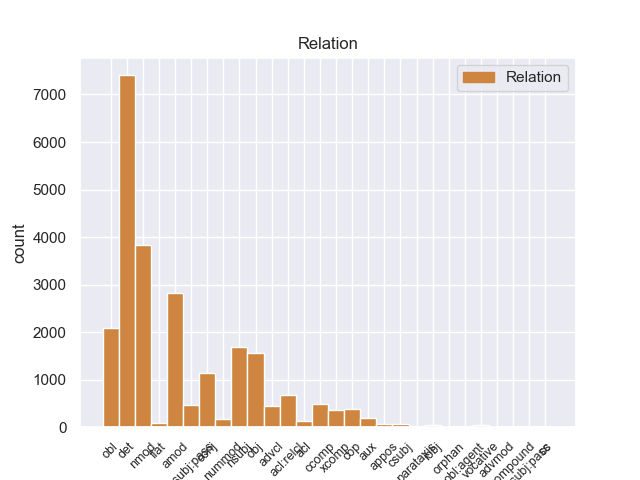
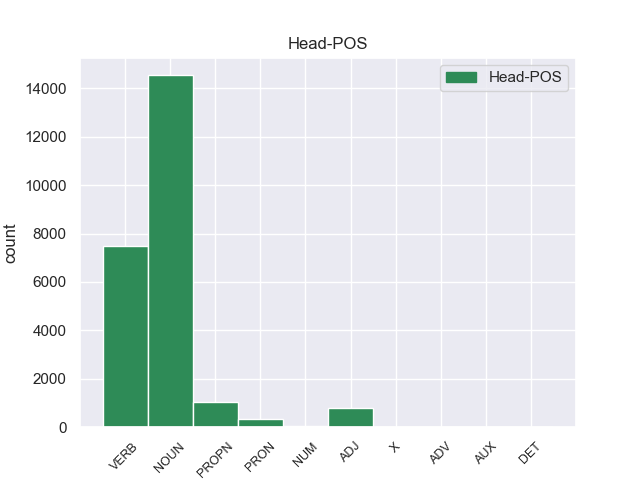
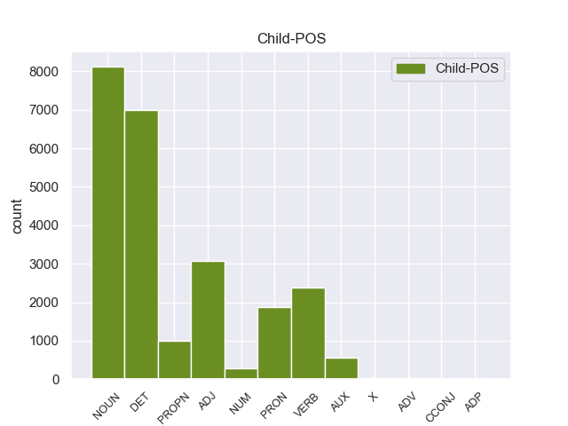

Distribution of features within this leaf



Agreement Rules sorted by frequency.
- When the dependent token is the determiner(det) of the head token, and the dependent token is DET.
1 Αυτό _ _ _ _ 0 _ _ _
2 μπορεί _ _ _ _ 0 _ _ _
3 να _ _ _ _ 0 _ _ _
4 μην _ _ _ _ 0 _ _ _
5 οδηγήσει _ _ _ _ 0 _ _ _
6 σ _ _ _ _ 0 _ _ _
7 τη _ _ _ _ 0 _ _ _
8 λήξη _ _ _ _ 0 _ _ _
9 του _ _ _ _ 0 _ _ _
10 εν _ _ _ _ 0 _ _ _
11 λόγω _ _ _ _ 0 _ _ _
12 ζητήματος _ _ _ _ 0 _ _ _
13 αλλά _ _ _ _ 0 _ _ _
14 , _ _ _ _ 0 _ _ _
15 σ _ _ _ _ 0 _ _ _
16 τη _ _ _ _ 0 _ _ _
17 μορφή _ _ _ _ 0 _ _ _
18 υπό _ _ _ _ 0 _ _ _
19 την _ _ _ _ 0 _ _ _
20 οποία _ _ _ _ 0 _ _ _
21 την _ _ _ _ 0 _ _ _
22 λάβαμε _ _ _ _ 0 _ _ _
23 , _ _ _ _ 0 _ _ _
24 αυτή _ _ _ _ 0 _ _ _
25 η _ _ _ _ 0 _ _ _
26 αίτηση _ _ _ _ 0 _ _ _
27 άρσης _ _ _ _ 0 _ _ _
28 της _ _ _ _ 0 _ _ _
29 ασυλίας _ _ _ _ 0 _ _ _
30 ήταν _ _ _ _ 0 _ _ _
31 , _ _ _ _ 0 _ _ _
32 κατά _ _ _ _ 0 _ _ _
33 την _ _ _ _ 0 _ _ _
34 άποψη _ _ _ _ 0 _ _ _
35 της _ _ _ _ 0 _ _ _
36 Επιτροπής _ _ _ _ 0 _ _ _
37 Νομικών _ _ _ _ 0 _ _ _
38 Θεμάτων _ _ _ _ 0 _ _ _
39 , _ _ _ _ 0 _ _ _
40 απαράδεκτη _ _ _ _ 0 _ _ _
41 , _ _ _ _ 0 _ _ _
42 άποψη _ _ _ _ 0 _ _ _
43 την _ _ _ _ 0 _ _ _
44 οποία _ _ _ _ 0 _ _ _
45 συνιστώ _ _ _ _ 0 _ _ _
46 σ _ _ _ _ 0 _ _ _
47 το ο DET _ Case=Acc|Gender=Neut|Number=Sing 48 det _ _
48 Σώμα σώμα NOUN _ Case=Acc|Gender=Neut|Number=Sing 0 _ _ _
49 να _ _ _ _ 0 _ _ _
50 υιοθετήσει _ _ _ _ 0 _ _ _
51 . _ _ _ _ 0 _ _ _
1 Αυτό _ _ _ _ 0 _ _ _
2 μπορεί _ _ _ _ 0 _ _ _
3 να _ _ _ _ 0 _ _ _
4 μην _ _ _ _ 0 _ _ _
5 οδηγήσει _ _ _ _ 0 _ _ _
6 σ _ _ _ _ 0 _ _ _
7 τη _ _ _ _ 0 _ _ _
8 λήξη _ _ _ _ 0 _ _ _
9 του _ _ _ _ 0 _ _ _
10 εν _ _ _ _ 0 _ _ _
11 λόγω _ _ _ _ 0 _ _ _
12 ζητήματος _ _ _ _ 0 _ _ _
13 αλλά _ _ _ _ 0 _ _ _
14 , _ _ _ _ 0 _ _ _
15 σ _ _ _ _ 0 _ _ _
16 τη _ _ _ _ 0 _ _ _
17 μορφή _ _ _ _ 0 _ _ _
18 υπό _ _ _ _ 0 _ _ _
19 την _ _ _ _ 0 _ _ _
20 οποία _ _ _ _ 0 _ _ _
21 την _ _ _ _ 0 _ _ _
22 λάβαμε _ _ _ _ 0 _ _ _
23 , _ _ _ _ 0 _ _ _
24 αυτή _ _ _ _ 0 _ _ _
25 η _ _ _ _ 0 _ _ _
26 αίτηση _ _ _ _ 0 _ _ _
27 άρσης _ _ _ _ 0 _ _ _
28 της _ _ _ _ 0 _ _ _
29 ασυλίας _ _ _ _ 0 _ _ _
30 ήταν _ _ _ _ 0 _ _ _
31 , _ _ _ _ 0 _ _ _
32 κατά _ _ _ _ 0 _ _ _
33 την _ _ _ _ 0 _ _ _
34 άποψη _ _ _ _ 0 _ _ _
35 της _ _ _ _ 0 _ _ _
36 Επιτροπής _ _ _ _ 0 _ _ _
37 Νομικών _ _ _ _ 0 _ _ _
38 Θεμάτων _ _ _ _ 0 _ _ _
39 , _ _ _ _ 0 _ _ _
40 απαράδεκτη απαράδεκτος ADJ _ Case=Nom|Gender=Fem|Number=Sing 42 amod _ _
41 , _ _ _ _ 0 _ _ _
42 άποψη άποψη NOUN _ Case=Nom|Gender=Fem|Number=Sing 0 _ _ _
43 την _ _ _ _ 0 _ _ _
44 οποία _ _ _ _ 0 _ _ _
45 συνιστώ _ _ _ _ 0 _ _ _
46 σ _ _ _ _ 0 _ _ _
47 το _ _ _ _ 0 _ _ _
48 Σώμα _ _ _ _ 0 _ _ _
49 να _ _ _ _ 0 _ _ _
50 υιοθετήσει _ _ _ _ 0 _ _ _
51 . _ _ _ _ 0 _ _ _
1 Αυτό _ _ _ _ 0 _ _ _
2 μπορεί _ _ _ _ 0 _ _ _
3 να _ _ _ _ 0 _ _ _
4 μην _ _ _ _ 0 _ _ _
5 οδηγήσει _ _ _ _ 0 _ _ _
6 σ _ _ _ _ 0 _ _ _
7 τη _ _ _ _ 0 _ _ _
8 λήξη _ _ _ _ 0 _ _ _
9 του _ _ _ _ 0 _ _ _
10 εν _ _ _ _ 0 _ _ _
11 λόγω _ _ _ _ 0 _ _ _
12 ζητήματος _ _ _ _ 0 _ _ _
13 αλλά _ _ _ _ 0 _ _ _
14 , _ _ _ _ 0 _ _ _
15 σ _ _ _ _ 0 _ _ _
16 τη _ _ _ _ 0 _ _ _
17 μορφή _ _ _ _ 0 _ _ _
18 υπό _ _ _ _ 0 _ _ _
19 την _ _ _ _ 0 _ _ _
20 οποία _ _ _ _ 0 _ _ _
21 την _ _ _ _ 0 _ _ _
22 λάβαμε _ _ _ _ 0 _ _ _
23 , _ _ _ _ 0 _ _ _
24 αυτή _ _ _ _ 0 _ _ _
25 η _ _ _ _ 0 _ _ _
26 αίτηση _ _ _ _ 0 _ _ _
27 άρσης _ _ _ _ 0 _ _ _
28 της _ _ _ _ 0 _ _ _
29 ασυλίας _ _ _ _ 0 _ _ _
30 ήταν _ _ _ _ 0 _ _ _
31 , _ _ _ _ 0 _ _ _
32 κατά _ _ _ _ 0 _ _ _
33 την _ _ _ _ 0 _ _ _
34 άποψη άποψη NOUN _ Case=Acc|Gender=Fem|Number=Sing 0 _ _ _
35 της _ _ _ _ 0 _ _ _
36 Επιτροπής επιτροπή NOUN _ Case=Gen|Gender=Fem|Number=Sing 34 nmod _ _
37 Νομικών _ _ _ _ 0 _ _ _
38 Θεμάτων _ _ _ _ 0 _ _ _
39 , _ _ _ _ 0 _ _ _
40 απαράδεκτη _ _ _ _ 0 _ _ _
41 , _ _ _ _ 0 _ _ _
42 άποψη _ _ _ _ 0 _ _ _
43 την _ _ _ _ 0 _ _ _
44 οποία _ _ _ _ 0 _ _ _
45 συνιστώ _ _ _ _ 0 _ _ _
46 σ _ _ _ _ 0 _ _ _
47 το _ _ _ _ 0 _ _ _
48 Σώμα _ _ _ _ 0 _ _ _
49 να _ _ _ _ 0 _ _ _
50 υιοθετήσει _ _ _ _ 0 _ _ _
51 . _ _ _ _ 0 _ _ _
1 Αυτό _ _ _ _ 0 _ _ _
2 μπορεί _ _ _ _ 0 _ _ _
3 να _ _ _ _ 0 _ _ _
4 μην _ _ _ _ 0 _ _ _
5 οδηγήσει οδηγώ VERB _ Aspect=Perf|Mood=Ind|Number=Sing|Person=3|VerbForm=Fin|Voice=Act 0 _ _ _
6 σ _ _ _ _ 0 _ _ _
7 τη _ _ _ _ 0 _ _ _
8 λήξη _ _ _ _ 0 _ _ _
9 του _ _ _ _ 0 _ _ _
10 εν _ _ _ _ 0 _ _ _
11 λόγω _ _ _ _ 0 _ _ _
12 ζητήματος _ _ _ _ 0 _ _ _
13 αλλά _ _ _ _ 0 _ _ _
14 , _ _ _ _ 0 _ _ _
15 σ _ _ _ _ 0 _ _ _
16 τη _ _ _ _ 0 _ _ _
17 μορφή _ _ _ _ 0 _ _ _
18 υπό _ _ _ _ 0 _ _ _
19 την _ _ _ _ 0 _ _ _
20 οποία _ _ _ _ 0 _ _ _
21 την _ _ _ _ 0 _ _ _
22 λάβαμε _ _ _ _ 0 _ _ _
23 , _ _ _ _ 0 _ _ _
24 αυτή _ _ _ _ 0 _ _ _
25 η _ _ _ _ 0 _ _ _
26 αίτηση αίτηση NOUN _ Case=Nom|Gender=Fem|Number=Sing 5 nsubj _ _
27 άρσης _ _ _ _ 0 _ _ _
28 της _ _ _ _ 0 _ _ _
29 ασυλίας _ _ _ _ 0 _ _ _
30 ήταν _ _ _ _ 0 _ _ _
31 , _ _ _ _ 0 _ _ _
32 κατά _ _ _ _ 0 _ _ _
33 την _ _ _ _ 0 _ _ _
34 άποψη _ _ _ _ 0 _ _ _
35 της _ _ _ _ 0 _ _ _
36 Επιτροπής _ _ _ _ 0 _ _ _
37 Νομικών _ _ _ _ 0 _ _ _
38 Θεμάτων _ _ _ _ 0 _ _ _
39 , _ _ _ _ 0 _ _ _
40 απαράδεκτη _ _ _ _ 0 _ _ _
41 , _ _ _ _ 0 _ _ _
42 άποψη _ _ _ _ 0 _ _ _
43 την _ _ _ _ 0 _ _ _
44 οποία _ _ _ _ 0 _ _ _
45 συνιστώ _ _ _ _ 0 _ _ _
46 σ _ _ _ _ 0 _ _ _
47 το _ _ _ _ 0 _ _ _
48 Σώμα _ _ _ _ 0 _ _ _
49 να _ _ _ _ 0 _ _ _
50 υιοθετήσει _ _ _ _ 0 _ _ _
51 . _ _ _ _ 0 _ _ _
1 Αυτό _ _ _ _ 0 _ _ _
2 μπορεί _ _ _ _ 0 _ _ _
3 να _ _ _ _ 0 _ _ _
4 μην _ _ _ _ 0 _ _ _
5 οδηγήσει _ _ _ _ 0 _ _ _
6 σ _ _ _ _ 0 _ _ _
7 τη _ _ _ _ 0 _ _ _
8 λήξη _ _ _ _ 0 _ _ _
9 του _ _ _ _ 0 _ _ _
10 εν _ _ _ _ 0 _ _ _
11 λόγω _ _ _ _ 0 _ _ _
12 ζητήματος _ _ _ _ 0 _ _ _
13 αλλά _ _ _ _ 0 _ _ _
14 , _ _ _ _ 0 _ _ _
15 σ _ _ _ _ 0 _ _ _
16 τη _ _ _ _ 0 _ _ _
17 μορφή _ _ _ _ 0 _ _ _
18 υπό _ _ _ _ 0 _ _ _
19 την _ _ _ _ 0 _ _ _
20 οποία _ _ _ _ 0 _ _ _
21 την _ _ _ _ 0 _ _ _
22 λάβαμε _ _ _ _ 0 _ _ _
23 , _ _ _ _ 0 _ _ _
24 αυτή _ _ _ _ 0 _ _ _
25 η _ _ _ _ 0 _ _ _
26 αίτηση _ _ _ _ 0 _ _ _
27 άρσης _ _ _ _ 0 _ _ _
28 της _ _ _ _ 0 _ _ _
29 ασυλίας _ _ _ _ 0 _ _ _
30 ήταν _ _ _ _ 0 _ _ _
31 , _ _ _ _ 0 _ _ _
32 κατά _ _ _ _ 0 _ _ _
33 την _ _ _ _ 0 _ _ _
34 άποψη _ _ _ _ 0 _ _ _
35 της _ _ _ _ 0 _ _ _
36 Επιτροπής _ _ _ _ 0 _ _ _
37 Νομικών _ _ _ _ 0 _ _ _
38 Θεμάτων _ _ _ _ 0 _ _ _
39 , _ _ _ _ 0 _ _ _
40 απαράδεκτη _ _ _ _ 0 _ _ _
41 , _ _ _ _ 0 _ _ _
42 άποψη _ _ _ _ 0 _ _ _
43 την _ _ _ _ 0 _ _ _
44 οποία _ _ _ _ 0 _ _ _
45 συνιστώ συνισω VERB _ Aspect=Imp|Mood=Ind|Number=Sing|Person=3|Tense=Pres|VerbForm=Fin|Voice=Act 0 _ _ _
46 σ _ _ _ _ 0 _ _ _
47 το _ _ _ _ 0 _ _ _
48 Σώμα σώμα NOUN _ Case=Acc|Gender=Neut|Number=Sing 45 obl _ _
49 να _ _ _ _ 0 _ _ _
50 υιοθετήσει _ _ _ _ 0 _ _ _
51 . _ _ _ _ 0 _ _ _
1 Υπ' _ _ _ _ 0 _ _ _
2 αυτές _ _ _ _ 0 _ _ _
3 τις _ _ _ _ 0 _ _ _
4 συνθήκες _ _ _ _ 0 _ _ _
5 , _ _ _ _ 0 _ _ _
6 η _ _ _ _ 0 _ _ _
7 Επιτροπή _ _ _ _ 0 _ _ _
8 Νομικών _ _ _ _ 0 _ _ _
9 Θεμάτων _ _ _ _ 0 _ _ _
10 , _ _ _ _ 0 _ _ _
11 της _ _ _ _ 0 _ _ _
12 οποίας _ _ _ _ 0 _ _ _
13 τη _ _ _ _ 0 _ _ _
14 θέση _ _ _ _ 0 _ _ _
15 αποδέχομαι _ _ _ _ 0 _ _ _
16 πλήρως _ _ _ _ 0 _ _ _
17 , _ _ _ _ 0 _ _ _
18 προτείνει προτείνω VERB _ Aspect=Imp|Mood=Ind|Number=Sing|Person=3|Tense=Pres|VerbForm=Fin|Voice=Act 0 _ _ _
19 την _ _ _ _ 0 _ _ _
20 απόρριψη απόρριψη NOUN _ Case=Acc|Gender=Fem|Number=Sing 18 obj _ _
21 της _ _ _ _ 0 _ _ _
22 αίτησης _ _ _ _ 0 _ _ _
23 άρσης _ _ _ _ 0 _ _ _
24 της _ _ _ _ 0 _ _ _
25 βουλευτικής _ _ _ _ 0 _ _ _
26 ασυλίας _ _ _ _ 0 _ _ _
27 την _ _ _ _ 0 _ _ _
28 οποία _ _ _ _ 0 _ _ _
29 υπέβαλε _ _ _ _ 0 _ _ _
30 το _ _ _ _ 0 _ _ _
31 γαλλικό _ _ _ _ 0 _ _ _
32 Υπουργείο _ _ _ _ 0 _ _ _
33 Δικαιοσύνης _ _ _ _ 0 _ _ _
34 , _ _ _ _ 0 _ _ _
35 σ _ _ _ _ 0 _ _ _
36 τη _ _ _ _ 0 _ _ _
37 μορφή _ _ _ _ 0 _ _ _
38 υπό _ _ _ _ 0 _ _ _
39 την _ _ _ _ 0 _ _ _
40 οποία _ _ _ _ 0 _ _ _
41 υποβλήθηκε _ _ _ _ 0 _ _ _
42 σ _ _ _ _ 0 _ _ _
43 το _ _ _ _ 0 _ _ _
44 Κοινοβούλιο _ _ _ _ 0 _ _ _
45 . _ _ _ _ 0 _ _ _
1 Αυτό _ _ _ _ 0 _ _ _
2 μπορεί _ _ _ _ 0 _ _ _
3 να _ _ _ _ 0 _ _ _
4 μην _ _ _ _ 0 _ _ _
5 οδηγήσει _ _ _ _ 0 _ _ _
6 σ _ _ _ _ 0 _ _ _
7 τη _ _ _ _ 0 _ _ _
8 λήξη _ _ _ _ 0 _ _ _
9 του _ _ _ _ 0 _ _ _
10 εν _ _ _ _ 0 _ _ _
11 λόγω _ _ _ _ 0 _ _ _
12 ζητήματος _ _ _ _ 0 _ _ _
13 αλλά _ _ _ _ 0 _ _ _
14 , _ _ _ _ 0 _ _ _
15 σ _ _ _ _ 0 _ _ _
16 τη _ _ _ _ 0 _ _ _
17 μορφή _ _ _ _ 0 _ _ _
18 υπό _ _ _ _ 0 _ _ _
19 την _ _ _ _ 0 _ _ _
20 οποία _ _ _ _ 0 _ _ _
21 την _ _ _ _ 0 _ _ _
22 λάβαμε _ _ _ _ 0 _ _ _
23 , _ _ _ _ 0 _ _ _
24 αυτή _ _ _ _ 0 _ _ _
25 η _ _ _ _ 0 _ _ _
26 αίτηση _ _ _ _ 0 _ _ _
27 άρσης _ _ _ _ 0 _ _ _
28 της _ _ _ _ 0 _ _ _
29 ασυλίας _ _ _ _ 0 _ _ _
30 ήταν _ _ _ _ 0 _ _ _
31 , _ _ _ _ 0 _ _ _
32 κατά _ _ _ _ 0 _ _ _
33 την _ _ _ _ 0 _ _ _
34 άποψη _ _ _ _ 0 _ _ _
35 της _ _ _ _ 0 _ _ _
36 Επιτροπής _ _ _ _ 0 _ _ _
37 Νομικών _ _ _ _ 0 _ _ _
38 Θεμάτων _ _ _ _ 0 _ _ _
39 , _ _ _ _ 0 _ _ _
40 απαράδεκτη _ _ _ _ 0 _ _ _
41 , _ _ _ _ 0 _ _ _
42 άποψη άποψη NOUN _ Case=Nom|Gender=Fem|Number=Sing 0 _ _ _
43 την _ _ _ _ 0 _ _ _
44 οποία _ _ _ _ 0 _ _ _
45 συνιστώ συνισω VERB _ Aspect=Imp|Mood=Ind|Number=Sing|Person=3|Tense=Pres|VerbForm=Fin|Voice=Act 42 acl:relcl _ _
46 σ _ _ _ _ 0 _ _ _
47 το _ _ _ _ 0 _ _ _
48 Σώμα _ _ _ _ 0 _ _ _
49 να _ _ _ _ 0 _ _ _
50 υιοθετήσει _ _ _ _ 0 _ _ _
51 . _ _ _ _ 0 _ _ _
1 Αυτό _ _ _ _ 0 _ _ _
2 μπορεί μπορώ VERB _ Aspect=Imp|Mood=Ind|Number=Sing|Person=3|Tense=Pres|VerbForm=Fin|Voice=Act 0 _ _ _
3 να _ _ _ _ 0 _ _ _
4 μην _ _ _ _ 0 _ _ _
5 οδηγήσει _ _ _ _ 0 _ _ _
6 σ _ _ _ _ 0 _ _ _
7 τη _ _ _ _ 0 _ _ _
8 λήξη _ _ _ _ 0 _ _ _
9 του _ _ _ _ 0 _ _ _
10 εν _ _ _ _ 0 _ _ _
11 λόγω _ _ _ _ 0 _ _ _
12 ζητήματος _ _ _ _ 0 _ _ _
13 αλλά _ _ _ _ 0 _ _ _
14 , _ _ _ _ 0 _ _ _
15 σ _ _ _ _ 0 _ _ _
16 τη _ _ _ _ 0 _ _ _
17 μορφή _ _ _ _ 0 _ _ _
18 υπό _ _ _ _ 0 _ _ _
19 την _ _ _ _ 0 _ _ _
20 οποία _ _ _ _ 0 _ _ _
21 την _ _ _ _ 0 _ _ _
22 λάβαμε _ _ _ _ 0 _ _ _
23 , _ _ _ _ 0 _ _ _
24 αυτή _ _ _ _ 0 _ _ _
25 η _ _ _ _ 0 _ _ _
26 αίτηση _ _ _ _ 0 _ _ _
27 άρσης _ _ _ _ 0 _ _ _
28 της _ _ _ _ 0 _ _ _
29 ασυλίας _ _ _ _ 0 _ _ _
30 ήταν _ _ _ _ 0 _ _ _
31 , _ _ _ _ 0 _ _ _
32 κατά _ _ _ _ 0 _ _ _
33 την _ _ _ _ 0 _ _ _
34 άποψη _ _ _ _ 0 _ _ _
35 της _ _ _ _ 0 _ _ _
36 Επιτροπής _ _ _ _ 0 _ _ _
37 Νομικών _ _ _ _ 0 _ _ _
38 Θεμάτων _ _ _ _ 0 _ _ _
39 , _ _ _ _ 0 _ _ _
40 απαράδεκτη _ _ _ _ 0 _ _ _
41 , _ _ _ _ 0 _ _ _
42 άποψη άποψη NOUN _ Case=Nom|Gender=Fem|Number=Sing 2 conj _ _
43 την _ _ _ _ 0 _ _ _
44 οποία _ _ _ _ 0 _ _ _
45 συνιστώ _ _ _ _ 0 _ _ _
46 σ _ _ _ _ 0 _ _ _
47 το _ _ _ _ 0 _ _ _
48 Σώμα _ _ _ _ 0 _ _ _
49 να _ _ _ _ 0 _ _ _
50 υιοθετήσει _ _ _ _ 0 _ _ _
51 . _ _ _ _ 0 _ _ _
1 Αυτό _ _ _ _ 0 _ _ _
2 μπορεί _ _ _ _ 0 _ _ _
3 να _ _ _ _ 0 _ _ _
4 μην _ _ _ _ 0 _ _ _
5 οδηγήσει _ _ _ _ 0 _ _ _
6 σ _ _ _ _ 0 _ _ _
7 τη _ _ _ _ 0 _ _ _
8 λήξη _ _ _ _ 0 _ _ _
9 του _ _ _ _ 0 _ _ _
10 εν _ _ _ _ 0 _ _ _
11 λόγω _ _ _ _ 0 _ _ _
12 ζητήματος _ _ _ _ 0 _ _ _
13 αλλά _ _ _ _ 0 _ _ _
14 , _ _ _ _ 0 _ _ _
15 σ _ _ _ _ 0 _ _ _
16 τη _ _ _ _ 0 _ _ _
17 μορφή _ _ _ _ 0 _ _ _
18 υπό _ _ _ _ 0 _ _ _
19 την _ _ _ _ 0 _ _ _
20 οποία _ _ _ _ 0 _ _ _
21 την _ _ _ _ 0 _ _ _
22 λάβαμε _ _ _ _ 0 _ _ _
23 , _ _ _ _ 0 _ _ _
24 αυτή αυτός PRON _ Case=Nom|Gender=Fem|Number=Sing|Person=3|PronType=Dem 26 det _ _
25 η _ _ _ _ 0 _ _ _
26 αίτηση αίτηση NOUN _ Case=Nom|Gender=Fem|Number=Sing 0 _ _ _
27 άρσης _ _ _ _ 0 _ _ _
28 της _ _ _ _ 0 _ _ _
29 ασυλίας _ _ _ _ 0 _ _ _
30 ήταν _ _ _ _ 0 _ _ _
31 , _ _ _ _ 0 _ _ _
32 κατά _ _ _ _ 0 _ _ _
33 την _ _ _ _ 0 _ _ _
34 άποψη _ _ _ _ 0 _ _ _
35 της _ _ _ _ 0 _ _ _
36 Επιτροπής _ _ _ _ 0 _ _ _
37 Νομικών _ _ _ _ 0 _ _ _
38 Θεμάτων _ _ _ _ 0 _ _ _
39 , _ _ _ _ 0 _ _ _
40 απαράδεκτη _ _ _ _ 0 _ _ _
41 , _ _ _ _ 0 _ _ _
42 άποψη _ _ _ _ 0 _ _ _
43 την _ _ _ _ 0 _ _ _
44 οποία _ _ _ _ 0 _ _ _
45 συνιστώ _ _ _ _ 0 _ _ _
46 σ _ _ _ _ 0 _ _ _
47 το _ _ _ _ 0 _ _ _
48 Σώμα _ _ _ _ 0 _ _ _
49 να _ _ _ _ 0 _ _ _
50 υιοθετήσει _ _ _ _ 0 _ _ _
51 . _ _ _ _ 0 _ _ _
1 Αυτό αυτός PRON _ Case=Nom|Gender=Neut|Number=Sing|Person=3|PronType=Dem 2 nsubj _ _
2 μπορεί μπορώ VERB _ Aspect=Imp|Mood=Ind|Number=Sing|Person=3|Tense=Pres|VerbForm=Fin|Voice=Act 0 _ _ _
3 να _ _ _ _ 0 _ _ _
4 μην _ _ _ _ 0 _ _ _
5 οδηγήσει _ _ _ _ 0 _ _ _
6 σ _ _ _ _ 0 _ _ _
7 τη _ _ _ _ 0 _ _ _
8 λήξη _ _ _ _ 0 _ _ _
9 του _ _ _ _ 0 _ _ _
10 εν _ _ _ _ 0 _ _ _
11 λόγω _ _ _ _ 0 _ _ _
12 ζητήματος _ _ _ _ 0 _ _ _
13 αλλά _ _ _ _ 0 _ _ _
14 , _ _ _ _ 0 _ _ _
15 σ _ _ _ _ 0 _ _ _
16 τη _ _ _ _ 0 _ _ _
17 μορφή _ _ _ _ 0 _ _ _
18 υπό _ _ _ _ 0 _ _ _
19 την _ _ _ _ 0 _ _ _
20 οποία _ _ _ _ 0 _ _ _
21 την _ _ _ _ 0 _ _ _
22 λάβαμε _ _ _ _ 0 _ _ _
23 , _ _ _ _ 0 _ _ _
24 αυτή _ _ _ _ 0 _ _ _
25 η _ _ _ _ 0 _ _ _
26 αίτηση _ _ _ _ 0 _ _ _
27 άρσης _ _ _ _ 0 _ _ _
28 της _ _ _ _ 0 _ _ _
29 ασυλίας _ _ _ _ 0 _ _ _
30 ήταν _ _ _ _ 0 _ _ _
31 , _ _ _ _ 0 _ _ _
32 κατά _ _ _ _ 0 _ _ _
33 την _ _ _ _ 0 _ _ _
34 άποψη _ _ _ _ 0 _ _ _
35 της _ _ _ _ 0 _ _ _
36 Επιτροπής _ _ _ _ 0 _ _ _
37 Νομικών _ _ _ _ 0 _ _ _
38 Θεμάτων _ _ _ _ 0 _ _ _
39 , _ _ _ _ 0 _ _ _
40 απαράδεκτη _ _ _ _ 0 _ _ _
41 , _ _ _ _ 0 _ _ _
42 άποψη _ _ _ _ 0 _ _ _
43 την _ _ _ _ 0 _ _ _
44 οποία _ _ _ _ 0 _ _ _
45 συνιστώ _ _ _ _ 0 _ _ _
46 σ _ _ _ _ 0 _ _ _
47 το _ _ _ _ 0 _ _ _
48 Σώμα _ _ _ _ 0 _ _ _
49 να _ _ _ _ 0 _ _ _
50 υιοθετήσει _ _ _ _ 0 _ _ _
51 . _ _ _ _ 0 _ _ _
1 Ο _ _ _ _ 0 _ _ _
2 Εισαγγελέας εισαγγελέας NOUN _ Case=Nom|Gender=Masc|Number=Sing 0 _ _ _
3 σ _ _ _ _ 0 _ _ _
4 τη _ _ _ _ 0 _ _ _
5 Γαλλία Γαλλία PROPN _ Case=Acc|Gender=Fem|Number=Sing 2 nmod _ _
6 έχει _ _ _ _ 0 _ _ _
7 το _ _ _ _ 0 _ _ _
8 δικαίωμα _ _ _ _ 0 _ _ _
9 να _ _ _ _ 0 _ _ _
10 εκπληρώνει _ _ _ _ 0 _ _ _
11 τα _ _ _ _ 0 _ _ _
12 καθήκοντά _ _ _ _ 0 _ _ _
13 του _ _ _ _ 0 _ _ _
14 βάσει _ _ _ _ 0 _ _ _
15 του _ _ _ _ 0 _ _ _
16 νόμου _ _ _ _ 0 _ _ _
17 και _ _ _ _ 0 _ _ _
18 το _ _ _ _ 0 _ _ _
19 Σώμα _ _ _ _ 0 _ _ _
20 δεν _ _ _ _ 0 _ _ _
21 λαμβάνει _ _ _ _ 0 _ _ _
22 θέση _ _ _ _ 0 _ _ _
23 σχετικά _ _ _ _ 0 _ _ _
24 με _ _ _ _ 0 _ _ _
25 αυτό _ _ _ _ 0 _ _ _
26 . _ _ _ _ 0 _ _ _
1 Αυτό _ _ _ _ 0 _ _ _
2 μπορεί _ _ _ _ 0 _ _ _
3 να _ _ _ _ 0 _ _ _
4 μην _ _ _ _ 0 _ _ _
5 οδηγήσει _ _ _ _ 0 _ _ _
6 σ _ _ _ _ 0 _ _ _
7 τη _ _ _ _ 0 _ _ _
8 λήξη _ _ _ _ 0 _ _ _
9 του _ _ _ _ 0 _ _ _
10 εν _ _ _ _ 0 _ _ _
11 λόγω _ _ _ _ 0 _ _ _
12 ζητήματος _ _ _ _ 0 _ _ _
13 αλλά _ _ _ _ 0 _ _ _
14 , _ _ _ _ 0 _ _ _
15 σ _ _ _ _ 0 _ _ _
16 τη _ _ _ _ 0 _ _ _
17 μορφή _ _ _ _ 0 _ _ _
18 υπό _ _ _ _ 0 _ _ _
19 την _ _ _ _ 0 _ _ _
20 οποία _ _ _ _ 0 _ _ _
21 την _ _ _ _ 0 _ _ _
22 λάβαμε _ _ _ _ 0 _ _ _
23 , _ _ _ _ 0 _ _ _
24 αυτή _ _ _ _ 0 _ _ _
25 η _ _ _ _ 0 _ _ _
26 αίτηση _ _ _ _ 0 _ _ _
27 άρσης _ _ _ _ 0 _ _ _
28 της _ _ _ _ 0 _ _ _
29 ασυλίας _ _ _ _ 0 _ _ _
30 ήταν είμαι AUX _ Aspect=Imp|Mood=Ind|Number=Sing|Person=3|Tense=Past|VerbForm=Fin|Voice=Pass 42 cop _ _
31 , _ _ _ _ 0 _ _ _
32 κατά _ _ _ _ 0 _ _ _
33 την _ _ _ _ 0 _ _ _
34 άποψη _ _ _ _ 0 _ _ _
35 της _ _ _ _ 0 _ _ _
36 Επιτροπής _ _ _ _ 0 _ _ _
37 Νομικών _ _ _ _ 0 _ _ _
38 Θεμάτων _ _ _ _ 0 _ _ _
39 , _ _ _ _ 0 _ _ _
40 απαράδεκτη _ _ _ _ 0 _ _ _
41 , _ _ _ _ 0 _ _ _
42 άποψη άποψη NOUN _ Case=Nom|Gender=Fem|Number=Sing 0 _ _ _
43 την _ _ _ _ 0 _ _ _
44 οποία _ _ _ _ 0 _ _ _
45 συνιστώ _ _ _ _ 0 _ _ _
46 σ _ _ _ _ 0 _ _ _
47 το _ _ _ _ 0 _ _ _
48 Σώμα _ _ _ _ 0 _ _ _
49 να _ _ _ _ 0 _ _ _
50 υιοθετήσει _ _ _ _ 0 _ _ _
51 . _ _ _ _ 0 _ _ _
1 Ευελπιστώ _ _ _ _ 0 _ _ _
2 ότι _ _ _ _ 0 _ _ _
3 η _ _ _ _ 0 _ _ _
4 απόφαση απόφαση NOUN _ Case=Nom|Gender=Fem|Number=Sing 17 nsubj:pass _ _
5 αυτή _ _ _ _ 0 _ _ _
6 , _ _ _ _ 0 _ _ _
7 συμπεριλαμβανομένης _ _ _ _ 0 _ _ _
8 και _ _ _ _ 0 _ _ _
9 της _ _ _ _ 0 _ _ _
10 αιτιολογικής _ _ _ _ 0 _ _ _
11 έκθεσης _ _ _ _ 0 _ _ _
12 που _ _ _ _ 0 _ _ _
13 την _ _ _ _ 0 _ _ _
14 συνοδεύει _ _ _ _ 0 _ _ _
15 , _ _ _ _ 0 _ _ _
16 θα _ _ _ _ 0 _ _ _
17 διαβιβαστεί διαβιβαώ VERB _ Aspect=Perf|Mood=Ind|Number=Sing|Person=3|VerbForm=Fin|Voice=Pass 0 _ _ _
18 σ _ _ _ _ 0 _ _ _
19 τις _ _ _ _ 0 _ _ _
20 γαλλικές _ _ _ _ 0 _ _ _
21 αρχές _ _ _ _ 0 _ _ _
22 , _ _ _ _ 0 _ _ _
23 εφόσον _ _ _ _ 0 _ _ _
24 υπερψηφιστεί _ _ _ _ 0 _ _ _
25 από _ _ _ _ 0 _ _ _
26 το _ _ _ _ 0 _ _ _
27 Κοινοβούλιο _ _ _ _ 0 _ _ _
28 . _ _ _ _ 0 _ _ _
1 Ευελπιστώ _ _ _ _ 0 _ _ _
2 ότι _ _ _ _ 0 _ _ _
3 η _ _ _ _ 0 _ _ _
4 απόφαση _ _ _ _ 0 _ _ _
5 αυτή _ _ _ _ 0 _ _ _
6 , _ _ _ _ 0 _ _ _
7 συμπεριλαμβανομένης _ _ _ _ 0 _ _ _
8 και _ _ _ _ 0 _ _ _
9 της _ _ _ _ 0 _ _ _
10 αιτιολογικής _ _ _ _ 0 _ _ _
11 έκθεσης _ _ _ _ 0 _ _ _
12 που _ _ _ _ 0 _ _ _
13 την _ _ _ _ 0 _ _ _
14 συνοδεύει _ _ _ _ 0 _ _ _
15 , _ _ _ _ 0 _ _ _
16 θα _ _ _ _ 0 _ _ _
17 διαβιβαστεί διαβιβαώ VERB _ Aspect=Perf|Mood=Ind|Number=Sing|Person=3|VerbForm=Fin|Voice=Pass 0 _ _ _
18 σ _ _ _ _ 0 _ _ _
19 τις _ _ _ _ 0 _ _ _
20 γαλλικές _ _ _ _ 0 _ _ _
21 αρχές _ _ _ _ 0 _ _ _
22 , _ _ _ _ 0 _ _ _
23 εφόσον _ _ _ _ 0 _ _ _
24 υπερψηφιστεί υπερψηφιώ VERB _ Aspect=Perf|Mood=Ind|Number=Sing|Person=3|VerbForm=Fin|Voice=Pass 17 advcl _ _
25 από _ _ _ _ 0 _ _ _
26 το _ _ _ _ 0 _ _ _
27 Κοινοβούλιο _ _ _ _ 0 _ _ _
28 . _ _ _ _ 0 _ _ _
1 Αυτό _ _ _ _ 0 _ _ _
2 μπορεί _ _ _ _ 0 _ _ _
3 να _ _ _ _ 0 _ _ _
4 μην _ _ _ _ 0 _ _ _
5 οδηγήσει _ _ _ _ 0 _ _ _
6 σ _ _ _ _ 0 _ _ _
7 τη _ _ _ _ 0 _ _ _
8 λήξη _ _ _ _ 0 _ _ _
9 του _ _ _ _ 0 _ _ _
10 εν _ _ _ _ 0 _ _ _
11 λόγω _ _ _ _ 0 _ _ _
12 ζητήματος _ _ _ _ 0 _ _ _
13 αλλά _ _ _ _ 0 _ _ _
14 , _ _ _ _ 0 _ _ _
15 σ _ _ _ _ 0 _ _ _
16 τη _ _ _ _ 0 _ _ _
17 μορφή _ _ _ _ 0 _ _ _
18 υπό _ _ _ _ 0 _ _ _
19 την _ _ _ _ 0 _ _ _
20 οποία _ _ _ _ 0 _ _ _
21 την _ _ _ _ 0 _ _ _
22 λάβαμε _ _ _ _ 0 _ _ _
23 , _ _ _ _ 0 _ _ _
24 αυτή _ _ _ _ 0 _ _ _
25 η _ _ _ _ 0 _ _ _
26 αίτηση _ _ _ _ 0 _ _ _
27 άρσης _ _ _ _ 0 _ _ _
28 της _ _ _ _ 0 _ _ _
29 ασυλίας _ _ _ _ 0 _ _ _
30 ήταν _ _ _ _ 0 _ _ _
31 , _ _ _ _ 0 _ _ _
32 κατά _ _ _ _ 0 _ _ _
33 την _ _ _ _ 0 _ _ _
34 άποψη _ _ _ _ 0 _ _ _
35 της _ _ _ _ 0 _ _ _
36 Επιτροπής _ _ _ _ 0 _ _ _
37 Νομικών _ _ _ _ 0 _ _ _
38 Θεμάτων _ _ _ _ 0 _ _ _
39 , _ _ _ _ 0 _ _ _
40 απαράδεκτη _ _ _ _ 0 _ _ _
41 , _ _ _ _ 0 _ _ _
42 άποψη _ _ _ _ 0 _ _ _
43 την _ _ _ _ 0 _ _ _
44 οποία _ _ _ _ 0 _ _ _
45 συνιστώ συνισω VERB _ Aspect=Imp|Mood=Ind|Number=Sing|Person=3|Tense=Pres|VerbForm=Fin|Voice=Act 0 _ _ _
46 σ _ _ _ _ 0 _ _ _
47 το _ _ _ _ 0 _ _ _
48 Σώμα _ _ _ _ 0 _ _ _
49 να _ _ _ _ 0 _ _ _
50 υιοθετήσει υιοθετώ VERB _ Aspect=Perf|Mood=Ind|Number=Sing|Person=3|VerbForm=Fin|Voice=Act 45 ccomp _ _
51 . _ _ _ _ 0 _ _ _
1 Συνεπώς _ _ _ _ 0 _ _ _
2 , _ _ _ _ 0 _ _ _
3 η _ _ _ _ 0 _ _ _
4 παρούσα _ _ _ _ 0 _ _ _
5 αίτηση _ _ _ _ 0 _ _ _
6 άρσης _ _ _ _ 0 _ _ _
7 της _ _ _ _ 0 _ _ _
8 ασυλίας _ _ _ _ 0 _ _ _
9 δεν _ _ _ _ 0 _ _ _
10 αφορά _ _ _ _ 0 _ _ _
11 το _ _ _ _ 0 _ _ _
12 ζήτημα _ _ _ _ 0 _ _ _
13 εάν _ _ _ _ 0 _ _ _
14 οι _ _ _ _ 0 _ _ _
15 διώξεις _ _ _ _ 0 _ _ _
16 μπορούν μπορώ VERB _ Aspect=Imp|Mood=Ind|Number=Plur|Person=3|Tense=Pres|VerbForm=Fin|Voice=Act 0 _ _ _
17 ή _ _ _ _ 0 _ _ _
18 πρέπει _ _ _ _ 0 _ _ _
19 να _ _ _ _ 0 _ _ _
20 συνεχιστούν συνεχιω VERB _ Aspect=Imp|Mood=Ind|Number=Plur|Person=3|Tense=Pres|VerbForm=Fin|Voice=Pass 16 conj _ _
21 με _ _ _ _ 0 _ _ _
22 βάση _ _ _ _ 0 _ _ _
23 το _ _ _ _ 0 _ _ _
24 γαλλικό _ _ _ _ 0 _ _ _
25 δίκαιο _ _ _ _ 0 _ _ _
26 . _ _ _ _ 0 _ _ _
1 Το _ _ _ _ 0 _ _ _
2 άρθρο _ _ _ _ 0 _ _ _
3 9 _ _ _ _ 0 _ _ _
4 του _ _ _ _ 0 _ _ _
5 Πρωτοκόλλου _ _ _ _ 0 _ _ _
6 , _ _ _ _ 0 _ _ _
7 όπως _ _ _ _ 0 _ _ _
8 επεσήμανε _ _ _ _ 0 _ _ _
9 με _ _ _ _ 0 _ _ _
10 αυστηρότητα _ _ _ _ 0 _ _ _
11 η _ _ _ _ 0 _ _ _
12 Πρόεδρος _ _ _ _ 0 _ _ _
13 Fontaine _ _ _ _ 0 _ _ _
14 σ _ _ _ _ 0 _ _ _
15 τον _ _ _ _ 0 _ _ _
16 Εισαγγελέα _ _ _ _ 0 _ _ _
17 , _ _ _ _ 0 _ _ _
18 μας _ _ _ _ 0 _ _ _
19 απαλλάσσει _ _ _ _ 0 _ _ _
20 τελείως _ _ _ _ 0 _ _ _
21 από _ _ _ _ 0 _ _ _
22 οποιαδήποτε _ _ _ _ 0 _ _ _
23 νομική _ _ _ _ 0 _ _ _
24 διαδικασία _ _ _ _ 0 _ _ _
25 σε _ _ _ _ 0 _ _ _
26 σχέση _ _ _ _ 0 _ _ _
27 με _ _ _ _ 0 _ _ _
28 την _ _ _ _ 0 _ _ _
29 έκφραση _ _ _ _ 0 _ _ _
30 γνώμης _ _ _ _ 0 _ _ _
31 ή _ _ _ _ 0 _ _ _
32 ψήφου _ _ _ _ 0 _ _ _
33 κατά _ _ _ _ 0 _ _ _
34 την _ _ _ _ 0 _ _ _
35 άσκηση _ _ _ _ 0 _ _ _
36 των _ _ _ _ 0 _ _ _
37 καθηκόντων καθηκόντας NOUN _ Case=Gen|Gender=Masc|Number=Plur 0 _ _ _
38 μας μου PRON _ Case=Gen|Gender=Masc|Number=Plur|Person=1|Poss=Yes|PronType=Prs 37 nmod _ _
39 ως _ _ _ _ 0 _ _ _
40 μέλη _ _ _ _ 0 _ _ _
41 αυτού _ _ _ _ 0 _ _ _
42 του _ _ _ _ 0 _ _ _
43 Κοινοβουλίου _ _ _ _ 0 _ _ _
44 . _ _ _ _ 0 _ _ _
1 Αυτό _ _ _ _ 0 _ _ _
2 μπορεί μπορώ VERB _ Aspect=Imp|Mood=Ind|Number=Sing|Person=3|Tense=Pres|VerbForm=Fin|Voice=Act 0 _ _ _
3 να _ _ _ _ 0 _ _ _
4 μην _ _ _ _ 0 _ _ _
5 οδηγήσει οδηγώ VERB _ Aspect=Perf|Mood=Ind|Number=Sing|Person=3|VerbForm=Fin|Voice=Act 2 xcomp _ _
6 σ _ _ _ _ 0 _ _ _
7 τη _ _ _ _ 0 _ _ _
8 λήξη _ _ _ _ 0 _ _ _
9 του _ _ _ _ 0 _ _ _
10 εν _ _ _ _ 0 _ _ _
11 λόγω _ _ _ _ 0 _ _ _
12 ζητήματος _ _ _ _ 0 _ _ _
13 αλλά _ _ _ _ 0 _ _ _
14 , _ _ _ _ 0 _ _ _
15 σ _ _ _ _ 0 _ _ _
16 τη _ _ _ _ 0 _ _ _
17 μορφή _ _ _ _ 0 _ _ _
18 υπό _ _ _ _ 0 _ _ _
19 την _ _ _ _ 0 _ _ _
20 οποία _ _ _ _ 0 _ _ _
21 την _ _ _ _ 0 _ _ _
22 λάβαμε _ _ _ _ 0 _ _ _
23 , _ _ _ _ 0 _ _ _
24 αυτή _ _ _ _ 0 _ _ _
25 η _ _ _ _ 0 _ _ _
26 αίτηση _ _ _ _ 0 _ _ _
27 άρσης _ _ _ _ 0 _ _ _
28 της _ _ _ _ 0 _ _ _
29 ασυλίας _ _ _ _ 0 _ _ _
30 ήταν _ _ _ _ 0 _ _ _
31 , _ _ _ _ 0 _ _ _
32 κατά _ _ _ _ 0 _ _ _
33 την _ _ _ _ 0 _ _ _
34 άποψη _ _ _ _ 0 _ _ _
35 της _ _ _ _ 0 _ _ _
36 Επιτροπής _ _ _ _ 0 _ _ _
37 Νομικών _ _ _ _ 0 _ _ _
38 Θεμάτων _ _ _ _ 0 _ _ _
39 , _ _ _ _ 0 _ _ _
40 απαράδεκτη _ _ _ _ 0 _ _ _
41 , _ _ _ _ 0 _ _ _
42 άποψη _ _ _ _ 0 _ _ _
43 την _ _ _ _ 0 _ _ _
44 οποία _ _ _ _ 0 _ _ _
45 συνιστώ _ _ _ _ 0 _ _ _
46 σ _ _ _ _ 0 _ _ _
47 το _ _ _ _ 0 _ _ _
48 Σώμα _ _ _ _ 0 _ _ _
49 να _ _ _ _ 0 _ _ _
50 υιοθετήσει _ _ _ _ 0 _ _ _
51 . _ _ _ _ 0 _ _ _
1 πρόκειται _ _ _ _ 0 _ _ _
2 για _ _ _ _ 0 _ _ _
3 αυτό _ _ _ _ 0 _ _ _
4 το _ _ _ _ 0 _ _ _
5 οποίο _ _ _ _ 0 _ _ _
6 αποκαλύφθηκε _ _ _ _ 0 _ _ _
7 κατά _ _ _ _ 0 _ _ _
8 τη _ _ _ _ 0 _ _ _
9 διάρκεια _ _ _ _ 0 _ _ _
10 αυτής _ _ _ _ 0 _ _ _
11 της _ _ _ _ 0 _ _ _
12 διαδικασίας _ _ _ _ 0 _ _ _
13 , _ _ _ _ 0 _ _ _
14 ότι _ _ _ _ 0 _ _ _
15 ο _ _ _ _ 0 _ _ _
16 Εισαγγελέας _ _ _ _ 0 _ _ _
17 κάποια _ _ _ _ 0 _ _ _
18 στιγμή _ _ _ _ 0 _ _ _
19 ζήτησε _ _ _ _ 0 _ _ _
20 από _ _ _ _ 0 _ _ _
21 την _ _ _ _ 0 _ _ _
22 Πρόεδρο _ _ _ _ 0 _ _ _
23 του _ _ _ _ 0 _ _ _
24 Σώματος _ _ _ _ 0 _ _ _
25 , _ _ _ _ 0 _ _ _
26 την _ _ _ _ 0 _ _ _
27 προκάτοχό _ _ _ _ 0 _ _ _
28 σας _ _ _ _ 0 _ _ _
29 , _ _ _ _ 0 _ _ _
30 λεπτομέρειες _ _ _ _ 0 _ _ _
31 για _ _ _ _ 0 _ _ _
32 την _ _ _ _ 0 _ _ _
33 ψήφο _ _ _ _ 0 _ _ _
34 που _ _ _ _ 0 _ _ _
35 έχουν _ _ _ _ 0 _ _ _
36 δώσει _ _ _ _ 0 _ _ _
37 οι _ _ _ _ 0 _ _ _
38 δύο δύο NUM _ Case=Nom|Gender=Masc|Number=Plur|NumType=Card 40 nummod _ _
39 συγκεκριμένοι _ _ _ _ 0 _ _ _
40 βουλευτές βουλευτής NOUN _ Case=Nom|Gender=Masc|Number=Plur 0 _ _ _
41 προκειμένου _ _ _ _ 0 _ _ _
42 να _ _ _ _ 0 _ _ _
43 διευκρινιστεί _ _ _ _ 0 _ _ _
44 περαιτέρω _ _ _ _ 0 _ _ _
45 η _ _ _ _ 0 _ _ _
46 πιθανότητα _ _ _ _ 0 _ _ _
47 να _ _ _ _ 0 _ _ _
48 είχαν _ _ _ _ 0 _ _ _
49 ασκήσει _ _ _ _ 0 _ _ _
50 αθέμιτη _ _ _ _ 0 _ _ _
51 επιρροή _ _ _ _ 0 _ _ _
52 . _ _ _ _ 0 _ _ _
1 Επίσης _ _ _ _ 0 _ _ _
2 ο _ _ _ _ 0 _ _ _
3 Βενιαμίν Βενιαμίν PROPN _ Case=Nom|Gender=Masc|Number=Sing 5 nsubj _ _
4 Νετανιάχου _ _ _ _ 0 _ _ _
5 εξέφρασε ξέφράνω VERB _ Aspect=Perf|Mood=Ind|Number=Sing|Person=3|Tense=Past|VerbForm=Fin|Voice=Act 0 _ _ _
6 ικανοποίηση _ _ _ _ 0 _ _ _
7 για _ _ _ _ 0 _ _ _
8 την _ _ _ _ 0 _ _ _
9 θέση _ _ _ _ 0 _ _ _
10 του _ _ _ _ 0 _ _ _
11 Αμερικανού _ _ _ _ 0 _ _ _
12 Προέδρου _ _ _ _ 0 _ _ _
13 ότι _ _ _ _ 0 _ _ _
14 « _ _ _ _ 0 _ _ _
15 το _ _ _ _ 0 _ _ _
16 Ισραήλ _ _ _ _ 0 _ _ _
17 θα _ _ _ _ 0 _ _ _
18 πρέπει _ _ _ _ 0 _ _ _
19 να _ _ _ _ 0 _ _ _
20 μπορεί _ _ _ _ 0 _ _ _
21 να _ _ _ _ 0 _ _ _
22 αμυνθεί _ _ _ _ 0 _ _ _
23 ενάντια _ _ _ _ 0 _ _ _
24 σε _ _ _ _ 0 _ _ _
25 οποιαδήποτε _ _ _ _ 0 _ _ _
26 απειλή _ _ _ _ 0 _ _ _
27 » _ _ _ _ 0 _ _ _
28 . _ _ _ _ 0 _ _ _
1 Αυτό _ _ _ _ 0 _ _ _
2 μπορεί _ _ _ _ 0 _ _ _
3 να _ _ _ _ 0 _ _ _
4 μην _ _ _ _ 0 _ _ _
5 οδηγήσει _ _ _ _ 0 _ _ _
6 σ _ _ _ _ 0 _ _ _
7 τη _ _ _ _ 0 _ _ _
8 λήξη _ _ _ _ 0 _ _ _
9 του _ _ _ _ 0 _ _ _
10 εν _ _ _ _ 0 _ _ _
11 λόγω _ _ _ _ 0 _ _ _
12 ζητήματος _ _ _ _ 0 _ _ _
13 αλλά _ _ _ _ 0 _ _ _
14 , _ _ _ _ 0 _ _ _
15 σ _ _ _ _ 0 _ _ _
16 τη _ _ _ _ 0 _ _ _
17 μορφή _ _ _ _ 0 _ _ _
18 υπό _ _ _ _ 0 _ _ _
19 την _ _ _ _ 0 _ _ _
20 οποία _ _ _ _ 0 _ _ _
21 την _ _ _ _ 0 _ _ _
22 λάβαμε _ _ _ _ 0 _ _ _
23 , _ _ _ _ 0 _ _ _
24 αυτή _ _ _ _ 0 _ _ _
25 η _ _ _ _ 0 _ _ _
26 αίτηση _ _ _ _ 0 _ _ _
27 άρσης _ _ _ _ 0 _ _ _
28 της _ _ _ _ 0 _ _ _
29 ασυλίας _ _ _ _ 0 _ _ _
30 ήταν _ _ _ _ 0 _ _ _
31 , _ _ _ _ 0 _ _ _
32 κατά _ _ _ _ 0 _ _ _
33 την _ _ _ _ 0 _ _ _
34 άποψη _ _ _ _ 0 _ _ _
35 της _ _ _ _ 0 _ _ _
36 Επιτροπής _ _ _ _ 0 _ _ _
37 Νομικών _ _ _ _ 0 _ _ _
38 Θεμάτων _ _ _ _ 0 _ _ _
39 , _ _ _ _ 0 _ _ _
40 απαράδεκτη _ _ _ _ 0 _ _ _
41 , _ _ _ _ 0 _ _ _
42 άποψη _ _ _ _ 0 _ _ _
43 την _ _ _ _ 0 _ _ _
44 οποία οποίος PRON _ Case=Acc|Gender=Fem|Number=Sing|Person=3|PronType=Rel 45 obj _ _
45 συνιστώ συνισω VERB _ Aspect=Imp|Mood=Ind|Number=Sing|Person=3|Tense=Pres|VerbForm=Fin|Voice=Act 0 _ _ _
46 σ _ _ _ _ 0 _ _ _
47 το _ _ _ _ 0 _ _ _
48 Σώμα _ _ _ _ 0 _ _ _
49 να _ _ _ _ 0 _ _ _
50 υιοθετήσει _ _ _ _ 0 _ _ _
51 . _ _ _ _ 0 _ _ _
1 πρόκειται _ _ _ _ 0 _ _ _
2 για _ _ _ _ 0 _ _ _
3 αυτό _ _ _ _ 0 _ _ _
4 το _ _ _ _ 0 _ _ _
5 οποίο οποίος PRON _ Case=Nom|Gender=Neut|Number=Sing|Person=3|PronType=Rel 6 nsubj:pass _ _
6 αποκαλύφθηκε αποκαλύώ VERB _ Aspect=Perf|Mood=Ind|Number=Sing|Person=3|Tense=Past|VerbForm=Fin|Voice=Pass 0 _ _ _
7 κατά _ _ _ _ 0 _ _ _
8 τη _ _ _ _ 0 _ _ _
9 διάρκεια _ _ _ _ 0 _ _ _
10 αυτής _ _ _ _ 0 _ _ _
11 της _ _ _ _ 0 _ _ _
12 διαδικασίας _ _ _ _ 0 _ _ _
13 , _ _ _ _ 0 _ _ _
14 ότι _ _ _ _ 0 _ _ _
15 ο _ _ _ _ 0 _ _ _
16 Εισαγγελέας _ _ _ _ 0 _ _ _
17 κάποια _ _ _ _ 0 _ _ _
18 στιγμή _ _ _ _ 0 _ _ _
19 ζήτησε _ _ _ _ 0 _ _ _
20 από _ _ _ _ 0 _ _ _
21 την _ _ _ _ 0 _ _ _
22 Πρόεδρο _ _ _ _ 0 _ _ _
23 του _ _ _ _ 0 _ _ _
24 Σώματος _ _ _ _ 0 _ _ _
25 , _ _ _ _ 0 _ _ _
26 την _ _ _ _ 0 _ _ _
27 προκάτοχό _ _ _ _ 0 _ _ _
28 σας _ _ _ _ 0 _ _ _
29 , _ _ _ _ 0 _ _ _
30 λεπτομέρειες _ _ _ _ 0 _ _ _
31 για _ _ _ _ 0 _ _ _
32 την _ _ _ _ 0 _ _ _
33 ψήφο _ _ _ _ 0 _ _ _
34 που _ _ _ _ 0 _ _ _
35 έχουν _ _ _ _ 0 _ _ _
36 δώσει _ _ _ _ 0 _ _ _
37 οι _ _ _ _ 0 _ _ _
38 δύο _ _ _ _ 0 _ _ _
39 συγκεκριμένοι _ _ _ _ 0 _ _ _
40 βουλευτές _ _ _ _ 0 _ _ _
41 προκειμένου _ _ _ _ 0 _ _ _
42 να _ _ _ _ 0 _ _ _
43 διευκρινιστεί _ _ _ _ 0 _ _ _
44 περαιτέρω _ _ _ _ 0 _ _ _
45 η _ _ _ _ 0 _ _ _
46 πιθανότητα _ _ _ _ 0 _ _ _
47 να _ _ _ _ 0 _ _ _
48 είχαν _ _ _ _ 0 _ _ _
49 ασκήσει _ _ _ _ 0 _ _ _
50 αθέμιτη _ _ _ _ 0 _ _ _
51 επιρροή _ _ _ _ 0 _ _ _
52 . _ _ _ _ 0 _ _ _
1 Επίσης _ _ _ _ 0 _ _ _
2 ο _ _ _ _ 0 _ _ _
3 Βενιαμίν _ _ _ _ 0 _ _ _
4 Νετανιάχου _ _ _ _ 0 _ _ _
5 εξέφρασε _ _ _ _ 0 _ _ _
6 ικανοποίηση _ _ _ _ 0 _ _ _
7 για _ _ _ _ 0 _ _ _
8 την _ _ _ _ 0 _ _ _
9 θέση _ _ _ _ 0 _ _ _
10 του _ _ _ _ 0 _ _ _
11 Αμερικανού _ _ _ _ 0 _ _ _
12 Προέδρου _ _ _ _ 0 _ _ _
13 ότι _ _ _ _ 0 _ _ _
14 « _ _ _ _ 0 _ _ _
15 το _ _ _ _ 0 _ _ _
16 Ισραήλ _ _ _ _ 0 _ _ _
17 θα _ _ _ _ 0 _ _ _
18 πρέπει πρέπει AUX _ Aspect=Imp|Mood=Ind|Number=Sing|Person=3|Tense=Pres|VerbForm=Fin|Voice=Act 20 aux _ _
19 να _ _ _ _ 0 _ _ _
20 μπορεί μπορώ VERB _ Aspect=Imp|Mood=Ind|Number=Sing|Person=3|Tense=Pres|VerbForm=Fin|Voice=Act 0 _ _ _
21 να _ _ _ _ 0 _ _ _
22 αμυνθεί _ _ _ _ 0 _ _ _
23 ενάντια _ _ _ _ 0 _ _ _
24 σε _ _ _ _ 0 _ _ _
25 οποιαδήποτε _ _ _ _ 0 _ _ _
26 απειλή _ _ _ _ 0 _ _ _
27 » _ _ _ _ 0 _ _ _
28 . _ _ _ _ 0 _ _ _
1 Επίσης _ _ _ _ 0 _ _ _
2 ο _ _ _ _ 0 _ _ _
3 Βενιαμίν Βενιαμίν PROPN _ Case=Nom|Gender=Masc|Number=Sing 0 _ _ _
4 Νετανιάχου Νετανιάχου PROPN _ Case=Nom|Gender=Masc|Number=Sing 3 flat _ _
5 εξέφρασε _ _ _ _ 0 _ _ _
6 ικανοποίηση _ _ _ _ 0 _ _ _
7 για _ _ _ _ 0 _ _ _
8 την _ _ _ _ 0 _ _ _
9 θέση _ _ _ _ 0 _ _ _
10 του _ _ _ _ 0 _ _ _
11 Αμερικανού _ _ _ _ 0 _ _ _
12 Προέδρου _ _ _ _ 0 _ _ _
13 ότι _ _ _ _ 0 _ _ _
14 « _ _ _ _ 0 _ _ _
15 το _ _ _ _ 0 _ _ _
16 Ισραήλ _ _ _ _ 0 _ _ _
17 θα _ _ _ _ 0 _ _ _
18 πρέπει _ _ _ _ 0 _ _ _
19 να _ _ _ _ 0 _ _ _
20 μπορεί _ _ _ _ 0 _ _ _
21 να _ _ _ _ 0 _ _ _
22 αμυνθεί _ _ _ _ 0 _ _ _
23 ενάντια _ _ _ _ 0 _ _ _
24 σε _ _ _ _ 0 _ _ _
25 οποιαδήποτε _ _ _ _ 0 _ _ _
26 απειλή _ _ _ _ 0 _ _ _
27 » _ _ _ _ 0 _ _ _
28 . _ _ _ _ 0 _ _ _
1 Ο _ _ _ _ 0 _ _ _
2 λόγος _ _ _ _ 0 _ _ _
3 γίνεται γίνομαι VERB _ Aspect=Imp|Mood=Ind|Number=Sing|Person=3|Tense=Pres|VerbForm=Fin|Voice=Pass 0 _ _ _
4 για _ _ _ _ 0 _ _ _
5 τον _ _ _ _ 0 _ _ _
6 Χάουμε Χάουμε PROPN _ Case=Acc|Gender=Masc|Number=Sing 3 obl _ _
7 Μάτας _ _ _ _ 0 _ _ _
8 , _ _ _ _ 0 _ _ _
9 ο _ _ _ _ 0 _ _ _
10 οποίος _ _ _ _ 0 _ _ _
11 ήταν _ _ _ _ 0 _ _ _
12 Υπουργός _ _ _ _ 0 _ _ _
13 Περιβάλλοντος _ _ _ _ 0 _ _ _
14 τα _ _ _ _ 0 _ _ _
15 έτη _ _ _ _ 0 _ _ _
16 2000-2003 _ _ _ _ 0 _ _ _
17 και _ _ _ _ 0 _ _ _
18 Περιφερειακός _ _ _ _ 0 _ _ _
19 Πρωθυπουργός _ _ _ _ 0 _ _ _
20 των _ _ _ _ 0 _ _ _
21 Βαλεαρίδων _ _ _ _ 0 _ _ _
22 Νήσων _ _ _ _ 0 _ _ _
23 κατά _ _ _ _ 0 _ _ _
24 την _ _ _ _ 0 _ _ _
25 περίοδο _ _ _ _ 0 _ _ _
26 2003-2007 _ _ _ _ 0 _ _ _
27 . _ _ _ _ 0 _ _ _
1 Μικρή _ _ _ _ 0 _ _ _
2 και _ _ _ _ 0 _ _ _
3 Μεγάλη _ _ _ _ 0 _ _ _
4 Άμμος _ _ _ _ 0 _ _ _
5 , _ _ _ _ 0 _ _ _
6 Πισίνα _ _ _ _ 0 _ _ _
7 , _ _ _ _ 0 _ _ _
8 Γαλλικός _ _ _ _ 0 _ _ _
9 Μώλος _ _ _ _ 0 _ _ _
10 , _ _ _ _ 0 _ _ _
11 Ζάβια _ _ _ _ 0 _ _ _
12 , _ _ _ _ 0 _ _ _
13 Μεγάλο _ _ _ _ 0 _ _ _
14 Στάφο _ _ _ _ 0 _ _ _
15 , _ _ _ _ 0 _ _ _
16 Πέρδικα _ _ _ _ 0 _ _ _
17 , _ _ _ _ 0 _ _ _
18 Ζέρη Ζέρη NOUN _ Case=Acc|Gender=Fem|Number=Sing 0 _ _ _
19 , _ _ _ _ 0 _ _ _
20 Αρίλλας Αρίλλας PROPN _ Case=Gen|Gender=Fem|Number=Sing 18 conj _ _
21 . _ _ _ _ 0 _ _ _
1 Όλοι _ _ _ _ 0 _ _ _
2 οι _ _ _ _ 0 _ _ _
3 κρατούμενοι _ _ _ _ 0 _ _ _
4 φέρονται φέρω VERB _ Aspect=Imp|Mood=Ind|Number=Plur|Person=3|Tense=Pres|VerbForm=Fin|Voice=Pass 0 _ _ _
5 ως _ _ _ _ 0 _ _ _
6 μέλη _ _ _ _ 0 _ _ _
7 της _ _ _ _ 0 _ _ _
8 Αλ _ _ _ _ 0 _ _ _
9 Κάιντα _ _ _ _ 0 _ _ _
10 , _ _ _ _ 0 _ _ _
11 ενώ _ _ _ _ 0 _ _ _
12 δύο _ _ _ _ 0 _ _ _
13 απ' _ _ _ _ 0 _ _ _
14 αυτούς _ _ _ _ 0 _ _ _
15 είναι _ _ _ _ 0 _ _ _
16 θανατοποινίτες θανατοποινίτες ADJ _ Case=Nom|Gender=Masc|Number=Plur 4 conj _ _
17 . _ _ _ _ 0 _ _ _
1 Υπ' _ _ _ _ 0 _ _ _
2 αυτές _ _ _ _ 0 _ _ _
3 τις _ _ _ _ 0 _ _ _
4 συνθήκες _ _ _ _ 0 _ _ _
5 , _ _ _ _ 0 _ _ _
6 η _ _ _ _ 0 _ _ _
7 Επιτροπή _ _ _ _ 0 _ _ _
8 Νομικών _ _ _ _ 0 _ _ _
9 Θεμάτων _ _ _ _ 0 _ _ _
10 , _ _ _ _ 0 _ _ _
11 της _ _ _ _ 0 _ _ _
12 οποίας _ _ _ _ 0 _ _ _
13 τη _ _ _ _ 0 _ _ _
14 θέση _ _ _ _ 0 _ _ _
15 αποδέχομαι _ _ _ _ 0 _ _ _
16 πλήρως _ _ _ _ 0 _ _ _
17 , _ _ _ _ 0 _ _ _
18 προτείνει _ _ _ _ 0 _ _ _
19 την _ _ _ _ 0 _ _ _
20 απόρριψη _ _ _ _ 0 _ _ _
21 της _ _ _ _ 0 _ _ _
22 αίτησης _ _ _ _ 0 _ _ _
23 άρσης _ _ _ _ 0 _ _ _
24 της _ _ _ _ 0 _ _ _
25 βουλευτικής _ _ _ _ 0 _ _ _
26 ασυλίας _ _ _ _ 0 _ _ _
27 την _ _ _ _ 0 _ _ _
28 οποία _ _ _ _ 0 _ _ _
29 υπέβαλε _ _ _ _ 0 _ _ _
30 το _ _ _ _ 0 _ _ _
31 γαλλικό _ _ _ _ 0 _ _ _
32 Υπουργείο _ _ _ _ 0 _ _ _
33 Δικαιοσύνης _ _ _ _ 0 _ _ _
34 , _ _ _ _ 0 _ _ _
35 σ _ _ _ _ 0 _ _ _
36 τη _ _ _ _ 0 _ _ _
37 μορφή _ _ _ _ 0 _ _ _
38 υπό _ _ _ _ 0 _ _ _
39 την _ _ _ _ 0 _ _ _
40 οποία οποίος PRON _ Case=Acc|Gender=Fem|Number=Sing|Person=3|PronType=Rel 41 obl _ _
41 υποβλήθηκε υποβλίζω VERB _ Aspect=Perf|Mood=Ind|Number=Sing|Person=3|Tense=Past|VerbForm=Fin|Voice=Pass 0 _ _ _
42 σ _ _ _ _ 0 _ _ _
43 το _ _ _ _ 0 _ _ _
44 Κοινοβούλιο _ _ _ _ 0 _ _ _
45 . _ _ _ _ 0 _ _ _
1 Θα _ _ _ _ 0 _ _ _
2 ήθελα _ _ _ _ 0 _ _ _
3 να _ _ _ _ 0 _ _ _
4 επιστήσω _ _ _ _ 0 _ _ _
5 την _ _ _ _ 0 _ _ _
6 προσοχή _ _ _ _ 0 _ _ _
7 όλων _ _ _ _ 0 _ _ _
8 των _ _ _ _ 0 _ _ _
9 συναδέλφων _ _ _ _ 0 _ _ _
10 σ _ _ _ _ 0 _ _ _
11 το _ _ _ _ 0 _ _ _
12 γεγονός _ _ _ _ 0 _ _ _
13 ότι _ _ _ _ 0 _ _ _
14 , _ _ _ _ 0 _ _ _
15 εάν _ _ _ _ 0 _ _ _
16 υπάρχουν _ _ _ _ 0 _ _ _
17 κάποιες _ _ _ _ 0 _ _ _
18 ελευθερίες _ _ _ _ 0 _ _ _
19 οι _ _ _ _ 0 _ _ _
20 οποίες _ _ _ _ 0 _ _ _
21 είναι _ _ _ _ 0 _ _ _
22 ζωτικής _ _ _ _ 0 _ _ _
23 σημασίας _ _ _ _ 0 _ _ _
24 για _ _ _ _ 0 _ _ _
25 την _ _ _ _ 0 _ _ _
26 άσκηση _ _ _ _ 0 _ _ _
27 του _ _ _ _ 0 _ _ _
28 λειτουργήματος _ _ _ _ 0 _ _ _
29 της _ _ _ _ 0 _ _ _
30 δημόσιας _ _ _ _ 0 _ _ _
31 εκπροσώπησης _ _ _ _ 0 _ _ _
32 , _ _ _ _ 0 _ _ _
33 ιδίως _ _ _ _ 0 _ _ _
34 για _ _ _ _ 0 _ _ _
35 ένα _ _ _ _ 0 _ _ _
36 Κοινοβούλιο _ _ _ _ 0 _ _ _
37 σαν _ _ _ _ 0 _ _ _
38 το _ _ _ _ 0 _ _ _
39 δικό _ _ _ _ 0 _ _ _
40 μας _ _ _ _ 0 _ _ _
41 , _ _ _ _ 0 _ _ _
42 η _ _ _ _ 0 _ _ _
43 ελευθερία _ _ _ _ 0 _ _ _
44 της _ _ _ _ 0 _ _ _
45 επικοινωνίας _ _ _ _ 0 _ _ _
46 με _ _ _ _ 0 _ _ _
47 άλλους _ _ _ _ 0 _ _ _
48 πολίτες _ _ _ _ 0 _ _ _
49 και _ _ _ _ 0 _ _ _
50 με _ _ _ _ 0 _ _ _
51 τους _ _ _ _ 0 _ _ _
52 πολίτες _ _ _ _ 0 _ _ _
53 τρίτων τρίτος NUM _ Case=Gen|Gender=Neut|Number=Plur|NumType=Card 54 amod _ _
54 χωρών χώρα NOUN _ Case=Gen|Gender=Neut|Number=Plur 0 _ _ _
55 , _ _ _ _ 0 _ _ _
56 καθώς _ _ _ _ 0 _ _ _
57 και _ _ _ _ 0 _ _ _
58 η _ _ _ _ 0 _ _ _
59 ελευθερία _ _ _ _ 0 _ _ _
60 μετακίνησης _ _ _ _ 0 _ _ _
61 , _ _ _ _ 0 _ _ _
62 είναι _ _ _ _ 0 _ _ _
63 κρίσιμες _ _ _ _ 0 _ _ _
64 για _ _ _ _ 0 _ _ _
65 τη _ _ _ _ 0 _ _ _
66 διεκπεραίωση _ _ _ _ 0 _ _ _
67 του _ _ _ _ 0 _ _ _
68 έργου _ _ _ _ 0 _ _ _
69 μας _ _ _ _ 0 _ _ _
70 . _ _ _ _ 0 _ _ _
1 Ο _ _ _ _ 0 _ _ _
2 Εισαγγελέας _ _ _ _ 0 _ _ _
3 σ _ _ _ _ 0 _ _ _
4 τη _ _ _ _ 0 _ _ _
5 Γαλλία _ _ _ _ 0 _ _ _
6 έχει _ _ _ _ 0 _ _ _
7 το _ _ _ _ 0 _ _ _
8 δικαίωμα δικαίωμα NOUN _ Case=Acc|Gender=Neut|Number=Sing 0 _ _ _
9 να _ _ _ _ 0 _ _ _
10 εκπληρώνει εκπληρώνω VERB _ Aspect=Perf|Mood=Ind|Number=Sing|Person=3|VerbForm=Fin|Voice=Act 8 acl _ _
11 τα _ _ _ _ 0 _ _ _
12 καθήκοντά _ _ _ _ 0 _ _ _
13 του _ _ _ _ 0 _ _ _
14 βάσει _ _ _ _ 0 _ _ _
15 του _ _ _ _ 0 _ _ _
16 νόμου _ _ _ _ 0 _ _ _
17 και _ _ _ _ 0 _ _ _
18 το _ _ _ _ 0 _ _ _
19 Σώμα _ _ _ _ 0 _ _ _
20 δεν _ _ _ _ 0 _ _ _
21 λαμβάνει _ _ _ _ 0 _ _ _
22 θέση _ _ _ _ 0 _ _ _
23 σχετικά _ _ _ _ 0 _ _ _
24 με _ _ _ _ 0 _ _ _
25 αυτό _ _ _ _ 0 _ _ _
26 . _ _ _ _ 0 _ _ _
1 Μέχρι _ _ _ _ 0 _ _ _
2 τώρα _ _ _ _ 0 _ _ _
3 , _ _ _ _ 0 _ _ _
4 τα _ _ _ _ 0 _ _ _
5 αίτια _ _ _ _ 0 _ _ _
6 του _ _ _ _ 0 _ _ _
7 δυστυχήματος _ _ _ _ 0 _ _ _
8 παραμένουν παραμω VERB _ Aspect=Imp|Mood=Ind|Number=Plur|Person=3|Tense=Pres|VerbForm=Fin|Voice=Pass 0 _ _ _
9 άγνωστα άγνωστος ADJ _ Case=Nom|Gender=Neut|Number=Plur 8 xcomp _ _
10 , _ _ _ _ 0 _ _ _
11 ενώ _ _ _ _ 0 _ _ _
12 δηλώθηκε _ _ _ _ 0 _ _ _
13 ότι _ _ _ _ 0 _ _ _
14 το _ _ _ _ 0 _ _ _
15 λεωφορείο _ _ _ _ 0 _ _ _
16 , _ _ _ _ 0 _ _ _
17 σ _ _ _ _ 0 _ _ _
18 το _ _ _ _ 0 _ _ _
19 οποίο _ _ _ _ 0 _ _ _
20 είχαν _ _ _ _ 0 _ _ _
21 μεταβεί _ _ _ _ 0 _ _ _
22 τα _ _ _ _ 0 _ _ _
23 θύματα _ _ _ _ 0 _ _ _
24 , _ _ _ _ 0 _ _ _
25 ήταν _ _ _ _ 0 _ _ _
26 καινούργιο _ _ _ _ 0 _ _ _
27 και _ _ _ _ 0 _ _ _
28 πως _ _ _ _ 0 _ _ _
29 εκείνη _ _ _ _ 0 _ _ _
30 την _ _ _ _ 0 _ _ _
31 ώρα _ _ _ _ 0 _ _ _
32 σ _ _ _ _ 0 _ _ _
33 το _ _ _ _ 0 _ _ _
34 τούνελ _ _ _ _ 0 _ _ _
35 δεν _ _ _ _ 0 _ _ _
36 υπήρχε _ _ _ _ 0 _ _ _
37 πολλή _ _ _ _ 0 _ _ _
38 κίνηση _ _ _ _ 0 _ _ _
39 . _ _ _ _ 0 _ _ _
1 Οι _ _ _ _ 0 _ _ _
2 κρατούμενοι _ _ _ _ 0 _ _ _
3 έδωσαν _ _ _ _ 0 _ _ _
4 σ _ _ _ _ 0 _ _ _
5 τους _ _ _ _ 0 _ _ _
6 δεσμοφύλακες _ _ _ _ 0 _ _ _
7 χουρμάδες _ _ _ _ 0 _ _ _
8 με _ _ _ _ 0 _ _ _
9 υπνωτικό _ _ _ _ 0 _ _ _
10 και _ _ _ _ 0 _ _ _
11 όταν _ _ _ _ 0 _ _ _
12 οι _ _ _ _ 0 _ _ _
13 τελευταίοι τελευταίος ADJ _ Case=Nom|Gender=Masc|Number=Plur 14 nsubj _ _
14 αποκοιμήθηκαν αποκοιμήάνω VERB _ Aspect=Perf|Mood=Ind|Number=Plur|Person=3|Tense=Past|VerbForm=Fin|Voice=Pass 0 _ _ _
15 κατάφεραν _ _ _ _ 0 _ _ _
16 να _ _ _ _ 0 _ _ _
17 αποδράσουν _ _ _ _ 0 _ _ _
18 . _ _ _ _ 0 _ _ _
1 Λυπάμαι λυπάμαι VERB _ Aspect=Imp|Mood=Ind|Number=Sing|Person=1|Tense=Pres|VerbForm=Fin|Voice=Pass 0 _ _ _
2 πολύ _ _ _ _ 0 _ _ _
3 , _ _ _ _ 0 _ _ _
4 κύριε _ _ _ _ 0 _ _ _
5 Ύπατε _ _ _ _ 0 _ _ _
6 Εκπρόσωπε εκπρόσωπος NOUN _ Case=Voc|Gender=Masc|Number=Sing 1 vocative _ _
7 , _ _ _ _ 0 _ _ _
8 που _ _ _ _ 0 _ _ _
9 δεν _ _ _ _ 0 _ _ _
10 μπορώ _ _ _ _ 0 _ _ _
11 να _ _ _ _ 0 _ _ _
12 συμμεριστώ _ _ _ _ 0 _ _ _
13 ούτε _ _ _ _ 0 _ _ _
14 καν _ _ _ _ 0 _ _ _
15 τη _ _ _ _ 0 _ _ _
16 μετριασμένη _ _ _ _ 0 _ _ _
17 αισιοδοξία _ _ _ _ 0 _ _ _
18 σας _ _ _ _ 0 _ _ _
19 . _ _ _ _ 0 _ _ _
1 Είναι _ _ _ _ 0 _ _ _
2 ασφαλώς _ _ _ _ 0 _ _ _
3 σαφές σαφής ADJ _ Case=Nom|Gender=Neut|Number=Sing 0 _ _ _
4 ότι _ _ _ _ 0 _ _ _
5 το _ _ _ _ 0 _ _ _
6 προεδρείο _ _ _ _ 0 _ _ _
7 κατέχει κατέχω VERB _ Aspect=Imp|Mood=Ind|Number=Sing|Person=3|Tense=Pres|VerbForm=Fin|Voice=Act 3 csubj _ _
8 ηγετικό _ _ _ _ 0 _ _ _
9 ρόλο _ _ _ _ 0 _ _ _
10 . _ _ _ _ 0 _ _ _
1 Σ _ _ _ _ 0 _ _ _
2 τις _ _ _ _ 0 _ _ _
3 15__Αυγούστου _ _ _ _ 0 _ _ _
4 τελείται _ _ _ _ 0 _ _ _
5 ένα _ _ _ _ 0 _ _ _
6 μοναδικό _ _ _ _ 0 _ _ _
7 έθιμο έθιμο NOUN _ Case=Nom|Gender=Neut|Number=Sing 0 _ _ _
8 , _ _ _ _ 0 _ _ _
9 ο _ _ _ _ 0 _ _ _
10 Επιτάφιος επιτάφιος NOUN _ Case=Nom|Gender=Masc|Number=Sing 7 appos _ _
11 της _ _ _ _ 0 _ _ _
12 Παναγίας _ _ _ _ 0 _ _ _
13 ενώ _ _ _ _ 0 _ _ _
14 σ _ _ _ _ 0 _ _ _
15 τις _ _ _ _ 0 _ _ _
16 21_Νοεμβρίου _ _ _ _ 0 _ _ _
17 πραγματοποιείται _ _ _ _ 0 _ _ _
18 το _ _ _ _ 0 _ _ _
19 Πανηγύρι _ _ _ _ 0 _ _ _
20 της _ _ _ _ 0 _ _ _
21 Παναγιάς _ _ _ _ 0 _ _ _
22 της _ _ _ _ 0 _ _ _
23 Εικονίστρας _ _ _ _ 0 _ _ _
24 . _ _ _ _ 0 _ _ _
1 Από _ _ _ _ 0 _ _ _
2 τη _ _ _ _ 0 _ _ _
3 πλευρά _ _ _ _ 0 _ _ _
4 του _ _ _ _ 0 _ _ _
5 ο _ _ _ _ 0 _ _ _
6 Πρωθυπουργός πρωθυπουργός NOUN _ Case=Nom|Gender=Masc|Number=Sing 0 _ _ _
7 του _ _ _ _ 0 _ _ _
8 Ισραήλ _ _ _ _ 0 _ _ _
9 , _ _ _ _ 0 _ _ _
10 Βενιαμίν Βενιαμίν PROPN _ Case=Nom|Gender=Masc|Number=Sing 6 appos _ _
11 Νετανιάχου _ _ _ _ 0 _ _ _
12 , _ _ _ _ 0 _ _ _
13 εξέφρασε _ _ _ _ 0 _ _ _
14 ικανοποίηση _ _ _ _ 0 _ _ _
15 για _ _ _ _ 0 _ _ _
16 το _ _ _ _ 0 _ _ _
17 σχόλιο _ _ _ _ 0 _ _ _
18 του _ _ _ _ 0 _ _ _
19 Μπαράκ _ _ _ _ 0 _ _ _
20 Ομπάμα _ _ _ _ 0 _ _ _
21 ότι _ _ _ _ 0 _ _ _
22 « _ _ _ _ 0 _ _ _
23 θα _ _ _ _ 0 _ _ _
24 εξεταστούν _ _ _ _ 0 _ _ _
25 όλες _ _ _ _ 0 _ _ _
26 οι _ _ _ _ 0 _ _ _
27 εναλλακτικές _ _ _ _ 0 _ _ _
28 λύσεις _ _ _ _ 0 _ _ _
29 αναφορικά _ _ _ _ 0 _ _ _
30 με _ _ _ _ 0 _ _ _
31 το _ _ _ _ 0 _ _ _
32 πυρηνικό _ _ _ _ 0 _ _ _
33 πρόγραμμα _ _ _ _ 0 _ _ _
34 του _ _ _ _ 0 _ _ _
35 Ιράν _ _ _ _ 0 _ _ _
36 » _ _ _ _ 0 _ _ _
37 . _ _ _ _ 0 _ _ _
1 Όντας _ _ _ _ 0 _ _ _
2 σ _ _ _ _ 0 _ _ _
3 τη _ _ _ _ 0 _ _ _
4 Γαλλία _ _ _ _ 0 _ _ _
5 , _ _ _ _ 0 _ _ _
6 ο _ _ _ _ 0 _ _ _
7 Βενιζέλος _ _ _ _ 0 _ _ _
8 εξελέγη εξζομαι VERB _ Aspect=Perf|Mood=Ind|Number=Sing|Person=3|Tense=Past|VerbForm=Fin|Voice=Pass 0 _ _ _
9 μέλος μέλος NOUN _ Case=Nom|Gender=Masc|Number=Sing 8 xcomp _ _
10 της _ _ _ _ 0 _ _ _
11 Γαλλικής _ _ _ _ 0 _ _ _
12 Ακαδημίας _ _ _ _ 0 _ _ _
13 . _ _ _ _ 0 _ _ _
1 Παρόμοιο _ _ _ _ 0 _ _ _
2 καθεστώς _ _ _ _ 0 _ _ _
3 επιδιώκουν _ _ _ _ 0 _ _ _
4 και _ _ _ _ 0 _ _ _
5 οι _ _ _ _ 0 _ _ _
6 πόλεις πόλεα NOUN _ Case=Nom|Gender=Fem|Number=Plur 0 _ _ _
7 σ _ _ _ _ 0 _ _ _
8 τα _ _ _ _ 0 _ _ _
9 ανατολικά _ _ _ _ 0 _ _ _
10 της _ _ _ _ 0 _ _ _
11 Λιβύης _ _ _ _ 0 _ _ _
12 , _ _ _ _ 0 _ _ _
13 οι _ _ _ _ 0 _ _ _
14 οποίες _ _ _ _ 0 _ _ _
15 είναι _ _ _ _ 0 _ _ _
16 πλούσιες πλούσιός ADJ _ Case=Nom|Gender=Fem|Number=Plur 6 acl:relcl _ _
17 σε _ _ _ _ 0 _ _ _
18 κοιτάσματα _ _ _ _ 0 _ _ _
19 πετρελαίου _ _ _ _ 0 _ _ _
20 . _ _ _ _ 0 _ _ _
1 Επιθυμώ _ _ _ _ 0 _ _ _
2 , _ _ _ _ 0 _ _ _
3 καταρχάς _ _ _ _ 0 _ _ _
4 , _ _ _ _ 0 _ _ _
5 να _ _ _ _ 0 _ _ _
6 δηλώσω δηλώζω VERB _ Aspect=Perf|Mood=Ind|Number=Plur|Person=1|VerbForm=Fin|Voice=Act 0 _ _ _
7 ότι _ _ _ _ 0 _ _ _
8 οι _ _ _ _ 0 _ _ _
9 κατηγορίες _ _ _ _ 0 _ _ _
10 οι _ _ _ _ 0 _ _ _
11 οποίες _ _ _ _ 0 _ _ _
12 βαρύνουν _ _ _ _ 0 _ _ _
13 τους _ _ _ _ 0 _ _ _
14 εν _ _ _ _ 0 _ _ _
15 λόγω _ _ _ _ 0 _ _ _
16 βουλευτές _ _ _ _ 0 _ _ _
17 είναι _ _ _ _ 0 _ _ _
18 σοβαρές σος ADJ _ Case=Nom|Gender=Masc|Number=Plur 6 ccomp _ _
19 . _ _ _ _ 0 _ _ _
1 Με _ _ _ _ 0 _ _ _
2 αυτές _ _ _ _ 0 _ _ _
3 τις _ _ _ _ 0 _ _ _
4 κατηγορίες _ _ _ _ 0 _ _ _
5 , _ _ _ _ 0 _ _ _
6 από _ _ _ _ 0 _ _ _
7 τις _ _ _ _ 0 _ _ _
8 οποίες _ _ _ _ 0 _ _ _
9 η _ _ _ _ 0 _ _ _
10 πρώτη _ _ _ _ 0 _ _ _
11 αφορά _ _ _ _ 0 _ _ _
12 λαθρεμπόριο _ _ _ _ 0 _ _ _
13 όπλων _ _ _ _ 0 _ _ _
14 κλπ. _ _ _ _ 0 _ _ _
15 , _ _ _ _ 0 _ _ _
16 και _ _ _ _ 0 _ _ _
17 βαρύνει _ _ _ _ 0 _ _ _
18 τόσο _ _ _ _ 0 _ _ _
19 τον _ _ _ _ 0 _ _ _
20 κ. _ _ _ _ 0 _ _ _
21 Pasqua _ _ _ _ 0 _ _ _
22 όσο _ _ _ _ 0 _ _ _
23 και _ _ _ _ 0 _ _ _
24 τον _ _ _ _ 0 _ _ _
25 κ. _ _ _ _ 0 _ _ _
26 Marchiani _ _ _ _ 0 _ _ _
27 , _ _ _ _ 0 _ _ _
28 ενώ _ _ _ _ 0 _ _ _
29 η _ _ _ _ 0 _ _ _
30 δεύτερη _ _ _ _ 0 _ _ _
31 στρέφεται _ _ _ _ 0 _ _ _
32 μόνον _ _ _ _ 0 _ _ _
33 εναντίον _ _ _ _ 0 _ _ _
34 του _ _ _ _ 0 _ _ _
35 κ. _ _ _ _ 0 _ _ _
36 Pasqua _ _ _ _ 0 _ _ _
37 , _ _ _ _ 0 _ _ _
38 οι _ _ _ _ 0 _ _ _
39 ανακριτές _ _ _ _ 0 _ _ _
40 δικαστές _ _ _ _ 0 _ _ _
41 ζητούν _ _ _ _ 0 _ _ _
42 την _ _ _ _ 0 _ _ _
43 άρση _ _ _ _ 0 _ _ _
44 της _ _ _ _ 0 _ _ _
45 βουλευτικής _ _ _ _ 0 _ _ _
46 ασυλίας _ _ _ _ 0 _ _ _
47 των _ _ _ _ 0 _ _ _
48 εν _ _ _ _ 0 _ _ _
49 λόγω _ _ _ _ 0 _ _ _
50 δύο _ _ _ _ 0 _ _ _
51 κυρίων _ _ _ _ 0 _ _ _
52 , _ _ _ _ 0 _ _ _
53 προκειμένου _ _ _ _ 0 _ _ _
54 να _ _ _ _ 0 _ _ _
55 τους εγώ PRON _ Case=Gen|Gender=Masc|Number=Plur|Person=3|PronType=Prs 56 iobj _ _
56 επιβληθούν επιβλίζω VERB _ Aspect=Imp|Mood=Ind|Number=Plur|Person=3|Tense=Pres|VerbForm=Fin|Voice=Pass 0 _ _ _
57 ορισμένα _ _ _ _ 0 _ _ _
58 μέτρα _ _ _ _ 0 _ _ _
59 δικαστικής _ _ _ _ 0 _ _ _
60 επιτήρησης _ _ _ _ 0 _ _ _
61 : _ _ _ _ 0 _ _ _
62 να _ _ _ _ 0 _ _ _
63 τους _ _ _ _ 0 _ _ _
64 απαγορευθεί _ _ _ _ 0 _ _ _
65 η _ _ _ _ 0 _ _ _
66 επαφή _ _ _ _ 0 _ _ _
67 με _ _ _ _ 0 _ _ _
68 διάφορους _ _ _ _ 0 _ _ _
69 μάρτυρες _ _ _ _ 0 _ _ _
70 ή _ _ _ _ 0 _ _ _
71 συγκατηγορουμένους _ _ _ _ 0 _ _ _
72 σ _ _ _ _ 0 _ _ _
73 τις _ _ _ _ 0 _ _ _
74 υποθέσεις _ _ _ _ 0 _ _ _
75 αυτές _ _ _ _ 0 _ _ _
76 και _ _ _ _ 0 _ _ _
77 η _ _ _ _ 0 _ _ _
78 μετάβαση _ _ _ _ 0 _ _ _
79 σε _ _ _ _ 0 _ _ _
80 διάφορες _ _ _ _ 0 _ _ _
81 χώρες _ _ _ _ 0 _ _ _
82 , _ _ _ _ 0 _ _ _
83 καθώς _ _ _ _ 0 _ _ _
84 και _ _ _ _ 0 _ _ _
85 να _ _ _ _ 0 _ _ _
86 τους _ _ _ _ 0 _ _ _
87 επιβληθεί _ _ _ _ 0 _ _ _
88 ενδεχομένως _ _ _ _ 0 _ _ _
89 η _ _ _ _ 0 _ _ _
90 καταβολή _ _ _ _ 0 _ _ _
91 εγγύησης _ _ _ _ 0 _ _ _
92 . _ _ _ _ 0 _ _ _
1 Την _ _ _ _ 0 _ _ _
2 μεθεπομένη _ _ _ _ 0 _ _ _
3 σχημάτισε _ _ _ _ 0 _ _ _
4 κυβέρνηση _ _ _ _ 0 _ _ _
5 ο _ _ _ _ 0 _ _ _
6 Δημήτριος _ _ _ _ 0 _ _ _
7 Ράλλης _ _ _ _ 0 _ _ _
8 , _ _ _ _ 0 _ _ _
9 παραιτήθηκε _ _ _ _ 0 _ _ _
10 ο _ _ _ _ 0 _ _ _
11 Κουντουριώτης _ _ _ _ 0 _ _ _
12 κι _ _ _ _ 0 _ _ _
13 έγινε _ _ _ _ 0 _ _ _
14 αντιβασίλισσα _ _ _ _ 0 _ _ _
15 η _ _ _ _ 0 _ _ _
16 βασιλομήτωρ _ _ _ _ 0 _ _ _
17 Όλγα _ _ _ _ 0 _ _ _
18 μέχρι _ _ _ _ 0 _ _ _
19 να _ _ _ _ 0 _ _ _
20 γίνει _ _ _ _ 0 _ _ _
21 δημοψήφισμα _ _ _ _ 0 _ _ _
22 , _ _ _ _ 0 _ _ _
23 το _ _ _ _ 0 _ _ _
24 οποίο _ _ _ _ 0 _ _ _
25 θα _ _ _ _ 0 _ _ _
26 επανέφερε επισημαίνω VERB _ Aspect=Perf|Mood=Ind|Number=Sing|Person=3|Tense=Past|VerbForm=Fin|Voice=Act 0 _ _ _
27 τον _ _ _ _ 0 _ _ _
28 εξόριστο _ _ _ _ 0 _ _ _
29 Κωνσταντίνο Κωνσταντίνος PROPN _ Case=Acc|Gender=Masc|Number=Sing 26 obj _ _
30 . _ _ _ _ 0 _ _ _
1 Κύριε _ _ _ _ 0 _ _ _
2 Πρόεδρε _ _ _ _ 0 _ _ _
3 , _ _ _ _ 0 _ _ _
4 σας _ _ _ _ 0 _ _ _
5 είμαι _ _ _ _ 0 _ _ _
6 εξαιρετικά _ _ _ _ 0 _ _ _
7 ευγνώμων _ _ _ _ 0 _ _ _
8 για _ _ _ _ 0 _ _ _
9 το _ _ _ _ 0 _ _ _
10 ότι _ _ _ _ 0 _ _ _
11 ταχθήκατε _ _ _ _ 0 _ _ _
12 υπέρ _ _ _ _ 0 _ _ _
13 της _ _ _ _ 0 _ _ _
14 πρότασης _ _ _ _ 0 _ _ _
15 να _ _ _ _ 0 _ _ _
16 προσκαλέσουμε προσκαλέσοαίνω VERB _ Aspect=Perf|Mood=Ind|Number=Plur|Person=1|VerbForm=Fin|Voice=Act 0 _ _ _
17 σ _ _ _ _ 0 _ _ _
18 το _ _ _ _ 0 _ _ _
19 Ευρωπαϊκό _ _ _ _ 0 _ _ _
20 Κοινοβούλιο _ _ _ _ 0 _ _ _
21 , _ _ _ _ 0 _ _ _
22 σ _ _ _ _ 0 _ _ _
23 τις _ _ _ _ 0 _ _ _
24 Ομάδες _ _ _ _ 0 _ _ _
25 μας _ _ _ _ 0 _ _ _
26 , _ _ _ _ 0 _ _ _
27 παρατηρητές παρατηρητός ADJ _ Case=Acc|Gender=Masc|Number=Plur 16 obj _ _
28 από _ _ _ _ 0 _ _ _
29 τις _ _ _ _ 0 _ _ _
30 υποψήφιες _ _ _ _ 0 _ _ _
31 για _ _ _ _ 0 _ _ _
32 ένταξη _ _ _ _ 0 _ _ _
33 χώρες _ _ _ _ 0 _ _ _
34 μετά _ _ _ _ 0 _ _ _
35 από _ _ _ _ 0 _ _ _
36 την _ _ _ _ 0 _ _ _
37 υπογραφή _ _ _ _ 0 _ _ _
38 των _ _ _ _ 0 _ _ _
39 συνθηκών _ _ _ _ 0 _ _ _
40 . _ _ _ _ 0 _ _ _
1 Χθες _ _ _ _ 0 _ _ _
2 , _ _ _ _ 0 _ _ _
3 η _ _ _ _ 0 _ _ _
4 Μπενφίκα _ _ _ _ 0 _ _ _
5 νίκησε _ _ _ _ 0 _ _ _
6 την _ _ _ _ 0 _ _ _
7 Ζενίτ _ _ _ _ 0 _ _ _
8 Αγίας Αγία PROPN _ Case=Gen|Gender=Fem|Number=Sing 9 amod _ _
9 Πετρούπολης Πετρούπολη PROPN _ Case=Gen|Gender=Fem|Number=Sing 0 _ _ _
10 με _ _ _ _ 0 _ _ _
11 σκορ _ _ _ _ 0 _ _ _
12 2:0 _ _ _ _ 0 _ _ _
13 , _ _ _ _ 0 _ _ _
14 κατά _ _ _ _ 0 _ _ _
15 τη _ _ _ _ 0 _ _ _
16 διάρκεια _ _ _ _ 0 _ _ _
17 του _ _ _ _ 0 _ _ _
18 επαναληπτικού _ _ _ _ 0 _ _ _
19 αγώνα _ _ _ _ 0 _ _ _
20 σ _ _ _ _ 0 _ _ _
21 τη _ _ _ _ 0 _ _ _
22 φάση _ _ _ _ 0 _ _ _
23 των _ _ _ _ 0 _ _ _
24 16 _ _ _ _ 0 _ _ _
25 του _ _ _ _ 0 _ _ _
26 Τσάμπιονς _ _ _ _ 0 _ _ _
27 Λιγκ _ _ _ _ 0 _ _ _
28 2011-2012 _ _ _ _ 0 _ _ _
29 . _ _ _ _ 0 _ _ _
1 Το _ _ _ _ 0 _ _ _
2 1908 _ _ _ _ 0 _ _ _
3 όμως _ _ _ _ 0 _ _ _
4 ξέσπασε _ _ _ _ 0 _ _ _
5 το _ _ _ _ 0 _ _ _
6 κίνημα _ _ _ _ 0 _ _ _
7 των _ _ _ _ 0 _ _ _
8 Νεότουρκων _ _ _ _ 0 _ _ _
9 και _ _ _ _ 0 _ _ _
10 η _ _ _ _ 0 _ _ _
11 Μακεδονία _ _ _ _ 0 _ _ _
12 ενσωματώθηκε ενσωματώ VERB _ Aspect=Perf|Mood=Ind|Number=Sing|Person=3|Tense=Past|VerbForm=Fin|Voice=Pass 0 _ _ _
13 σ _ _ _ _ 0 _ _ _
14 την _ _ _ _ 0 _ _ _
15 Οθωμανική _ _ _ _ 0 _ _ _
16 Αυτοκρατορία αυτοκρατορία NOUN _ Case=Acc|Gender=Fem|Number=Sing 12 obl:agent _ _
17 ξανά _ _ _ _ 0 _ _ _
18 . _ _ _ _ 0 _ _ _
1 Την _ _ _ _ 0 _ _ _
2 μεθεπομένη μεθεπομένος ADJ _ Case=Acc|Gender=Fem|Number=Sing 3 obl _ _
3 σχημάτισε σχημέχω VERB _ Aspect=Perf|Mood=Ind|Number=Sing|Person=3|Tense=Past|VerbForm=Fin|Voice=Act 0 _ _ _
4 κυβέρνηση _ _ _ _ 0 _ _ _
5 ο _ _ _ _ 0 _ _ _
6 Δημήτριος _ _ _ _ 0 _ _ _
7 Ράλλης _ _ _ _ 0 _ _ _
8 , _ _ _ _ 0 _ _ _
9 παραιτήθηκε _ _ _ _ 0 _ _ _
10 ο _ _ _ _ 0 _ _ _
11 Κουντουριώτης _ _ _ _ 0 _ _ _
12 κι _ _ _ _ 0 _ _ _
13 έγινε _ _ _ _ 0 _ _ _
14 αντιβασίλισσα _ _ _ _ 0 _ _ _
15 η _ _ _ _ 0 _ _ _
16 βασιλομήτωρ _ _ _ _ 0 _ _ _
17 Όλγα _ _ _ _ 0 _ _ _
18 μέχρι _ _ _ _ 0 _ _ _
19 να _ _ _ _ 0 _ _ _
20 γίνει _ _ _ _ 0 _ _ _
21 δημοψήφισμα _ _ _ _ 0 _ _ _
22 , _ _ _ _ 0 _ _ _
23 το _ _ _ _ 0 _ _ _
24 οποίο _ _ _ _ 0 _ _ _
25 θα _ _ _ _ 0 _ _ _
26 επανέφερε _ _ _ _ 0 _ _ _
27 τον _ _ _ _ 0 _ _ _
28 εξόριστο _ _ _ _ 0 _ _ _
29 Κωνσταντίνο _ _ _ _ 0 _ _ _
30 . _ _ _ _ 0 _ _ _
1 Αν _ _ _ _ 0 _ _ _
2 και _ _ _ _ 0 _ _ _
3 οι _ _ _ _ 0 _ _ _
4 εισαγωγές _ _ _ _ 0 _ _ _
5 σκόνης _ _ _ _ 0 _ _ _
6 τσίλι _ _ _ _ 0 _ _ _
7 με _ _ _ _ 0 _ _ _
8 Sudan _ _ _ _ 0 _ _ _
9 - _ _ _ _ 0 _ _ _
10 1 _ _ _ _ 0 _ _ _
11 έχουν _ _ _ _ 0 _ _ _
12 απαγορευθεί _ _ _ _ 0 _ _ _
13 σε _ _ _ _ 0 _ _ _
14 όλη _ _ _ _ 0 _ _ _
15 την _ _ _ _ 0 _ _ _
16 Ευρωπαϊκή _ _ _ _ 0 _ _ _
17 Ένωση _ _ _ _ 0 _ _ _
18 από _ _ _ _ 0 _ _ _
19 τον _ _ _ _ 0 _ _ _
20 Ιούλιο_του_2003 _ _ _ _ 0 _ _ _
21 , _ _ _ _ 0 _ _ _
22 πιστεύεται πιστεύω VERB _ Aspect=Imp|Mood=Ind|Number=Sing|Person=3|Tense=Pres|VerbForm=Fin|Voice=Pass 0 _ _ _
23 πως _ _ _ _ 0 _ _ _
24 η _ _ _ _ 0 _ _ _
25 παρτίδα _ _ _ _ 0 _ _ _
26 που _ _ _ _ 0 _ _ _
27 δημιούργησε _ _ _ _ 0 _ _ _
28 το _ _ _ _ 0 _ _ _
29 πρόβλημα _ _ _ _ 0 _ _ _
30 εισήχθη ειίζω VERB _ Aspect=Perf|Mood=Ind|Number=Sing|Person=3|Tense=Past|VerbForm=Fin|Voice=Pass 22 csubj:pass _ _
31 πριν _ _ _ _ 0 _ _ _
32 από _ _ _ _ 0 _ _ _
33 αυτήν _ _ _ _ 0 _ _ _
34 την _ _ _ _ 0 _ _ _
35 ημερομηνία _ _ _ _ 0 _ _ _
36 . _ _ _ _ 0 _ _ _
1 Αυτό αυτός PRON _ Case=Nom|Gender=Neut|Number=Sing|Person=3|PronType=Dem 0 _ _ _
2 είναι _ _ _ _ 0 _ _ _
3 επειδή _ _ _ _ 0 _ _ _
4 το _ _ _ _ 0 _ _ _
5 κείμενο _ _ _ _ 0 _ _ _
6 δεν _ _ _ _ 0 _ _ _
7 περιέχει _ _ _ _ 0 _ _ _
8 έκκληση _ _ _ _ 0 _ _ _
9 προς _ _ _ _ 0 _ _ _
10 τις _ _ _ _ 0 _ _ _
11 δύο _ _ _ _ 0 _ _ _
12 πλευρές _ _ _ _ 0 _ _ _
13 ( _ _ _ _ 0 _ _ _
14 αντάρτες _ _ _ _ 0 _ _ _
15 και _ _ _ _ 0 _ _ _
16 κυβέρνηση _ _ _ _ 0 _ _ _
17 ) _ _ _ _ 0 _ _ _
18 για _ _ _ _ 0 _ _ _
19 άμεση _ _ _ _ 0 _ _ _
20 κατάπαυση _ _ _ _ 0 _ _ _
21 του _ _ _ _ 0 _ _ _
22 πυρός _ _ _ _ 0 _ _ _
23 » _ _ _ _ 0 _ _ _
24 , _ _ _ _ 0 _ _ _
25 δήλωσε δηλώνω VERB _ Aspect=Perf|Mood=Ind|Number=Sing|Person=3|Tense=Past|VerbForm=Fin|Voice=Act 1 parataxis _ _
26 ο _ _ _ _ 0 _ _ _
27 Γκενάντι _ _ _ _ 0 _ _ _
28 Γκατίλοφ _ _ _ _ 0 _ _ _
29 , _ _ _ _ 0 _ _ _
30 Υφυπουργός _ _ _ _ 0 _ _ _
31 Εξωτερικών _ _ _ _ 0 _ _ _
32 της _ _ _ _ 0 _ _ _
33 Ρωσίας _ _ _ _ 0 _ _ _
34 . _ _ _ _ 0 _ _ _
1 Το _ _ _ _ 0 _ _ _
2 Κόμμα _ _ _ _ 0 _ _ _
3 των _ _ _ _ 0 _ _ _
4 Φιλελευθέρων _ _ _ _ 0 _ _ _
5 νικήθηκε _ _ _ _ 0 _ _ _
6 από _ _ _ _ 0 _ _ _
7 την _ _ _ _ 0 _ _ _
8 ενωμένη ενώνω VERB VERB Aspect=Perf|Case=Acc|Gender=Fem|Number=Sing|VerbForm=Part|Voice=Pass 9 amod _ _
9 αντιπολίτευση αντιπολίτευση NOUN NOUN Case=Acc|Gender=Fem|Number=Sing 0 _ _ _
10 , _ _ _ _ 0 _ _ _
11 ο _ _ _ _ 0 _ _ _
12 δε _ _ _ _ 0 _ _ _
13 Βενιζέλος _ _ _ _ 0 _ _ _
14 δεν _ _ _ _ 0 _ _ _
15 εξελέγη _ _ _ _ 0 _ _ _
16 καν _ _ _ _ 0 _ _ _
17 βουλευτής _ _ _ _ 0 _ _ _
18 . _ _ _ _ 0 _ _ _
1 Σε _ _ _ _ 0 _ _ _
2 ορισμένα _ _ _ _ 0 _ _ _
3 κράτη _ _ _ _ 0 _ _ _
4 μέλη _ _ _ _ 0 _ _ _
5 οι _ _ _ _ 0 _ _ _
6 κυρώσεις _ _ _ _ 0 _ _ _
7 είναι _ _ _ _ 0 _ _ _
8 ήπιες ήπιος ADJ _ Case=Nom|Gender=Fem|Number=Plur 0 _ _ _
9 , _ _ _ _ 0 _ _ _
10 ενώ _ _ _ _ 0 _ _ _
11 σε _ _ _ _ 0 _ _ _
12 άλλα άλλος PRON _ Case=Acc|Gender=Neut|Number=Plur|Person=3|PronType=Ind 8 conj _ _
13 όχι _ _ _ _ 0 _ _ _
14 . _ _ _ _ 0 _ _ _
1 Θεωρώ θεωρώ VERB _ Aspect=Imp|Mood=Ind|Number=Sing|Person=1|Tense=Pres|VerbForm=Fin|Voice=Act 0 _ _ _
2 - _ _ _ _ 0 _ _ _
3 και _ _ _ _ 0 _ _ _
4 λέγοντας _ _ _ _ 0 _ _ _
5 αυτά _ _ _ _ 0 _ _ _
6 απευθύνομαι _ _ _ _ 0 _ _ _
7 και _ _ _ _ 0 _ _ _
8 σ _ _ _ _ 0 _ _ _
9 το _ _ _ _ 0 _ _ _
10 Συμβούλιο _ _ _ _ 0 _ _ _
11 , _ _ _ _ 0 _ _ _
12 κύριε _ _ _ _ 0 _ _ _
13 Ramon _ _ _ _ 0 _ _ _
14 de _ _ _ _ 0 _ _ _
15 Miguel _ _ _ _ 0 _ _ _
16 , _ _ _ _ 0 _ _ _
17 ότι _ _ _ _ 0 _ _ _
18 τούτο _ _ _ _ 0 _ _ _
19 ήταν _ _ _ _ 0 _ _ _
20 μια _ _ _ _ 0 _ _ _
21 ευτυχής _ _ _ _ 0 _ _ _
22 στιγμή στιγμή NOUN _ Case=Nom|Gender=Fem|Number=Sing 1 ccomp _ _
23 για _ _ _ _ 0 _ _ _
24 τα _ _ _ _ 0 _ _ _
25 τρία _ _ _ _ 0 _ _ _
26 θεσμικά _ _ _ _ 0 _ _ _
27 όργανα _ _ _ _ 0 _ _ _
28 , _ _ _ _ 0 _ _ _
29 δηλαδή _ _ _ _ 0 _ _ _
30 την _ _ _ _ 0 _ _ _
31 Επιτροπή _ _ _ _ 0 _ _ _
32 , _ _ _ _ 0 _ _ _
33 το _ _ _ _ 0 _ _ _
34 Συμβούλιο _ _ _ _ 0 _ _ _
35 και _ _ _ _ 0 _ _ _
36 το _ _ _ _ 0 _ _ _
37 Κοινοβούλιο _ _ _ _ 0 _ _ _
38 . _ _ _ _ 0 _ _ _
1 Δυστυχώς _ _ _ _ 0 _ _ _
2 τα _ _ _ _ 0 _ _ _
3 φύλλα _ _ _ _ 0 _ _ _
4 του _ _ _ _ 0 _ _ _
5 Τύπου _ _ _ _ 0 _ _ _
6 γεμίζουν _ _ _ _ 0 _ _ _
7 πάντα _ _ _ _ 0 _ _ _
8 με _ _ _ _ 0 _ _ _
9 οτιδήποτε _ _ _ _ 0 _ _ _
10 δεν _ _ _ _ 0 _ _ _
11 πάει _ _ _ _ 0 _ _ _
12 καλά _ _ _ _ 0 _ _ _
13 σ _ _ _ _ 0 _ _ _
14 την _ _ _ _ 0 _ _ _
15 Ευρώπη _ _ _ _ 0 _ _ _
16 και _ _ _ _ 0 _ _ _
17 όταν _ _ _ _ 0 _ _ _
18 η _ _ _ _ 0 _ _ _
19 πολιτική _ _ _ _ 0 _ _ _
20 μας _ _ _ _ 0 _ _ _
21 είναι _ _ _ _ 0 _ _ _
22 επιτυχής επιτυχής ADJ _ Case=Nom|Gender=Fem|Number=Sing 24 advcl _ _
23 δεν _ _ _ _ 0 _ _ _
24 αναφέρεται αναφέρω VERB _ Aspect=Imp|Mood=Ind|Number=Sing|Person=3|Tense=Pres|VerbForm=Fin|Voice=Pass 0 _ _ _
25 σχεδόν _ _ _ _ 0 _ _ _
26 καθόλου _ _ _ _ 0 _ _ _
27 . _ _ _ _ 0 _ _ _
1 Η _ _ _ _ 0 _ _ _
2 Λιβύη _ _ _ _ 0 _ _ _
3 δήλωσε _ _ _ _ 0 _ _ _
4 ότι _ _ _ _ 0 _ _ _
5 θα _ _ _ _ 0 _ _ _
6 επιδιώξει _ _ _ _ 0 _ _ _
7 την _ _ _ _ 0 _ _ _
8 έκδοση _ _ _ _ 0 _ _ _
9 του _ _ _ _ 0 _ _ _
10 Αμπντάλα _ _ _ _ 0 _ _ _
11 αλ _ _ _ _ 0 _ _ _
12 Σενούσι _ _ _ _ 0 _ _ _
13 , _ _ _ _ 0 _ _ _
14 πρώην πρώην ADV _ Case=Gen|Gender=Masc|Number=Sing 15 amod _ _
15 αρχηγού αρχηγός NOUN _ Case=Gen|Gender=Masc|Number=Sing 0 _ _ _
16 των _ _ _ _ 0 _ _ _
17 μυστικών _ _ _ _ 0 _ _ _
18 υπηρεσιών _ _ _ _ 0 _ _ _
19 της _ _ _ _ 0 _ _ _
20 Λιβύης _ _ _ _ 0 _ _ _
21 κατά _ _ _ _ 0 _ _ _
22 την _ _ _ _ 0 _ _ _
23 περίοδο _ _ _ _ 0 _ _ _
24 του _ _ _ _ 0 _ _ _
25 Μουαμάρ _ _ _ _ 0 _ _ _
26 αλ _ _ _ _ 0 _ _ _
27 Καντάφι _ _ _ _ 0 _ _ _
28 . _ _ _ _ 0 _ _ _
1 Παρατηρώ _ _ _ _ 0 _ _ _
2 με _ _ _ _ 0 _ _ _
3 μεγάλη _ _ _ _ 0 _ _ _
4 ανησυχία _ _ _ _ 0 _ _ _
5 ότι _ _ _ _ 0 _ _ _
6 ορισμένες _ _ _ _ 0 _ _ _
7 κυβερνήσεις _ _ _ _ 0 _ _ _
8 , _ _ _ _ 0 _ _ _
9 ανεξάρτητα _ _ _ _ 0 _ _ _
10 από _ _ _ _ 0 _ _ _
11 τους _ _ _ _ 0 _ _ _
12 εκάστοτε εκάστοος PRON _ Case=Acc|Gender=Masc|Number=Plur 13 amod _ _
13 λόγους λόγος NOUN _ Case=Acc|Gender=Masc|Number=Plur 0 _ _ _
14 , _ _ _ _ 0 _ _ _
15 επιχειρούν _ _ _ _ 0 _ _ _
16 σήμερα _ _ _ _ 0 _ _ _
17 να _ _ _ _ 0 _ _ _
18 περιορίσουν _ _ _ _ 0 _ _ _
19 τη _ _ _ _ 0 _ _ _
20 λειτουργία _ _ _ _ 0 _ _ _
21 της _ _ _ _ 0 _ _ _
22 Ευρωπαϊκής _ _ _ _ 0 _ _ _
23 Ένωσης _ _ _ _ 0 _ _ _
24 ως _ _ _ _ 0 _ _ _
25 θεματοφύλακα _ _ _ _ 0 _ _ _
26 των _ _ _ _ 0 _ _ _
27 συνθηκών _ _ _ _ 0 _ _ _
28 . _ _ _ _ 0 _ _ _
1 Την _ _ _ _ 0 _ _ _
2 μεθεπομένη _ _ _ _ 0 _ _ _
3 σχημάτισε _ _ _ _ 0 _ _ _
4 κυβέρνηση _ _ _ _ 0 _ _ _
5 ο _ _ _ _ 0 _ _ _
6 Δημήτριος _ _ _ _ 0 _ _ _
7 Ράλλης _ _ _ _ 0 _ _ _
8 , _ _ _ _ 0 _ _ _
9 παραιτήθηκε _ _ _ _ 0 _ _ _
10 ο _ _ _ _ 0 _ _ _
11 Κουντουριώτης _ _ _ _ 0 _ _ _
12 κι _ _ _ _ 0 _ _ _
13 έγινε γίνομαι VERB _ Aspect=Perf|Mood=Ind|Number=Sing|Person=3|Tense=Past|VerbForm=Fin|Voice=Pass 14 cop _ _
14 αντιβασίλισσα αντιβασίλισσα NOUN _ Case=Nom|Gender=Fem|Number=Sing 0 _ _ _
15 η _ _ _ _ 0 _ _ _
16 βασιλομήτωρ _ _ _ _ 0 _ _ _
17 Όλγα _ _ _ _ 0 _ _ _
18 μέχρι _ _ _ _ 0 _ _ _
19 να _ _ _ _ 0 _ _ _
20 γίνει _ _ _ _ 0 _ _ _
21 δημοψήφισμα _ _ _ _ 0 _ _ _
22 , _ _ _ _ 0 _ _ _
23 το _ _ _ _ 0 _ _ _
24 οποίο _ _ _ _ 0 _ _ _
25 θα _ _ _ _ 0 _ _ _
26 επανέφερε _ _ _ _ 0 _ _ _
27 τον _ _ _ _ 0 _ _ _
28 εξόριστο _ _ _ _ 0 _ _ _
29 Κωνσταντίνο _ _ _ _ 0 _ _ _
30 . _ _ _ _ 0 _ _ _
1 Αυξάνονται _ _ _ _ 0 _ _ _
2 οι _ _ _ _ 0 _ _ _
3 αυτοκτονίες αυτοκτονία NOUN _ Case=Nom|Gender=Fem|Number=Plur 0 _ _ _
4 νέων νέος ADJ _ Case=Gen|Gender=Masc|Number=Plur 3 nmod _ _
5 σ _ _ _ _ 0 _ _ _
6 τη _ _ _ _ 0 _ _ _
7 Ρωσία _ _ _ _ 0 _ _ _
1 Κατά _ _ _ _ 0 _ _ _
2 την _ _ _ _ 0 _ _ _
3 τουρκοκρατία _ _ _ _ 0 _ _ _
4 ονομάστηκε ονομάώ VERB _ Aspect=Perf|Mood=Ind|Number=Sing|Person=3|Tense=Past|VerbForm=Fin|Voice=Pass 0 _ _ _
5 Μούρτος Μούρτος PROPN _ Case=Nom|Gender=Masc|Number=Sing 4 nsubj:pass _ _
6 από _ _ _ _ 0 _ _ _
7 το _ _ _ _ 0 _ _ _
8 όνομα _ _ _ _ 0 _ _ _
9 του _ _ _ _ 0 _ _ _
10 προκρίτου _ _ _ _ 0 _ _ _
11 , _ _ _ _ 0 _ _ _
12 ο _ _ _ _ 0 _ _ _
13 οποίος _ _ _ _ 0 _ _ _
14 λαφυραγωγούσε _ _ _ _ 0 _ _ _
15 τα _ _ _ _ 0 _ _ _
16 διερχόμενα _ _ _ _ 0 _ _ _
17 εμπορικά _ _ _ _ 0 _ _ _
18 πλοία _ _ _ _ 0 _ _ _
19 . _ _ _ _ 0 _ _ _
1 Επίσης _ _ _ _ 0 _ _ _
2 , _ _ _ _ 0 _ _ _
3 ακούγονται ακούγω VERB _ Aspect=Imp|Mood=Ind|Number=Plur|Person=3|Tense=Pres|VerbForm=Fin|Voice=Pass 0 _ _ _
4 διάφορα διάφορος ADJ _ Case=Nom|Gender=Neut|Number=Plur 3 nsubj:pass _ _
5 σχετικά _ _ _ _ 0 _ _ _
6 με _ _ _ _ 0 _ _ _
7 τη _ _ _ _ 0 _ _ _
8 συντακτική _ _ _ _ 0 _ _ _
9 συνέλευση _ _ _ _ 0 _ _ _
10 . _ _ _ _ 0 _ _ _
1 Θα _ _ _ _ 0 _ _ _
2 σας _ _ _ _ 0 _ _ _
3 προέτρεπα _ _ _ _ 0 _ _ _
4 να _ _ _ _ 0 _ _ _
5 επικεντρωθείτε _ _ _ _ 0 _ _ _
6 σε _ _ _ _ 0 _ _ _
7 δύο δύο NUM _ Case=Acc|Gender=Neut|Number=Plur|NumType=Card 0 _ _ _
8 ή _ _ _ _ 0 _ _ _
9 τρία τρία NUM _ Case=Acc|Gender=Neut|Number=Plur|NumType=Card 7 conj _ _
10 βασικά _ _ _ _ 0 _ _ _
11 θέματα _ _ _ _ 0 _ _ _
12 : _ _ _ _ 0 _ _ _
13 τη _ _ _ _ 0 _ _ _
14 διεύρυνση _ _ _ _ 0 _ _ _
15 , _ _ _ _ 0 _ _ _
16 που _ _ _ _ 0 _ _ _
17 είναι _ _ _ _ 0 _ _ _
18 το _ _ _ _ 0 _ _ _
19 σημαντικότερο _ _ _ _ 0 _ _ _
20 , _ _ _ _ 0 _ _ _
21 την _ _ _ _ 0 _ _ _
22 εσωτερική _ _ _ _ 0 _ _ _
23 μεταρρύθμιση _ _ _ _ 0 _ _ _
24 του _ _ _ _ 0 _ _ _
25 Κοινοβουλίου _ _ _ _ 0 _ _ _
26 κατά _ _ _ _ 0 _ _ _
27 δεύτερον _ _ _ _ 0 _ _ _
28 , _ _ _ _ 0 _ _ _
29 και _ _ _ _ 0 _ _ _
30 επίσης _ _ _ _ 0 _ _ _
31 , _ _ _ _ 0 _ _ _
32 όπως _ _ _ _ 0 _ _ _
33 ανέφεραν _ _ _ _ 0 _ _ _
34 και _ _ _ _ 0 _ _ _
35 άλλοι _ _ _ _ 0 _ _ _
36 , _ _ _ _ 0 _ _ _
37 την _ _ _ _ 0 _ _ _
38 επικοινωνιακή _ _ _ _ 0 _ _ _
39 στρατηγική _ _ _ _ 0 _ _ _
40 του _ _ _ _ 0 _ _ _
41 Κοινοβουλίου _ _ _ _ 0 _ _ _
42 , _ _ _ _ 0 _ _ _
43 ώστε _ _ _ _ 0 _ _ _
44 να _ _ _ _ 0 _ _ _
45 έρθουμε _ _ _ _ 0 _ _ _
46 σε _ _ _ _ 0 _ _ _
47 καλύτερη _ _ _ _ 0 _ _ _
48 επαφή _ _ _ _ 0 _ _ _
49 με _ _ _ _ 0 _ _ _
50 τους _ _ _ _ 0 _ _ _
51 πολίτες _ _ _ _ 0 _ _ _
52 της _ _ _ _ 0 _ _ _
53 Ευρωπαϊκής _ _ _ _ 0 _ _ _
54 Ένωσης _ _ _ _ 0 _ _ _
55 . _ _ _ _ 0 _ _ _
1 Αυτό _ _ _ _ 0 _ _ _
2 μπορεί _ _ _ _ 0 _ _ _
3 να _ _ _ _ 0 _ _ _
4 μην _ _ _ _ 0 _ _ _
5 οδηγήσει _ _ _ _ 0 _ _ _
6 σ _ _ _ _ 0 _ _ _
7 τη _ _ _ _ 0 _ _ _
8 λήξη _ _ _ _ 0 _ _ _
9 του _ _ _ _ 0 _ _ _
10 εν _ _ _ _ 0 _ _ _
11 λόγω λόγω NOUN _ Case=Dat|Gender=Masc|Number=Sing 12 amod _ _
12 ζητήματος ζητήματός NOUN _ Case=Gen|Gender=Neut|Number=Sing 0 _ _ _
13 αλλά _ _ _ _ 0 _ _ _
14 , _ _ _ _ 0 _ _ _
15 σ _ _ _ _ 0 _ _ _
16 τη _ _ _ _ 0 _ _ _
17 μορφή _ _ _ _ 0 _ _ _
18 υπό _ _ _ _ 0 _ _ _
19 την _ _ _ _ 0 _ _ _
20 οποία _ _ _ _ 0 _ _ _
21 την _ _ _ _ 0 _ _ _
22 λάβαμε _ _ _ _ 0 _ _ _
23 , _ _ _ _ 0 _ _ _
24 αυτή _ _ _ _ 0 _ _ _
25 η _ _ _ _ 0 _ _ _
26 αίτηση _ _ _ _ 0 _ _ _
27 άρσης _ _ _ _ 0 _ _ _
28 της _ _ _ _ 0 _ _ _
29 ασυλίας _ _ _ _ 0 _ _ _
30 ήταν _ _ _ _ 0 _ _ _
31 , _ _ _ _ 0 _ _ _
32 κατά _ _ _ _ 0 _ _ _
33 την _ _ _ _ 0 _ _ _
34 άποψη _ _ _ _ 0 _ _ _
35 της _ _ _ _ 0 _ _ _
36 Επιτροπής _ _ _ _ 0 _ _ _
37 Νομικών _ _ _ _ 0 _ _ _
38 Θεμάτων _ _ _ _ 0 _ _ _
39 , _ _ _ _ 0 _ _ _
40 απαράδεκτη _ _ _ _ 0 _ _ _
41 , _ _ _ _ 0 _ _ _
42 άποψη _ _ _ _ 0 _ _ _
43 την _ _ _ _ 0 _ _ _
44 οποία _ _ _ _ 0 _ _ _
45 συνιστώ _ _ _ _ 0 _ _ _
46 σ _ _ _ _ 0 _ _ _
47 το _ _ _ _ 0 _ _ _
48 Σώμα _ _ _ _ 0 _ _ _
49 να _ _ _ _ 0 _ _ _
50 υιοθετήσει _ _ _ _ 0 _ _ _
51 . _ _ _ _ 0 _ _ _
1 Επίσης _ _ _ _ 0 _ _ _
2 ο _ _ _ _ 0 _ _ _
3 Βενιαμίν _ _ _ _ 0 _ _ _
4 Νετανιάχου _ _ _ _ 0 _ _ _
5 εξέφρασε _ _ _ _ 0 _ _ _
6 ικανοποίηση _ _ _ _ 0 _ _ _
7 για _ _ _ _ 0 _ _ _
8 την _ _ _ _ 0 _ _ _
9 θέση _ _ _ _ 0 _ _ _
10 του _ _ _ _ 0 _ _ _
11 Αμερικανού _ _ _ _ 0 _ _ _
12 Προέδρου _ _ _ _ 0 _ _ _
13 ότι _ _ _ _ 0 _ _ _
14 « _ _ _ _ 0 _ _ _
15 το _ _ _ _ 0 _ _ _
16 Ισραήλ Ισραήλ X _ Case=Nom|Gender=Neut|Number=Sing 20 nsubj _ _
17 θα _ _ _ _ 0 _ _ _
18 πρέπει _ _ _ _ 0 _ _ _
19 να _ _ _ _ 0 _ _ _
20 μπορεί μπορώ VERB _ Aspect=Imp|Mood=Ind|Number=Sing|Person=3|Tense=Pres|VerbForm=Fin|Voice=Act 0 _ _ _
21 να _ _ _ _ 0 _ _ _
22 αμυνθεί _ _ _ _ 0 _ _ _
23 ενάντια _ _ _ _ 0 _ _ _
24 σε _ _ _ _ 0 _ _ _
25 οποιαδήποτε _ _ _ _ 0 _ _ _
26 απειλή _ _ _ _ 0 _ _ _
27 » _ _ _ _ 0 _ _ _
28 . _ _ _ _ 0 _ _ _
1 Η _ _ _ _ 0 _ _ _
2 σημερινή _ _ _ _ 0 _ _ _
3 μέρα _ _ _ _ 0 _ _ _
4 σ _ _ _ _ 0 _ _ _
5 το _ _ _ _ 0 _ _ _
6 Βέλγιο _ _ _ _ 0 _ _ _
7 είναι _ _ _ _ 0 _ _ _
8 ημέρα _ _ _ _ 0 _ _ _
9 πένθους _ _ _ _ 0 _ _ _
10 για _ _ _ _ 0 _ _ _
11 τα _ _ _ _ 0 _ _ _
12 θύματα θύμα NOUN _ Case=Acc|Gender=Neut|Number=Plur 0 _ _ _
13 ενός _ _ _ _ 0 _ _ _
14 αυτοκινητιστικού _ _ _ _ 0 _ _ _
15 δυστυχήματος _ _ _ _ 0 _ _ _
16 σε _ _ _ _ 0 _ _ _
17 τούνελ _ _ _ _ 0 _ _ _
18 της _ _ _ _ 0 _ _ _
19 Ελβετίας _ _ _ _ 0 _ _ _
20 , _ _ _ _ 0 _ _ _
21 του _ _ _ _ 0 _ _ _
22 οποίου _ _ _ _ 0 _ _ _
23 θύματα _ _ _ _ 0 _ _ _
24 ήταν _ _ _ _ 0 _ _ _
25 μαθητές μαθητής NOUN _ Case=Nom|Gender=Masc|Number=Plur 12 acl:relcl _ _
26 δύο _ _ _ _ 0 _ _ _
27 βελγικών _ _ _ _ 0 _ _ _
28 σχολείων _ _ _ _ 0 _ _ _
29 . _ _ _ _ 0 _ _ _
1 Με _ _ _ _ 0 _ _ _
2 αυτές _ _ _ _ 0 _ _ _
3 τις _ _ _ _ 0 _ _ _
4 κατηγορίες _ _ _ _ 0 _ _ _
5 , _ _ _ _ 0 _ _ _
6 από _ _ _ _ 0 _ _ _
7 τις _ _ _ _ 0 _ _ _
8 οποίες _ _ _ _ 0 _ _ _
9 η _ _ _ _ 0 _ _ _
10 πρώτη _ _ _ _ 0 _ _ _
11 αφορά _ _ _ _ 0 _ _ _
12 λαθρεμπόριο _ _ _ _ 0 _ _ _
13 όπλων _ _ _ _ 0 _ _ _
14 κλπ. _ _ _ _ 0 _ _ _
15 , _ _ _ _ 0 _ _ _
16 και _ _ _ _ 0 _ _ _
17 βαρύνει _ _ _ _ 0 _ _ _
18 τόσο _ _ _ _ 0 _ _ _
19 τον _ _ _ _ 0 _ _ _
20 κ. _ _ _ _ 0 _ _ _
21 Pasqua _ _ _ _ 0 _ _ _
22 όσο _ _ _ _ 0 _ _ _
23 και _ _ _ _ 0 _ _ _
24 τον _ _ _ _ 0 _ _ _
25 κ. _ _ _ _ 0 _ _ _
26 Marchiani _ _ _ _ 0 _ _ _
27 , _ _ _ _ 0 _ _ _
28 ενώ _ _ _ _ 0 _ _ _
29 η _ _ _ _ 0 _ _ _
30 δεύτερη δεύτερος NUM _ Case=Nom|Gender=Fem|Number=Sing 31 nsubj _ _
31 στρέφεται στρέφω VERB _ Aspect=Imp|Mood=Ind|Number=Sing|Person=3|Tense=Pres|VerbForm=Fin|Voice=Pass 0 _ _ _
32 μόνον _ _ _ _ 0 _ _ _
33 εναντίον _ _ _ _ 0 _ _ _
34 του _ _ _ _ 0 _ _ _
35 κ. _ _ _ _ 0 _ _ _
36 Pasqua _ _ _ _ 0 _ _ _
37 , _ _ _ _ 0 _ _ _
38 οι _ _ _ _ 0 _ _ _
39 ανακριτές _ _ _ _ 0 _ _ _
40 δικαστές _ _ _ _ 0 _ _ _
41 ζητούν _ _ _ _ 0 _ _ _
42 την _ _ _ _ 0 _ _ _
43 άρση _ _ _ _ 0 _ _ _
44 της _ _ _ _ 0 _ _ _
45 βουλευτικής _ _ _ _ 0 _ _ _
46 ασυλίας _ _ _ _ 0 _ _ _
47 των _ _ _ _ 0 _ _ _
48 εν _ _ _ _ 0 _ _ _
49 λόγω _ _ _ _ 0 _ _ _
50 δύο _ _ _ _ 0 _ _ _
51 κυρίων _ _ _ _ 0 _ _ _
52 , _ _ _ _ 0 _ _ _
53 προκειμένου _ _ _ _ 0 _ _ _
54 να _ _ _ _ 0 _ _ _
55 τους _ _ _ _ 0 _ _ _
56 επιβληθούν _ _ _ _ 0 _ _ _
57 ορισμένα _ _ _ _ 0 _ _ _
58 μέτρα _ _ _ _ 0 _ _ _
59 δικαστικής _ _ _ _ 0 _ _ _
60 επιτήρησης _ _ _ _ 0 _ _ _
61 : _ _ _ _ 0 _ _ _
62 να _ _ _ _ 0 _ _ _
63 τους _ _ _ _ 0 _ _ _
64 απαγορευθεί _ _ _ _ 0 _ _ _
65 η _ _ _ _ 0 _ _ _
66 επαφή _ _ _ _ 0 _ _ _
67 με _ _ _ _ 0 _ _ _
68 διάφορους _ _ _ _ 0 _ _ _
69 μάρτυρες _ _ _ _ 0 _ _ _
70 ή _ _ _ _ 0 _ _ _
71 συγκατηγορουμένους _ _ _ _ 0 _ _ _
72 σ _ _ _ _ 0 _ _ _
73 τις _ _ _ _ 0 _ _ _
74 υποθέσεις _ _ _ _ 0 _ _ _
75 αυτές _ _ _ _ 0 _ _ _
76 και _ _ _ _ 0 _ _ _
77 η _ _ _ _ 0 _ _ _
78 μετάβαση _ _ _ _ 0 _ _ _
79 σε _ _ _ _ 0 _ _ _
80 διάφορες _ _ _ _ 0 _ _ _
81 χώρες _ _ _ _ 0 _ _ _
82 , _ _ _ _ 0 _ _ _
83 καθώς _ _ _ _ 0 _ _ _
84 και _ _ _ _ 0 _ _ _
85 να _ _ _ _ 0 _ _ _
86 τους _ _ _ _ 0 _ _ _
87 επιβληθεί _ _ _ _ 0 _ _ _
88 ενδεχομένως _ _ _ _ 0 _ _ _
89 η _ _ _ _ 0 _ _ _
90 καταβολή _ _ _ _ 0 _ _ _
91 εγγύησης _ _ _ _ 0 _ _ _
92 . _ _ _ _ 0 _ _ _
1 Προ _ _ _ _ 0 _ _ _
2 ολίγου _ _ _ _ 0 _ _ _
3 ο _ _ _ _ 0 _ _ _
4 συνάδελφος _ _ _ _ 0 _ _ _
5 van _ _ _ _ 0 _ _ _
6 Dam _ _ _ _ 0 _ _ _
7 αναφέρθηκε _ _ _ _ 0 _ _ _
8 σ _ _ _ _ 0 _ _ _
9 τις _ _ _ _ 0 _ _ _
10 διμερείς _ _ _ _ 0 _ _ _
11 άδειες _ _ _ _ 0 _ _ _
12 που _ _ _ _ 0 _ _ _
13 εξακολουθούν _ _ _ _ 0 _ _ _
14 να _ _ _ _ 0 _ _ _
15 ισχύουν _ _ _ _ 0 _ _ _
16 σ _ _ _ _ 0 _ _ _
17 την _ _ _ _ 0 _ _ _
18 Ευρώπη _ _ _ _ 0 _ _ _
19 με _ _ _ _ 0 _ _ _
20 αποτέλεσμα αποτέλεσμα NOUN _ Case=Acc|Gender=Neut|Number=Sing 0 _ _ _
21 να _ _ _ _ 0 _ _ _
22 είναι _ _ _ _ 0 _ _ _
23 δυνατόν δυνατόνς ADJ _ Case=Nom|Gender=Neut|Number=Sing 20 acl _ _
24 να _ _ _ _ 0 _ _ _
25 γίνουν _ _ _ _ 0 _ _ _
26 καταχρήσεις _ _ _ _ 0 _ _ _
27 σ _ _ _ _ 0 _ _ _
28 τον _ _ _ _ 0 _ _ _
29 συγκεκριμένο _ _ _ _ 0 _ _ _
30 τομέα _ _ _ _ 0 _ _ _
31 . _ _ _ _ 0 _ _ _
1 Επίσης _ _ _ _ 0 _ _ _
2 η _ _ _ _ 0 _ _ _
3 Δυτικοαφρικανική _ _ _ _ 0 _ _ _
4 Ένωση _ _ _ _ 0 _ _ _
5 στέλνει _ _ _ _ 0 _ _ _
6 άλλους _ _ _ _ 0 _ _ _
7 δύο δύο NUM _ Case=Acc|Gender=Fem|Number=Plur|NumType=Card 8 compound _ _
8 χιλιάδες χιλιάδα NUM _ Case=Acc|Gender=Fem|Number=Plur|NumType=Card 0 _ _ _
9 στρατιώτες _ _ _ _ 0 _ _ _
10 , _ _ _ _ 0 _ _ _
11 σ _ _ _ _ 0 _ _ _
12 το _ _ _ _ 0 _ _ _
13 πλαίσιο _ _ _ _ 0 _ _ _
14 δύναμης _ _ _ _ 0 _ _ _
15 που _ _ _ _ 0 _ _ _
16 έχει _ _ _ _ 0 _ _ _
17 εξουσιοδοτηθεί _ _ _ _ 0 _ _ _
18 από _ _ _ _ 0 _ _ _
19 τα _ _ _ _ 0 _ _ _
20 Ηνωμένα _ _ _ _ 0 _ _ _
21 Έθνη _ _ _ _ 0 _ _ _
22 . _ _ _ _ 0 _ _ _
1 Παρόμοιο παρόμοιος ADJ _ Case=Nom|Gender=Masc|Number=Sing|Person=3|PronType=Ind 2 det _ _
2 καθεστώς καθεστώς NOUN _ Case=Acc|Gender=Neut|Number=Sing 0 _ _ _
3 επιδιώκουν _ _ _ _ 0 _ _ _
4 και _ _ _ _ 0 _ _ _
5 οι _ _ _ _ 0 _ _ _
6 πόλεις _ _ _ _ 0 _ _ _
7 σ _ _ _ _ 0 _ _ _
8 τα _ _ _ _ 0 _ _ _
9 ανατολικά _ _ _ _ 0 _ _ _
10 της _ _ _ _ 0 _ _ _
11 Λιβύης _ _ _ _ 0 _ _ _
12 , _ _ _ _ 0 _ _ _
13 οι _ _ _ _ 0 _ _ _
14 οποίες _ _ _ _ 0 _ _ _
15 είναι _ _ _ _ 0 _ _ _
16 πλούσιες _ _ _ _ 0 _ _ _
17 σε _ _ _ _ 0 _ _ _
18 κοιτάσματα _ _ _ _ 0 _ _ _
19 πετρελαίου _ _ _ _ 0 _ _ _
20 . _ _ _ _ 0 _ _ _
1 Τα _ _ _ _ 0 _ _ _
2 ευρωπαϊκά _ _ _ _ 0 _ _ _
3 πολεμικά _ _ _ _ 0 _ _ _
4 χτύπησαν _ _ _ _ 0 _ _ _
5 με _ _ _ _ 0 _ _ _
6 τα _ _ _ _ 0 _ _ _
7 πυροβόλα _ _ _ _ 0 _ _ _
8 τους _ _ _ _ 0 _ _ _
9 , _ _ _ _ 0 _ _ _
10 τους _ _ _ _ 0 _ _ _
11 επαναστάτες _ _ _ _ 0 _ _ _
12 σ _ _ _ _ 0 _ _ _
13 το _ _ _ _ 0 _ _ _
14 Ακρωτήρι _ _ _ _ 0 _ _ _
15 , _ _ _ _ 0 _ _ _
16 ρίχνοντας _ _ _ _ 0 _ _ _
17 τη _ _ _ _ 0 _ _ _
18 σημαία _ _ _ _ 0 _ _ _
19 που _ _ _ _ 0 _ _ _
20 υψώθηκε _ _ _ _ 0 _ _ _
21 αμέσως _ _ _ _ 0 _ _ _
22 πάλι _ _ _ _ 0 _ _ _
23 υπό _ _ _ _ 0 _ _ _
24 τις _ _ _ _ 0 _ _ _
25 θυελλώδεις _ _ _ _ 0 _ _ _
26 ζητωκραυγές _ _ _ _ 0 _ _ _
27 των _ _ _ _ 0 _ _ _
28 πληρωμάτων _ _ _ _ 0 _ _ _
29 των _ _ _ _ 0 _ _ _
30 ελληνικών _ _ _ _ 0 _ _ _
31 πολεμικών _ _ _ _ 0 _ _ _
32 που _ _ _ _ 0 _ _ _
33 ναυλοχούσαν ναυλοιλώ VERB _ Aspect=Perf|Mood=Ind|Number=Plur|Person=3|Tense=Past|VerbForm=Fin|Voice=Act 0 _ _ _
34 στ' _ _ _ _ 0 _ _ _
35 ανοιχτά ανοιχτά ADV _ Case=Acc|Gender=Neut|Number=Plur 33 advmod _ _
36 αλλά _ _ _ _ 0 _ _ _
37 δεν _ _ _ _ 0 _ _ _
38 μπορούσαν _ _ _ _ 0 _ _ _
39 να _ _ _ _ 0 _ _ _
40 επέμβουν _ _ _ _ 0 _ _ _
41 ενώ _ _ _ _ 0 _ _ _
42 σ _ _ _ _ 0 _ _ _
43 το _ _ _ _ 0 _ _ _
44 θωρηκτό _ _ _ _ 0 _ _ _
45 " _ _ _ _ 0 _ _ _
46 Ύδρα _ _ _ _ 0 _ _ _
47 " _ _ _ _ 0 _ _ _
48 γινόταν _ _ _ _ 0 _ _ _
49 ανάκρουση _ _ _ _ 0 _ _ _
50 του _ _ _ _ 0 _ _ _
51 Εθνικού _ _ _ _ 0 _ _ _
52 μας _ _ _ _ 0 _ _ _
53 Ύμνου _ _ _ _ 0 _ _ _
54 . _ _ _ _ 0 _ _ _
1 Παράλληλα _ _ _ _ 0 _ _ _
2 , _ _ _ _ 0 _ _ _
3 η _ _ _ _ 0 _ _ _
4 Άρσεναλ _ _ _ _ 0 _ _ _
5 νίκησε _ _ _ _ 0 _ _ _
6 την _ _ _ _ 0 _ _ _
7 Μίλαν _ _ _ _ 0 _ _ _
8 με _ _ _ _ 0 _ _ _
9 σκορ _ _ _ _ 0 _ _ _
10 3:0 _ _ _ _ 0 _ _ _
11 , _ _ _ _ 0 _ _ _
12 αλλά _ _ _ _ 0 _ _ _
13 προκρίθηκε προκρώ VERB _ Aspect=Perf|Mood=Ind|Number=Sing|Person=3|Tense=Past|VerbForm=Fin|Voice=Pass 0 _ _ _
14 η _ _ _ _ 0 _ _ _
15 δεύτερη δεύτερος NUM _ Case=Nom|Gender=Fem|Number=Sing 13 nsubj:pass _ _
16 . _ _ _ _ 0 _ _ _
1 Η _ _ _ _ 0 _ _ _
2 πρώτη _ _ _ _ 0 _ _ _
3 ειδοποίηση _ _ _ _ 0 _ _ _
4 θα _ _ _ _ 0 _ _ _
5 γίνεται _ _ _ _ 0 _ _ _
6 με _ _ _ _ 0 _ _ _
7 την _ _ _ _ 0 _ _ _
8 παρέλευση _ _ _ _ 0 _ _ _
9 πέντε _ _ _ _ 0 _ _ _
10 χρόνων _ _ _ _ 0 _ _ _
11 από _ _ _ _ 0 _ _ _
12 την _ _ _ _ 0 _ _ _
13 ημερομηνία _ _ _ _ 0 _ _ _
14 που _ _ _ _ 0 _ _ _
15 ανοίχθηκε ανοάζω VERB _ Aspect=Perf|Mood=Ind|Number=Sing|Person=3|Tense=Past|VerbForm=Fin|Voice=Pass 0 _ _ _
16 ο _ _ _ _ 0 _ _ _
17 λογαριασμός _ _ _ _ 0 _ _ _
18 , _ _ _ _ 0 _ _ _
19 η _ _ _ _ 0 _ _ _
20 δεύτερη _ _ _ _ 0 _ _ _
21 σ _ _ _ _ 0 _ _ _
22 την _ _ _ _ 0 _ _ _
23 10ετία 10ετία NUM _ Case=Acc|Gender=Fem|Number=Sing 15 obl _ _
24 και _ _ _ _ 0 _ _ _
25 η _ _ _ _ 0 _ _ _
26 τρίτη _ _ _ _ 0 _ _ _
27 σ _ _ _ _ 0 _ _ _
28 την _ _ _ _ 0 _ _ _
29 15ετία _ _ _ _ 0 _ _ _
30 . _ _ _ _ 0 _ _ _
1 Ρωσία _ _ _ _ 0 _ _ _
2 : _ _ _ _ 0 _ _ _
3 Δριμύτατη _ _ _ _ 0 _ _ _
4 κριτική κριτική NOUN _ Case=Nom|Gender=Fem|Number=Sing 0 _ _ _
5 σ _ _ _ _ 0 _ _ _
6 τον _ _ _ _ 0 _ _ _
7 Μπασάρ Μπασάρ X _ Case=Acc|Gender=Masc|Number=Sing 4 nmod _ _
8 αλ _ _ _ _ 0 _ _ _
9 Άσαντ _ _ _ _ 0 _ _ _
10 . _ _ _ _ 0 _ _ _
1 Ο _ _ _ _ 0 _ _ _
2 πρόεδρος πρόεδρος NOUN _ Case=Nom|Gender=Masc|Number=Sing 0 _ _ _
3 Ομπάμα Ομπάμα X _ Case=Nom|Gender=Masc|Number=Sing 2 flat _ _
4 εξέφρασε _ _ _ _ 0 _ _ _
5 τα _ _ _ _ 0 _ _ _
6 συλλυπητήριά _ _ _ _ 0 _ _ _
7 του _ _ _ _ 0 _ _ _
8 προς _ _ _ _ 0 _ _ _
9 τα _ _ _ _ 0 _ _ _
10 θύματα _ _ _ _ 0 _ _ _
11 , _ _ _ _ 0 _ _ _
12 ενώ _ _ _ _ 0 _ _ _
13 δεσμεύτηκε _ _ _ _ 0 _ _ _
14 ότι _ _ _ _ 0 _ _ _
15 η _ _ _ _ 0 _ _ _
16 κυβέρνηση _ _ _ _ 0 _ _ _
17 θα _ _ _ _ 0 _ _ _
18 βοηθήσει _ _ _ _ 0 _ _ _
19 τους _ _ _ _ 0 _ _ _
20 πληγέντες _ _ _ _ 0 _ _ _
21 να _ _ _ _ 0 _ _ _
22 ανακτήσουν _ _ _ _ 0 _ _ _
23 τις _ _ _ _ 0 _ _ _
24 δυνάμεις _ _ _ _ 0 _ _ _
25 τους _ _ _ _ 0 _ _ _
26 και _ _ _ _ 0 _ _ _
27 να _ _ _ _ 0 _ _ _
28 αποκαταστήσουν _ _ _ _ 0 _ _ _
29 τις _ _ _ _ 0 _ _ _
30 ζημιές _ _ _ _ 0 _ _ _
31 . _ _ _ _ 0 _ _ _
1 Σε _ _ _ _ 0 _ _ _
2 πολλές _ _ _ _ 0 _ _ _
3 ευρωπαϊκές _ _ _ _ 0 _ _ _
4 πρωτεύουσες _ _ _ _ 0 _ _ _
5 έγιναν _ _ _ _ 0 _ _ _
6 διαδηλώσεις _ _ _ _ 0 _ _ _
7 συμπαράστασης _ _ _ _ 0 _ _ _
8 σ _ _ _ _ 0 _ _ _
9 τους _ _ _ _ 0 _ _ _
10 επαναστάτες _ _ _ _ 0 _ _ _
11 ενώ _ _ _ _ 0 _ _ _
12 το _ _ _ _ 0 _ _ _
13 προεδρείο _ _ _ _ 0 _ _ _
14 της _ _ _ _ 0 _ _ _
15 Βουλής _ _ _ _ 0 _ _ _
16 των _ _ _ _ 0 _ _ _
17 Ελλήνων _ _ _ _ 0 _ _ _
18 σ _ _ _ _ 0 _ _ _
19 την _ _ _ _ 0 _ _ _
20 Αθήνα _ _ _ _ 0 _ _ _
21 έπαιρνε παίνω VERB _ Aspect=Perf|Mood=Ind|Number=Sing|Person=3|Tense=Past|VerbForm=Fin|Voice=Act 0 _ _ _
22 πλήθος πλήθος ADJ _ Case=Acc|Gender=Neut|Number=Sing 21 advmod _ _
23 τηλεγραφήματα _ _ _ _ 0 _ _ _
24 από _ _ _ _ 0 _ _ _
25 διασημότητες _ _ _ _ 0 _ _ _
26 της _ _ _ _ 0 _ _ _
27 εποχής _ _ _ _ 0 _ _ _
28 που _ _ _ _ 0 _ _ _
29 συνιστούσαν _ _ _ _ 0 _ _ _
30 σ _ _ _ _ 0 _ _ _
31 την _ _ _ _ 0 _ _ _
32 ελληνική _ _ _ _ 0 _ _ _
33 κυβέρνηση _ _ _ _ 0 _ _ _
34 να _ _ _ _ 0 _ _ _
35 τηρήσει _ _ _ _ 0 _ _ _
36 πιο _ _ _ _ 0 _ _ _
37 αποφασιστική _ _ _ _ 0 _ _ _
38 στάση _ _ _ _ 0 _ _ _
39 υπέρ _ _ _ _ 0 _ _ _
40 των _ _ _ _ 0 _ _ _
41 Κρητικών _ _ _ _ 0 _ _ _
42 . _ _ _ _ 0 _ _ _
1 Εν _ _ _ _ 0 _ _ _
2 πάση _ _ _ _ 0 _ _ _
3 περιπτώσει _ _ _ _ 0 _ _ _
4 , _ _ _ _ 0 _ _ _
5 είναι _ _ _ _ 0 _ _ _
6 σαφές σαφής ADJ _ Case=Nom|Gender=Neut|Number=Sing 0 _ _ _
7 ότι _ _ _ _ 0 _ _ _
8 αυτό _ _ _ _ 0 _ _ _
9 που _ _ _ _ 0 _ _ _
10 εγκρίναμε _ _ _ _ 0 _ _ _
11 σήμερα _ _ _ _ 0 _ _ _
12 είναι _ _ _ _ 0 _ _ _
13 προϊόν προϊόν NOUN _ Case=Nom|Gender=Neut|Number=Sing 6 csubj _ _
14 πολύ _ _ _ _ 0 _ _ _
15 βαθιάς _ _ _ _ 0 _ _ _
16 σκέψης _ _ _ _ 0 _ _ _
17 και _ _ _ _ 0 _ _ _
18 αποτελεί _ _ _ _ 0 _ _ _
19 ένα _ _ _ _ 0 _ _ _
20 δομημένο _ _ _ _ 0 _ _ _
21 σχέδιο _ _ _ _ 0 _ _ _
22 κανονισμού _ _ _ _ 0 _ _ _
23 , _ _ _ _ 0 _ _ _
24 αλλά _ _ _ _ 0 _ _ _
25 χρειάζεται _ _ _ _ 0 _ _ _
26 να _ _ _ _ 0 _ _ _
27 διεξαχθούν _ _ _ _ 0 _ _ _
28 περαιτέρω _ _ _ _ 0 _ _ _
29 διαβουλεύσεις _ _ _ _ 0 _ _ _
30 και _ _ _ _ 0 _ _ _
31 αν _ _ _ _ 0 _ _ _
32 από _ _ _ _ 0 _ _ _
33 αυτές _ _ _ _ 0 _ _ _
34 ανακύψουν _ _ _ _ 0 _ _ _
35 σημαντικά _ _ _ _ 0 _ _ _
36 και _ _ _ _ 0 _ _ _
37 πειστικά _ _ _ _ 0 _ _ _
38 επιχειρήματα _ _ _ _ 0 _ _ _
39 , _ _ _ _ 0 _ _ _
40 φυσικά _ _ _ _ 0 _ _ _
41 θα _ _ _ _ 0 _ _ _
42 τα _ _ _ _ 0 _ _ _
43 λάβουμε _ _ _ _ 0 _ _ _
44 πολύ _ _ _ _ 0 _ _ _
45 σοβαρά _ _ _ _ 0 _ _ _
46 υπόψη _ _ _ _ 0 _ _ _
47 . _ _ _ _ 0 _ _ _
1 Χάρη _ _ _ _ 0 _ _ _
2 σ _ _ _ _ 0 _ _ _
3 το _ _ _ _ 0 _ _ _
4 Κοινοβούλιο _ _ _ _ 0 _ _ _
5 , _ _ _ _ 0 _ _ _
6 η _ _ _ _ 0 _ _ _
7 οδηγία _ _ _ _ 0 _ _ _
8 θα _ _ _ _ 0 _ _ _
9 μπορέσει _ _ _ _ 0 _ _ _
10 τελικά _ _ _ _ 0 _ _ _
11 να _ _ _ _ 0 _ _ _
12 καλύψει _ _ _ _ 0 _ _ _
13 όλους _ _ _ _ 0 _ _ _
14 τους _ _ _ _ 0 _ _ _
15 οδηγούς οδηγός NOUN NOUN Case=Acc|Gender=Masc|Number=Plur 0 _ _ _
16 όλων _ _ _ _ 0 _ _ _
17 των _ _ _ _ 0 _ _ _
18 κατηγοριών _ _ _ _ 0 _ _ _
19 , _ _ _ _ 0 _ _ _
20 αυτοαπασχολούμενους αυτοαπασχολούμενος VERB VERB Aspect=Perf|Case=Acc|Gender=Masc|Number=Plur|VerbForm=Part|Voice=Pass 15 appos _ _
21 και _ _ _ _ 0 _ _ _
22 μη _ _ _ _ 0 _ _ _
23 . _ _ _ _ 0 _ _ _
1 Εκεί _ _ _ _ 0 _ _ _
2 όπου _ _ _ _ 0 _ _ _
3 δεν _ _ _ _ 0 _ _ _
4 είναι _ _ _ _ 0 _ _ _
5 δυνατή δυνατός ADJ _ Case=Nom|Gender=Fem|Number=Sing 13 csubj _ _
6 η _ _ _ _ 0 _ _ _
7 κατάργηση _ _ _ _ 0 _ _ _
8 της _ _ _ _ 0 _ _ _
9 θανατικής _ _ _ _ 0 _ _ _
10 ποινής _ _ _ _ 0 _ _ _
11 , _ _ _ _ 0 _ _ _
12 είναι _ _ _ _ 0 _ _ _
13 απαραίτητο απαραίτητος ADJ _ Case=Nom|Gender=Neut|Number=Sing 0 _ _ _
14 να _ _ _ _ 0 _ _ _
15 επιτευχθεί _ _ _ _ 0 _ _ _
16 τουλάχιστον _ _ _ _ 0 _ _ _
17 η _ _ _ _ 0 _ _ _
18 μη _ _ _ _ 0 _ _ _
19 εφαρμογή _ _ _ _ 0 _ _ _
20 της _ _ _ _ 0 _ _ _
21 , _ _ _ _ 0 _ _ _
22 καθώς _ _ _ _ 0 _ _ _
23 και _ _ _ _ 0 _ _ _
24 σημαντική _ _ _ _ 0 _ _ _
25 μείωση _ _ _ _ 0 _ _ _
26 του _ _ _ _ 0 _ _ _
27 αριθμού _ _ _ _ 0 _ _ _
28 των _ _ _ _ 0 _ _ _
29 πολιτικών _ _ _ _ 0 _ _ _
30 κρατουμένων _ _ _ _ 0 _ _ _
31 και _ _ _ _ 0 _ _ _
32 αύξηση _ _ _ _ 0 _ _ _
33 των _ _ _ _ 0 _ _ _
34 κυρώσεων _ _ _ _ 0 _ _ _
35 των _ _ _ _ 0 _ _ _
36 μέσων _ _ _ _ 0 _ _ _
37 των _ _ _ _ 0 _ _ _
38 Ηνωμένων _ _ _ _ 0 _ _ _
39 Εθνών _ _ _ _ 0 _ _ _
40 σχετικά _ _ _ _ 0 _ _ _
41 με _ _ _ _ 0 _ _ _
42 τα _ _ _ _ 0 _ _ _
43 ανθρώπινα _ _ _ _ 0 _ _ _
44 δικαιώματα _ _ _ _ 0 _ _ _
45 . _ _ _ _ 0 _ _ _
1 Η _ _ _ _ 0 _ _ _
2 Κέρκυρα _ _ _ _ 0 _ _ _
3 είναι _ _ _ _ 0 _ _ _
4 προσβάσιμη _ _ _ _ 0 _ _ _
5 με _ _ _ _ 0 _ _ _
6 ΚΤΕΛ _ _ _ _ 0 _ _ _
7 ως _ _ _ _ 0 _ _ _
8 την _ _ _ _ 0 _ _ _
9 Ηγουμενίτσα _ _ _ _ 0 _ _ _
10 και _ _ _ _ 0 _ _ _
11 την _ _ _ _ 0 _ _ _
12 Πάτρα _ _ _ _ 0 _ _ _
13 και _ _ _ _ 0 _ _ _
14 σ _ _ _ _ 0 _ _ _
15 τη _ _ _ _ 0 _ _ _
16 συνέχεια _ _ _ _ 0 _ _ _
17 με _ _ _ _ 0 _ _ _
18 πλοίο πλοίο NOUN NOUN Case=Acc|Gender=Neut|Number=Sing 0 _ _ _
19 ή _ _ _ _ 0 _ _ _
20 αεροπορικώς _ _ _ _ 0 _ _ _
21 από _ _ _ _ 0 _ _ _
22 Αθήνα Αθήνα PROPN PROPN Case=Acc|Gender=Fem|Number=Sing 18 orphan _ SpaceAfter=No
23 . _ _ _ _ 0 _ _ _
1 Η _ _ _ _ 0 _ _ _
2 μία ένας NUM _ Case=Nom|Definite=Ind|Gender=Fem|Number=Sing|PronType=Art 3 det _ _
3 ημέρα ημέρα NOUN _ Case=Nom|Gender=Fem|Number=Sing 0 _ _ _
4 , _ _ _ _ 0 _ _ _
5 που _ _ _ _ 0 _ _ _
6 αντιστοιχεί _ _ _ _ 0 _ _ _
7 σε _ _ _ _ 0 _ _ _
8 0,05% _ _ _ _ 0 _ _ _
9 εργάσιμου _ _ _ _ 0 _ _ _
10 χρόνου _ _ _ _ 0 _ _ _
11 για _ _ _ _ 0 _ _ _
12 έναν _ _ _ _ 0 _ _ _
13 εργαζόμενο _ _ _ _ 0 _ _ _
14 , _ _ _ _ 0 _ _ _
15 πιστεύουμε _ _ _ _ 0 _ _ _
16 ότι _ _ _ _ 0 _ _ _
17 δεν _ _ _ _ 0 _ _ _
18 είναι _ _ _ _ 0 _ _ _
19 υπερβολική _ _ _ _ 0 _ _ _
20 . _ _ _ _ 0 _ _ _
1 Όσον _ _ _ _ 0 _ _ _
2 αφορά _ _ _ _ 0 _ _ _
3 τις _ _ _ _ 0 _ _ _
4 υπεραγορές _ _ _ _ 0 _ _ _
5 , _ _ _ _ 0 _ _ _
6 για _ _ _ _ 0 _ _ _
7 παράδειγμα παράδειγμα ADV _ Case=Acc|Gender=Neut|Number=Sing 9 obl _ _
8 , _ _ _ _ 0 _ _ _
9 μπορώ μπορώ VERB _ Aspect=Imp|Mood=Ind|Number=Sing|Person=1|Tense=Pres|VerbForm=Fin|Voice=Act 0 _ _ _
10 μόνο _ _ _ _ 0 _ _ _
11 να _ _ _ _ 0 _ _ _
12 πω _ _ _ _ 0 _ _ _
13 ότι _ _ _ _ 0 _ _ _
14 κατά _ _ _ _ 0 _ _ _
15 τη _ _ _ _ 0 _ _ _
16 διάρκεια _ _ _ _ 0 _ _ _
17 της _ _ _ _ 0 _ _ _
18 μακράς _ _ _ _ 0 _ _ _
19 διαδικασίας _ _ _ _ 0 _ _ _
20 διαβούλευσης _ _ _ _ 0 _ _ _
21 που _ _ _ _ 0 _ _ _
22 ανέλαβε _ _ _ _ 0 _ _ _
23 η _ _ _ _ 0 _ _ _
24 Επιτροπή _ _ _ _ 0 _ _ _
25 , _ _ _ _ 0 _ _ _
26 καμία _ _ _ _ 0 _ _ _
27 υπεραγορά _ _ _ _ 0 _ _ _
28 ή _ _ _ _ 0 _ _ _
29 ένωση _ _ _ _ 0 _ _ _
30 που _ _ _ _ 0 _ _ _
31 να _ _ _ _ 0 _ _ _
32 εκπροσωπεί _ _ _ _ 0 _ _ _
33 υπεραγορές _ _ _ _ 0 _ _ _
34 δεν _ _ _ _ 0 _ _ _
35 εξέφρασε _ _ _ _ 0 _ _ _
36 ευθέως _ _ _ _ 0 _ _ _
37 την _ _ _ _ 0 _ _ _
38 επιθυμία _ _ _ _ 0 _ _ _
39 να _ _ _ _ 0 _ _ _
40 πουλά _ _ _ _ 0 _ _ _
41 αυτοκίνητα _ _ _ _ 0 _ _ _
42 σε _ _ _ _ 0 _ _ _
43 μόνιμη _ _ _ _ 0 _ _ _
44 βάση _ _ _ _ 0 _ _ _
45 . _ _ _ _ 0 _ _ _
1 Αυτό _ _ _ _ 0 _ _ _
2 σημαίνει _ _ _ _ 0 _ _ _
3 ότι _ _ _ _ 0 _ _ _
4 πρέπει _ _ _ _ 0 _ _ _
5 να _ _ _ _ 0 _ _ _
6 εξετάσουμε _ _ _ _ 0 _ _ _
7 την _ _ _ _ 0 _ _ _
8 εξέλιξη _ _ _ _ 0 _ _ _
9 της _ _ _ _ 0 _ _ _
10 ελευθέρωσης _ _ _ _ 0 _ _ _
11 των _ _ _ _ 0 _ _ _
12 οδικών _ _ _ _ 0 _ _ _
13 εμπορευματικών _ _ _ _ 0 _ _ _
14 μεταφορών _ _ _ _ 0 _ _ _
15 πρώτον _ _ _ _ 0 _ _ _
16 με _ _ _ _ 0 _ _ _
17 όρους _ _ _ _ 0 _ _ _
18 οικονομικούς _ _ _ _ 0 _ _ _
19 , _ _ _ _ 0 _ _ _
20 δεύτερον _ _ _ _ 0 _ _ _
21 σε _ _ _ _ 0 _ _ _
22 σχέση _ _ _ _ 0 _ _ _
23 με _ _ _ _ 0 _ _ _
24 τους _ _ _ _ 0 _ _ _
25 εργοδότες _ _ _ _ 0 _ _ _
26 , _ _ _ _ 0 _ _ _
27 αλλά _ _ _ _ 0 _ _ _
28 επίσης _ _ _ _ 0 _ _ _
29 και _ _ _ _ 0 _ _ _
30 σε _ _ _ _ 0 _ _ _
31 σχέση _ _ _ _ 0 _ _ _
32 με _ _ _ _ 0 _ _ _
33 τους _ _ _ _ 0 _ _ _
34 εργαζόμενους _ _ _ _ 0 _ _ _
35 , _ _ _ _ 0 _ _ _
36 υπό _ _ _ _ 0 _ _ _
37 το _ _ _ _ 0 _ _ _
38 ίδιο _ _ _ _ 0 _ _ _
39 πρίσμα _ _ _ _ 0 _ _ _
40 , _ _ _ _ 0 _ _ _
41 και _ _ _ _ 0 _ _ _
42 πιστεύω _ _ _ _ 0 _ _ _
43 ότι _ _ _ _ 0 _ _ _
44 μπορούμε _ _ _ _ 0 _ _ _
45 να _ _ _ _ 0 _ _ _
46 εκπροσωπήσουμε _ _ _ _ 0 _ _ _
47 εξίσου _ _ _ _ 0 _ _ _
48 τα _ _ _ _ 0 _ _ _
49 συμφέροντα συμφέρον NOUN NOUN Case=Acc|Gender=Neut|Number=Plur 0 _ _ _
50 και _ _ _ _ 0 _ _ _
51 των _ _ _ _ 0 _ _ _
52 δύο δύο NUM NUM Case=Gen|Gender=Masc|Number=Plur|NumType=Card 49 nmod _ SpaceAfter=No
53 . _ _ _ _ 0 _ _ _
1 Η _ _ _ _ 0 _ _ _
2 Κέρκυρα _ _ _ _ 0 _ _ _
3 είναι _ _ _ _ 0 _ _ _
4 προσβάσιμη _ _ _ _ 0 _ _ _
5 με _ _ _ _ 0 _ _ _
6 ΚΤΕΛ _ _ _ _ 0 _ _ _
7 ως _ _ _ _ 0 _ _ _
8 την _ _ _ _ 0 _ _ _
9 Ηγουμενίτσα _ _ _ _ 0 _ _ _
10 και _ _ _ _ 0 _ _ _
11 την _ _ _ _ 0 _ _ _
12 Πάτρα _ _ _ _ 0 _ _ _
13 και _ _ _ _ 0 _ _ _
14 σ _ _ _ _ 0 _ _ _
15 τη _ _ _ _ 0 _ _ _
16 συνέχεια συνέχεια NOUN NOUN Case=Acc|Gender=Fem|Number=Sing 18 orphan _ _
17 με _ _ _ _ 0 _ _ _
18 πλοίο πλοίο NOUN NOUN Case=Acc|Gender=Neut|Number=Sing 0 _ _ _
19 ή _ _ _ _ 0 _ _ _
20 αεροπορικώς _ _ _ _ 0 _ _ _
21 από _ _ _ _ 0 _ _ _
22 Αθήνα _ _ _ _ 0 _ _ _
23 . _ _ _ _ 0 _ _ _
1 Παρόλα _ _ _ _ 0 _ _ _
2 αυτά _ _ _ _ 0 _ _ _
3 το _ _ _ _ 0 _ _ _
4 πρόβλημα _ _ _ _ 0 _ _ _
5 συνέχισε _ _ _ _ 0 _ _ _
6 να _ _ _ _ 0 _ _ _
7 απασχολεί _ _ _ _ 0 _ _ _
8 τη _ _ _ _ 0 _ _ _
9 Β' _ _ _ _ 0 _ _ _
10 Διεθνή _ _ _ _ 0 _ _ _
11 και _ _ _ _ 0 _ _ _
12 αργότερα _ _ _ _ 0 _ _ _
13 και _ _ _ _ 0 _ _ _
14 την _ _ _ _ 0 _ _ _
15 Γ' _ _ _ _ 0 _ _ _
16 Διεθνή _ _ _ _ 0 _ _ _
17 , _ _ _ _ 0 _ _ _
18 με _ _ _ _ 0 _ _ _
19 σκοπό σκοπός NOUN NOUN Case=Acc|Gender=Masc|Number=Sing 0 _ _ _
20 την _ _ _ _ 0 _ _ _
21 δημιουργία δημιουργία NOUN NOUN Case=Acc|Gender=Fem|Number=Sing 19 acl _ _
22 ανεξάρτητου _ _ _ _ 0 _ _ _
23 κράτους _ _ _ _ 0 _ _ _
24 , _ _ _ _ 0 _ _ _
25 θέση _ _ _ _ 0 _ _ _
26 η _ _ _ _ 0 _ _ _
27 οποία _ _ _ _ 0 _ _ _
28 το _ _ _ _ 0 _ _ _
29 1924 _ _ _ _ 0 _ _ _
30 υιοθετήθηκε _ _ _ _ 0 _ _ _
31 επίσημα _ _ _ _ 0 _ _ _
32 και _ _ _ _ 0 _ _ _
33 από _ _ _ _ 0 _ _ _
34 το _ _ _ _ 0 _ _ _
35 ΚΚΕ. _ _ _ _ 0 _ _ _
1 Έτσι _ _ _ _ 0 _ _ _
2 , _ _ _ _ 0 _ _ _
3 αν _ _ _ _ 0 _ _ _
4 και _ _ _ _ 0 _ _ _
5 είμαστε _ _ _ _ 0 _ _ _
6 καταρχήν _ _ _ _ 0 _ _ _
7 κατά _ _ _ _ 0 _ _ _
8 των _ _ _ _ 0 _ _ _
9 ειδικών _ _ _ _ 0 _ _ _
10 τομεακών _ _ _ _ 0 _ _ _
11 κανόνων κανόνας NOUN NOUN Case=Gen|Gender=Masc|Number=Plur 31 advcl _ SpaceAfter=No
12 , _ _ _ _ 0 _ _ _
13 όπως _ _ _ _ 0 _ _ _
14 είδατε _ _ _ _ 0 _ _ _
15 με _ _ _ _ 0 _ _ _
16 τη _ _ _ _ 0 _ _ _
17 δέσμη _ _ _ _ 0 _ _ _
18 μέτρων _ _ _ _ 0 _ _ _
19 για _ _ _ _ 0 _ _ _
20 τις _ _ _ _ 0 _ _ _
21 τηλεπικοινωνίες _ _ _ _ 0 _ _ _
22 που _ _ _ _ 0 _ _ _
23 κατέθεσε _ _ _ _ 0 _ _ _
24 ο _ _ _ _ 0 _ _ _
25 συνάδελφός _ _ _ _ 0 _ _ _
26 μου _ _ _ _ 0 _ _ _
27 , _ _ _ _ 0 _ _ _
28 κ. _ _ _ _ 0 _ _ _
29 Liikanen _ _ _ _ 0 _ _ _
30 , _ _ _ _ 0 _ _ _
31 μετακινηθήκαμε μετακινώ VERB VERB Aspect=Perf|Mood=Ind|Number=Plur|Person=1|Tense=Past|VerbForm=Fin|Voice=Pass 0 _ _ _
32 κάπως _ _ _ _ 0 _ _ _
33 προς _ _ _ _ 0 _ _ _
34 την _ _ _ _ 0 _ _ _
35 έγκριση _ _ _ _ 0 _ _ _
36 γενικών _ _ _ _ 0 _ _ _
37 κανόνων _ _ _ _ 0 _ _ _
38 ανταγωνισμού _ _ _ _ 0 _ _ _
39 . _ _ _ _ 0 _ _ _
1 Γι' _ _ _ _ 0 _ _ _
2 αυτό _ _ _ _ 0 _ _ _
3 πρέπει _ _ _ _ 0 _ _ _
4 να _ _ _ _ 0 _ _ _
5 συνδυάσουμε συνδυάζω VERB _ Aspect=Perf|Mood=Ind|Number=Plur|Person=1|VerbForm=Fin|Voice=Act 0 _ _ _
6 τα _ _ _ _ 0 _ _ _
7 δύο δύο NUM _ Case=Acc|Gender=Neut|Number=Plur|NumType=Card 5 obj _ _
8 . _ _ _ _ 0 _ _ _
1 Δεύτερος _ _ _ _ 0 _ _ _
2 κατέληξε _ _ _ _ 0 _ _ _
3 ο _ _ _ _ 0 _ _ _
4 πρώην _ _ _ _ 0 _ _ _
5 Πρόεδρος _ _ _ _ 0 _ _ _
6 της _ _ _ _ 0 _ _ _
7 Βουλής _ _ _ _ 0 _ _ _
8 , _ _ _ _ 0 _ _ _
9 Νιούτ _ _ _ _ 0 _ _ _
10 Γκίνγκριτζ _ _ _ _ 0 _ _ _
11 , _ _ _ _ 0 _ _ _
12 και _ _ _ _ 0 _ _ _
13 ο _ _ _ _ 0 _ _ _
14 προεδρικός _ _ _ _ 0 _ _ _
15 υποψήφιος _ _ _ _ 0 _ _ _
16 με _ _ _ _ 0 _ _ _
17 τις _ _ _ _ 0 _ _ _
18 περισσότερες _ _ _ _ 0 _ _ _
19 εκλεκτορικές _ _ _ _ 0 _ _ _
20 ψήφους _ _ _ _ 0 _ _ _
21 μέχρι _ _ _ _ 0 _ _ _
22 στιγμής _ _ _ _ 0 _ _ _
23 , _ _ _ _ 0 _ _ _
24 ο _ _ _ _ 0 _ _ _
25 Μιτ _ _ _ _ 0 _ _ _
26 Ρόμνεϊ _ _ _ _ 0 _ _ _
27 , _ _ _ _ 0 _ _ _
28 ήρθε έρχομαι VERB VERB Aspect=Perf|Mood=Ind|Number=Sing|Person=3|Tense=Past|VerbForm=Fin|Voice=Pass 0 _ _ _
29 τρίτος τρίτος NUM NUM Case=Nom|Gender=Masc|Number=Sing|NumType=Ord 28 xcomp _ SpaceAfter=No
30 . _ _ _ _ 0 _ _ _
1 Προτάθηκαν _ _ _ _ 0 _ _ _
2 για _ _ _ _ 0 _ _ _
3 τη _ _ _ _ 0 _ _ _
4 θέση _ _ _ _ 0 _ _ _
5 του _ _ _ _ 0 _ _ _
6 Γενικού _ _ _ _ 0 _ _ _
7 Διοικητή _ _ _ _ 0 _ _ _
8 του _ _ _ _ 0 _ _ _
9 νησιού _ _ _ _ 0 _ _ _
10 οι _ _ _ _ 0 _ _ _
11 Δροζ _ _ _ _ 0 _ _ _
12 , _ _ _ _ 0 _ _ _
13 Σέφερ _ _ _ _ 0 _ _ _
14 , _ _ _ _ 0 _ _ _
15 ο _ _ _ _ 0 _ _ _
16 Μαυροβούνιος _ _ _ _ 0 _ _ _
17 Πέτροβιτς _ _ _ _ 0 _ _ _
18 Μπόζα _ _ _ _ 0 _ _ _
19 , _ _ _ _ 0 _ _ _
20 ο _ _ _ _ 0 _ _ _
21 πρίγκιπας _ _ _ _ 0 _ _ _
22 Βάττεμβεργ _ _ _ _ 0 _ _ _
23 ενώ _ _ _ _ 0 _ _ _
24 οι _ _ _ _ 0 _ _ _
25 Τούρκοι _ _ _ _ 0 _ _ _
26 ήθελαν _ _ _ _ 0 _ _ _
27 γι' _ _ _ _ 0 _ _ _
28 αυτή _ _ _ _ 0 _ _ _
29 τη _ _ _ _ 0 _ _ _
30 θέση _ _ _ _ 0 _ _ _
31 τον _ _ _ _ 0 _ _ _
32 Ανθόπουλο Ανθόπουλος PROPN PROPN Case=Acc|Gender=Masc|Number=Sing 0 _ _ _
33 πασά πασάς NOUN NOUN Case=Acc|Gender=Masc|Number=Sing 32 flat _ SpaceAfter=No
34 . _ _ _ _ 0 _ _ _
1 Σύμφωνα _ _ _ _ 0 _ _ _
2 με _ _ _ _ 0 _ _ _
3 τη _ _ _ _ 0 _ _ _
4 μυθολογία _ _ _ _ 0 _ _ _
5 ο _ _ _ _ 0 _ _ _
6 Ποσειδώνας _ _ _ _ 0 _ _ _
7 έφερε _ _ _ _ 0 _ _ _
8 σ _ _ _ _ 0 _ _ _
9 το _ _ _ _ 0 _ _ _
10 νησί _ _ _ _ 0 _ _ _
11 τη _ _ _ _ 0 _ _ _
12 νύμφη _ _ _ _ 0 _ _ _
13 Κέρκυρα _ _ _ _ 0 _ _ _
14 , _ _ _ _ 0 _ _ _
15 η _ _ _ _ 0 _ _ _
16 οποία _ _ _ _ 0 _ _ _
17 και _ _ _ _ 0 _ _ _
18 έδωσε δίνω VERB VERB Aspect=Perf|Mood=Ind|Number=Sing|Person=3|Tense=Past|VerbForm=Fin|Voice=Act 0 _ _ _
19 το _ _ _ _ 0 _ _ _
20 όνομα όνομα NOUN NOUN Case=Acc|Gender=Neut|Number=Sing 18 iobj _ _
21 της _ _ _ _ 0 _ _ _
22 σ _ _ _ _ 0 _ _ _
23 το _ _ _ _ 0 _ _ _
24 νησί _ _ _ _ 0 _ _ _
25 . _ _ _ _ 0 _ _ _
1 Η _ _ _ _ 0 _ _ _
2 τεχνική _ _ _ _ 0 _ _ _
3 εμπειρογνωμοσύνη _ _ _ _ 0 _ _ _
4 , _ _ _ _ 0 _ _ _
5 η _ _ _ _ 0 _ _ _
6 εκπαίδευση _ _ _ _ 0 _ _ _
7 , _ _ _ _ 0 _ _ _
8 τα _ _ _ _ 0 _ _ _
9 εργαλεία _ _ _ _ 0 _ _ _
10 και _ _ _ _ 0 _ _ _
11 το _ _ _ _ 0 _ _ _
12 επίπεδο _ _ _ _ 0 _ _ _
13 των _ _ _ _ 0 _ _ _
14 υπηρεσιών _ _ _ _ 0 _ _ _
15 θα _ _ _ _ 0 _ _ _
16 παραμείνουν παραμένω VERB VERB Aspect=Perf|Mood=Ind|Number=Plur|Person=3|VerbForm=Fin|Voice=Act 0 _ _ _
17 αυτά αυτός PRON PRON Case=Nom|Gender=Neut|Number=Plur|Person=3|PronType=Dem 16 xcomp _ _
18 που _ _ _ _ 0 _ _ _
19 αποφασίζει _ _ _ _ 0 _ _ _
20 ο _ _ _ _ 0 _ _ _
21 κατασκευαστής _ _ _ _ 0 _ _ _
22 και _ _ _ _ 0 _ _ _
23 εφαρμόζονται _ _ _ _ 0 _ _ _
24 σε _ _ _ _ 0 _ _ _
25 ολόκληρο _ _ _ _ 0 _ _ _
26 το _ _ _ _ 0 _ _ _
27 δίκτυό _ _ _ _ 0 _ _ _
28 του _ _ _ _ 0 _ _ _
29 . _ _ _ _ 0 _ _ _
1 Μιλήστε βλέπω VERB _ Aspect=Imp|Mood=Ind|Number=Plur|Person=1|Tense=Pres|VerbForm=Fin|Voice=Act 0 _ _ _
2 μαζί _ _ _ _ 0 _ _ _
3 μας _ _ _ _ 0 _ _ _
4 , _ _ _ _ 0 _ _ _
5 σπείρετε _ _ _ _ 0 _ _ _
6 και _ _ _ _ 0 _ _ _
7 καλλιεργείστε _ _ _ _ 0 _ _ _
8 , _ _ _ _ 0 _ _ _
9 εκτός _ _ _ _ 0 _ _ _
10 από _ _ _ _ 0 _ _ _
11 το _ _ _ _ 0 _ _ _
12 να _ _ _ _ 0 _ _ _
13 θερίζετε _ _ _ _ 0 _ _ _
14 . _ _ _ _ 0 _ _ _
15 ( _ _ _ _ 0 _ _ _
16 Χειροκροτήματα χειροκρότημα NOUN _ Case=Nom|Gender=Neut|Number=Plur 1 parataxis _ _
17 ) _ _ _ _ 0 _ _ _
1 Συνειδητοποιώ _ _ _ _ 0 _ _ _
2 με _ _ _ _ 0 _ _ _
3 ανακούφιση _ _ _ _ 0 _ _ _
4 ότι _ _ _ _ 0 _ _ _
5 δεν _ _ _ _ 0 _ _ _
6 είμαι _ _ _ _ 0 _ _ _
7 ο _ _ _ _ 0 _ _ _
8 αρμόδιος _ _ _ _ 0 _ _ _
9 Επίτροπος _ _ _ _ 0 _ _ _
10 ούτε _ _ _ _ 0 _ _ _
11 για _ _ _ _ 0 _ _ _
12 τη _ _ _ _ 0 _ _ _
13 φορολογία _ _ _ _ 0 _ _ _
14 ούτε _ _ _ _ 0 _ _ _
15 για _ _ _ _ 0 _ _ _
16 τη _ _ _ _ 0 _ _ _
17 νομισματική _ _ _ _ 0 _ _ _
18 ένωση _ _ _ _ 0 _ _ _
19 , _ _ _ _ 0 _ _ _
20 αλλά _ _ _ _ 0 _ _ _
21 απλά _ _ _ _ 0 _ _ _
22 ο _ _ _ _ 0 _ _ _
23 Επίτροπος _ _ _ _ 0 _ _ _
24 για _ _ _ _ 0 _ _ _
25 την _ _ _ _ 0 _ _ _
26 ταπεινή _ _ _ _ 0 _ _ _
27 πολιτική _ _ _ _ 0 _ _ _
28 ανταγωνισμού _ _ _ _ 0 _ _ _
29 η _ _ _ _ 0 _ _ _
30 οποία _ _ _ _ 0 _ _ _
31 , _ _ _ _ 0 _ _ _
32 παρόλα _ _ _ _ 0 _ _ _
33 ταύτα _ _ _ _ 0 _ _ _
34 , _ _ _ _ 0 _ _ _
35 έχει έχω VERB _ Aspect=Imp|Mood=Ind|Number=Sing|Person=3|Tense=Pres|VerbForm=Fin|Voice=Act 37 aux _ _
36 να _ _ _ _ 0 _ _ _
37 διαδραματίσει διαδραματώ VERB _ Aspect=Perf|Mood=Ind|Number=Sing|Person=3|VerbForm=Fin|Voice=Act 0 _ _ _
38 ένα _ _ _ _ 0 _ _ _
39 ρόλο _ _ _ _ 0 _ _ _
40 και _ _ _ _ 0 _ _ _
41 προσπαθεί _ _ _ _ 0 _ _ _
42 να _ _ _ _ 0 _ _ _
43 τον _ _ _ _ 0 _ _ _
44 διαδραματίσει _ _ _ _ 0 _ _ _
45 δραστήρια _ _ _ _ 0 _ _ _
46 - _ _ _ _ 0 _ _ _
47 με _ _ _ _ 0 _ _ _
48 την _ _ _ _ 0 _ _ _
49 υποστήριξη _ _ _ _ 0 _ _ _
50 του _ _ _ _ 0 _ _ _
51 Κοινοβουλίου _ _ _ _ 0 _ _ _
52 , _ _ _ _ 0 _ _ _
53 η _ _ _ _ 0 _ _ _
54 οποία _ _ _ _ 0 _ _ _
55 είναι _ _ _ _ 0 _ _ _
56 εμφανής _ _ _ _ 0 _ _ _
57 για _ _ _ _ 0 _ _ _
58 μία _ _ _ _ 0 _ _ _
59 ακόμη _ _ _ _ 0 _ _ _
60 φορά _ _ _ _ 0 _ _ _
61 σήμερα _ _ _ _ 0 _ _ _
62 . _ _ _ _ 0 _ _ _
1 Αξιωματούχοι _ _ _ _ 0 _ _ _
2 της _ _ _ _ 0 _ _ _
3 Υεμένης _ _ _ _ 0 _ _ _
4 και _ _ _ _ 0 _ _ _
5 γιατροί _ _ _ _ 0 _ _ _
6 ανέφεραν ανέαφέρω VERB _ Aspect=Perf|Mood=Ind|Number=Plur|Person=3|Tense=Past|VerbForm=Fin|Voice=Act 0 _ _ _
7 ότι _ _ _ _ 0 _ _ _
8 « _ _ _ _ 0 _ _ _
9 άγριες _ _ _ _ 0 _ _ _
10 συμπλοκές _ _ _ _ 0 _ _ _
11 μεταξύ _ _ _ _ 0 _ _ _
12 κυβερνητικών _ _ _ _ 0 _ _ _
13 δυνάμεων _ _ _ _ 0 _ _ _
14 και _ _ _ _ 0 _ _ _
15 μαχητών _ _ _ _ 0 _ _ _
16 της _ _ _ _ 0 _ _ _
17 Αλ _ _ _ _ 0 _ _ _
18 Κάιντα _ _ _ _ 0 _ _ _
19 σ _ _ _ _ 0 _ _ _
20 το _ _ _ _ 0 _ _ _
21 νότο _ _ _ _ 0 _ _ _
22 της _ _ _ _ 0 _ _ _
23 χώρας _ _ _ _ 0 _ _ _
24 είχαν έχω AUX _ Aspect=Imp|Mood=Ind|Number=Plur|Person=3|Tense=Pres|VerbForm=Fin|Voice=Act 6 ccomp _ _
25 σαν _ _ _ _ 0 _ _ _
26 αποτέλεσμα _ _ _ _ 0 _ _ _
27 να _ _ _ _ 0 _ _ _
28 χάσουν _ _ _ _ 0 _ _ _
29 την _ _ _ _ 0 _ _ _
30 ζωή _ _ _ _ 0 _ _ _
31 τους _ _ _ _ 0 _ _ _
32 35 _ _ _ _ 0 _ _ _
33 στρατιώτες _ _ _ _ 0 _ _ _
34 και _ _ _ _ 0 _ _ _
35 20 _ _ _ _ 0 _ _ _
36 ένοπλοι _ _ _ _ 0 _ _ _
37 » _ _ _ _ 0 _ _ _
38 . _ _ _ _ 0 _ _ _
1 Θα _ _ _ _ 0 _ _ _
2 πρέπει _ _ _ _ 0 _ _ _
3 να _ _ _ _ 0 _ _ _
4 προχωρήσουμε _ _ _ _ 0 _ _ _
5 σ _ _ _ _ 0 _ _ _
6 τη _ _ _ _ 0 _ _ _
7 μεταρρύθμιση _ _ _ _ 0 _ _ _
8 των _ _ _ _ 0 _ _ _
9 δομών _ _ _ _ 0 _ _ _
10 του _ _ _ _ 0 _ _ _
11 Κοινοβουλίου _ _ _ _ 0 _ _ _
12 από _ _ _ _ 0 _ _ _
13 το _ _ _ _ 0 _ _ _
14 βήμα _ _ _ _ 0 _ _ _
15 αυτού _ _ _ _ 0 _ _ _
16 του _ _ _ _ 0 _ _ _
17 Σώματος _ _ _ _ 0 _ _ _
18 , _ _ _ _ 0 _ _ _
19 όπως _ _ _ _ 0 _ _ _
20 πολύ _ _ _ _ 0 _ _ _
21 σωστά _ _ _ _ 0 _ _ _
22 είπατε _ _ _ _ 0 _ _ _
23 , _ _ _ _ 0 _ _ _
24 ερχόμενοι _ _ _ _ 0 _ _ _
25 σε _ _ _ _ 0 _ _ _
26 επαφή _ _ _ _ 0 _ _ _
27 με _ _ _ _ 0 _ _ _
28 τους _ _ _ _ 0 _ _ _
29 πολίτες _ _ _ _ 0 _ _ _
30 μέσω _ _ _ _ 0 _ _ _
31 της _ _ _ _ 0 _ _ _
32 συζήτησης _ _ _ _ 0 _ _ _
33 των _ _ _ _ 0 _ _ _
34 σημαντικών _ _ _ _ 0 _ _ _
35 θεμάτων _ _ _ _ 0 _ _ _
36 που _ _ _ _ 0 _ _ _
37 τους _ _ _ _ 0 _ _ _
38 απασχολούν _ _ _ _ 0 _ _ _
39 σ _ _ _ _ 0 _ _ _
40 την _ _ _ _ 0 _ _ _
41 καθημερινή _ _ _ _ 0 _ _ _
42 τους _ _ _ _ 0 _ _ _
43 ζωή _ _ _ _ 0 _ _ _
44 - _ _ _ _ 0 _ _ _
45 για _ _ _ _ 0 _ _ _
46 να _ _ _ _ 0 _ _ _
47 συζητήσουμε _ _ _ _ 0 _ _ _
48 πραγματικά _ _ _ _ 0 _ _ _
49 για _ _ _ _ 0 _ _ _
50 τα _ _ _ _ 0 _ _ _
51 θέματα _ _ _ _ 0 _ _ _
52 που _ _ _ _ 0 _ _ _
53 ενδιαφέρουν _ _ _ _ 0 _ _ _
54 εκεί _ _ _ _ 0 _ _ _
55 έξω _ _ _ _ 0 _ _ _
56 , _ _ _ _ 0 _ _ _
57 όχι _ _ _ _ 0 _ _ _
58 για _ _ _ _ 0 _ _ _
59 όσα _ _ _ _ 0 _ _ _
60 μας _ _ _ _ 0 _ _ _
61 αφορούν αφορω VERB _ Aspect=Imp|Mood=Ind|Number=Plur|Person=3|Tense=Pres|VerbForm=Fin|Voice=Pass 0 _ _ _
62 εδώ _ _ _ _ 0 _ _ _
63 μέσα μέσο NOUN _ Case=Acc|Gender=Neut|Number=Plur 61 advmod _ _
64 . _ _ _ _ 0 _ _ _
1 Ο _ _ _ _ 0 _ _ _
2 γιος _ _ _ _ 0 _ _ _
3 της _ _ _ _ 0 _ _ _
4 , _ _ _ _ 0 _ _ _
5 πρίγκηπας _ _ _ _ 0 _ _ _
6 Γουλιέλμος _ _ _ _ 0 _ _ _
7 - _ _ _ _ 0 _ _ _
8 Αλέξανδρος _ _ _ _ 0 _ _ _
9 - _ _ _ _ 0 _ _ _
10 τώρα _ _ _ _ 0 _ _ _
11 θα _ _ _ _ 0 _ _ _
12 είναι _ _ _ _ 0 _ _ _
13 γνωστός γνωστός ADJ ADJ Case=Nom|Gender=Masc|Number=Sing 20 parataxis _ _
14 ως _ _ _ _ 0 _ _ _
15 βασιλιάς _ _ _ _ 0 _ _ _
16 Γουλιέλμος _ _ _ _ 0 _ _ _
17 Δ' _ _ _ _ 0 _ _ _
18 - _ _ _ _ 0 _ _ _
19 ήταν _ _ _ _ 0 _ _ _
20 γνωστός γνωστός ADJ ADJ Case=Nom|Gender=Masc|Number=Sing 0 _ _ _
21 για _ _ _ _ 0 _ _ _
22 τα _ _ _ _ 0 _ _ _
23 ερωτικά _ _ _ _ 0 _ _ _
24 του _ _ _ _ 0 _ _ _
25 σκάνδαλα _ _ _ _ 0 _ _ _
26 , _ _ _ _ 0 _ _ _
27 αν _ _ _ _ 0 _ _ _
28 και _ _ _ _ 0 _ _ _
29 τη _ _ _ _ 0 _ _ _
30 τελευταία _ _ _ _ 0 _ _ _
31 δεκαετία _ _ _ _ 0 _ _ _
32 σταμάτησε _ _ _ _ 0 _ _ _
33 να _ _ _ _ 0 _ _ _
34 μπλέκει _ _ _ _ 0 _ _ _
35 σε _ _ _ _ 0 _ _ _
36 σκάνδαλα _ _ _ _ 0 _ _ _
37 και _ _ _ _ 0 _ _ _
38 ανέλαβε _ _ _ _ 0 _ _ _
39 την _ _ _ _ 0 _ _ _
40 προεδρεία _ _ _ _ 0 _ _ _
41 της _ _ _ _ 0 _ _ _
42 Επιτροπής _ _ _ _ 0 _ _ _
43 του _ _ _ _ 0 _ _ _
44 ΟΗΕ _ _ _ _ 0 _ _ _
45 για _ _ _ _ 0 _ _ _
46 το _ _ _ _ 0 _ _ _
47 Νερό _ _ _ _ 0 _ _ _
48 , _ _ _ _ 0 _ _ _
49 καθώς _ _ _ _ 0 _ _ _
50 επίσης _ _ _ _ 0 _ _ _
51 συνεργάζεται _ _ _ _ 0 _ _ _
52 με _ _ _ _ 0 _ _ _
53 τη _ _ _ _ 0 _ _ _
54 Διεθνή _ _ _ _ 0 _ _ _
55 Ολυμπιακή _ _ _ _ 0 _ _ _
56 Επιτροπή _ _ _ _ 0 _ _ _
57 . _ _ _ _ 0 _ _ _
1 Κυρία _ _ _ _ 0 _ _ _
2 Πρόεδρε _ _ _ _ 0 _ _ _
3 , _ _ _ _ 0 _ _ _
4 πέρυσι _ _ _ _ 0 _ _ _
5 σ _ _ _ _ 0 _ _ _
6 τις _ _ _ _ 0 _ _ _
7 13_Δεκεμβρίου _ _ _ _ 0 _ _ _
8 , _ _ _ _ 0 _ _ _
9 εκδηλώθηκε _ _ _ _ 0 _ _ _
10 μια _ _ _ _ 0 _ _ _
11 άγρια _ _ _ _ 0 _ _ _
12 και _ _ _ _ 0 _ _ _
13 φρικιαστική _ _ _ _ 0 _ _ _
14 επίθεση _ _ _ _ 0 _ _ _
15 εναντίον _ _ _ _ 0 _ _ _
16 του _ _ _ _ 0 _ _ _
17 κοινοβουλίου _ _ _ _ 0 _ _ _
18 της _ _ _ _ 0 _ _ _
19 Ινδικής _ _ _ _ 0 _ _ _
20 Ένωσης _ _ _ _ 0 _ _ _
21 σ _ _ _ _ 0 _ _ _
22 το _ _ _ _ 0 _ _ _
23 Δελχί _ _ _ _ 0 _ _ _
24 , _ _ _ _ 0 _ _ _
25 το _ _ _ _ 0 _ _ _
26 οποίο _ _ _ _ 0 _ _ _
27 είναι _ _ _ _ 0 _ _ _
28 το ο DET DET Case=Nom|Definite=Def|Gender=Neut|Number=Sing|PronType=Art 31 amod _ _
29 πλέον _ _ _ _ 0 _ _ _
30 απτό _ _ _ _ 0 _ _ _
31 σύμβολο σύμβολο NOUN NOUN Case=Nom|Gender=Neut|Number=Sing 0 _ _ _
32 της _ _ _ _ 0 _ _ _
33 δημοκρατίας _ _ _ _ 0 _ _ _
34 και _ _ _ _ 0 _ _ _
35 του _ _ _ _ 0 _ _ _
36 κοσμικού _ _ _ _ 0 _ _ _
37 εθνικού _ _ _ _ 0 _ _ _
38 χαρακτήρα _ _ _ _ 0 _ _ _
39 αυτής _ _ _ _ 0 _ _ _
40 της _ _ _ _ 0 _ _ _
41 χώρας _ _ _ _ 0 _ _ _
42 . _ _ _ _ 0 _ _ _
1 Προβλέπει _ _ _ _ 0 _ _ _
2 ότι _ _ _ _ 0 _ _ _
3 θα _ _ _ _ 0 _ _ _
4 πρέπει _ _ _ _ 0 _ _ _
5 να _ _ _ _ 0 _ _ _
6 τηρούνται _ _ _ _ 0 _ _ _
7 πάντα _ _ _ _ 0 _ _ _
8 ορισμένα _ _ _ _ 0 _ _ _
9 κριτήρια _ _ _ _ 0 _ _ _
10 και _ _ _ _ 0 _ _ _
11 προπάντων _ _ _ _ 0 _ _ _
12 θα _ _ _ _ 0 _ _ _
13 πρέπει _ _ _ _ 0 _ _ _
14 από _ _ _ _ 0 _ _ _
15 ένα _ _ _ _ 0 _ _ _
16 ορισμένο _ _ _ _ 0 _ _ _
17 ποσό _ _ _ _ 0 _ _ _
18 της _ _ _ _ 0 _ _ _
19 διαγραφής _ _ _ _ 0 _ _ _
20 χρεών _ _ _ _ 0 _ _ _
21 και _ _ _ _ 0 _ _ _
22 πάνω _ _ _ _ 0 _ _ _
23 να _ _ _ _ 0 _ _ _
24 αποφασίζει _ _ _ _ 0 _ _ _
25 η _ _ _ _ 0 _ _ _
26 Επιτροπή _ _ _ _ 0 _ _ _
27 ως _ _ _ _ 0 _ _ _
28 συλλογικό _ _ _ _ 0 _ _ _
29 όργανο _ _ _ _ 0 _ _ _
30 , _ _ _ _ 0 _ _ _
31 έτσι _ _ _ _ 0 _ _ _
32 ώστε _ _ _ _ 0 _ _ _
33 να _ _ _ _ 0 _ _ _
34 καθίσταται καθίσταμαι VERB VERB Aspect=Imp|Mood=Ind|Number=Sing|Person=3|Tense=Pres|VerbForm=Fin|Voice=Pass 0 _ _ _
35 σαφές _ _ _ _ 0 _ _ _
36 πως _ _ _ _ 0 _ _ _
37 η _ _ _ _ 0 _ _ _
38 ευθύνη _ _ _ _ 0 _ _ _
39 την _ _ _ _ 0 _ _ _
40 οποία _ _ _ _ 0 _ _ _
41 θα _ _ _ _ 0 _ _ _
42 επωμισθούμε _ _ _ _ 0 _ _ _
43 θα _ _ _ _ 0 _ _ _
44 είναι _ _ _ _ 0 _ _ _
45 μια _ _ _ _ 0 _ _ _
46 πολιτική _ _ _ _ 0 _ _ _
47 ευθύνη ευθύνη NOUN NOUN Case=Nom|Gender=Fem|Number=Sing 34 csubj:pass _ SpaceAfter=No
48 . _ _ _ _ 0 _ _ _
1 Το _ _ _ _ 0 _ _ _
2 Μακεδονικό _ _ _ _ 0 _ _ _
3 απασχόλησε _ _ _ _ 0 _ _ _
4 και _ _ _ _ 0 _ _ _
5 την _ _ _ _ 0 _ _ _
6 Β' _ _ _ _ 0 _ _ _
7 Διεθνή _ _ _ _ 0 _ _ _
8 , _ _ _ _ 0 _ _ _
9 η _ _ _ _ 0 _ _ _
10 οποία _ _ _ _ 0 _ _ _
11 υποστήριξε _ _ _ _ 0 _ _ _
12 τη _ _ _ _ 0 _ _ _
13 δημιουργία δημιουργία NOUN NOUN Case=Acc|Gender=Fem|Number=Sing 0 _ _ _
14 ενός _ _ _ _ 0 _ _ _
15 ανεξάρτητου _ _ _ _ 0 _ _ _
16 μακεδονικού _ _ _ _ 0 _ _ _
17 κράτους _ _ _ _ 0 _ _ _
18 , _ _ _ _ 0 _ _ _
19 κάτι κάτι PRON PRON Case=Nom|Gender=Neut|Number=Sing|Person=3|PronType=Ind 13 appos _ _
20 το _ _ _ _ 0 _ _ _
21 οποίο _ _ _ _ 0 _ _ _
22 δεν _ _ _ _ 0 _ _ _
23 έγινε _ _ _ _ 0 _ _ _
24 αφού _ _ _ _ 0 _ _ _
25 μετά _ _ _ _ 0 _ _ _
26 τους _ _ _ _ 0 _ _ _
27 πολέμους _ _ _ _ 0 _ _ _
28 και _ _ _ _ 0 _ _ _
29 την _ _ _ _ 0 _ _ _
30 ανταλλαγή _ _ _ _ 0 _ _ _
31 πληθυσμού _ _ _ _ 0 _ _ _
32 του _ _ _ _ 0 _ _ _
33 1923 _ _ _ _ 0 _ _ _
34 , _ _ _ _ 0 _ _ _
35 το _ _ _ _ 0 _ _ _
36 ελληνικό _ _ _ _ 0 _ _ _
37 στοιχείο _ _ _ _ 0 _ _ _
38 αποτελούσε _ _ _ _ 0 _ _ _
39 πλέον _ _ _ _ 0 _ _ _
40 τη _ _ _ _ 0 _ _ _
41 συντριπτική _ _ _ _ 0 _ _ _
42 πλειοψηφία _ _ _ _ 0 _ _ _
43 του _ _ _ _ 0 _ _ _
44 μακεδονικού _ _ _ _ 0 _ _ _
45 πληθυσμού _ _ _ _ 0 _ _ _
46 και _ _ _ _ 0 _ _ _
47 έτσι _ _ _ _ 0 _ _ _
48 το _ _ _ _ 0 _ _ _
49 μεγαλύτερο _ _ _ _ 0 _ _ _
50 μέρος _ _ _ _ 0 _ _ _
51 της _ _ _ _ 0 _ _ _
52 Μακεδονίας _ _ _ _ 0 _ _ _
53 ενσωματώθηκε _ _ _ _ 0 _ _ _
54 σ _ _ _ _ 0 _ _ _
55 την _ _ _ _ 0 _ _ _
56 Ελλάδα _ _ _ _ 0 _ _ _
57 , _ _ _ _ 0 _ _ _
58 ένα _ _ _ _ 0 _ _ _
59 μικρό _ _ _ _ 0 _ _ _
60 μέρος _ _ _ _ 0 _ _ _
61 σ _ _ _ _ 0 _ _ _
62 τη _ _ _ _ 0 _ _ _
63 Βουλγαρία _ _ _ _ 0 _ _ _
64 και _ _ _ _ 0 _ _ _
65 το _ _ _ _ 0 _ _ _
66 υπόλοιπο _ _ _ _ 0 _ _ _
67 σ _ _ _ _ 0 _ _ _
68 τη _ _ _ _ 0 _ _ _
69 Σερβία _ _ _ _ 0 _ _ _
70 . _ _ _ _ 0 _ _ _
1 Εκπρόσωπος _ _ _ _ 0 _ _ _
2 της _ _ _ _ 0 _ _ _
3 Αλ _ _ _ _ 0 _ _ _
4 Κάιντα _ _ _ _ 0 _ _ _
5 σ _ _ _ _ 0 _ _ _
6 τη _ _ _ _ 0 _ _ _
7 Μαγκρέμπ _ _ _ _ 0 _ _ _
8 ανέφερε _ _ _ _ 0 _ _ _
9 ότι _ _ _ _ 0 _ _ _
10 " _ _ _ _ 0 _ _ _
11 μεταξύ _ _ _ _ 0 _ _ _
12 των _ _ _ _ 0 _ _ _
13 ομήρων όμηρος NOUN NOUN Case=Gen|Gender=Masc|Number=Plur 0 _ _ _
14 είναι _ _ _ _ 0 _ _ _
15 και _ _ _ _ 0 _ _ _
16 επτά _ _ _ _ 0 _ _ _
17 Αμερικανοί _ _ _ _ 0 _ _ _
18 , _ _ _ _ 0 _ _ _
19 ενώ _ _ _ _ 0 _ _ _
20 οι _ _ _ _ 0 _ _ _
21 υπόλοιποι _ _ _ _ 0 _ _ _
22 είναι _ _ _ _ 0 _ _ _
23 Βρετανοί Βρετανός PROPN PROPN Case=Nom|Gender=Masc|Number=Plur 13 advcl _ SpaceAfter=No
24 , _ _ _ _ 0 _ _ _
25 Γάλλοι _ _ _ _ 0 _ _ _
26 , _ _ _ _ 0 _ _ _
27 Γιαπωνέζοι _ _ _ _ 0 _ _ _
28 και _ _ _ _ 0 _ _ _
29 Νορβηγοί _ _ _ _ 0 _ _ _
30 " _ _ _ _ 0 _ _ _
31 . _ _ _ _ 0 _ _ _
1 Άρχισε _ _ _ _ 0 _ _ _
2 να _ _ _ _ 0 _ _ _
3 εφαρμόζει _ _ _ _ 0 _ _ _
4 το _ _ _ _ 0 _ _ _
5 προσωρινό _ _ _ _ 0 _ _ _
6 πολίτευμα _ _ _ _ 0 _ _ _
7 , _ _ _ _ 0 _ _ _
8 αλλά _ _ _ _ 0 _ _ _
9 οι _ _ _ _ 0 _ _ _
10 Μουσουλμάνοι _ _ _ _ 0 _ _ _
11 , _ _ _ _ 0 _ _ _
12 υποκινούμενοι υποκινώ VERB VERB Aspect=Perf|Case=Nom|Gender=Masc|Number=Plur|VerbForm=Part|Voice=Pass 0 _ _ _
13 από _ _ _ _ 0 _ _ _
14 τους _ _ _ _ 0 _ _ _
15 Τούρκους Τούρκος PROPN PROPN Case=Acc|Gender=Masc|Number=Plur 12 obl:agent _ SpaceAfter=No
16 , _ _ _ _ 0 _ _ _
17 ξεσηκώθηκαν _ _ _ _ 0 _ _ _
18 . _ _ _ _ 0 _ _ _
1 Ωστόσο _ _ _ _ 0 _ _ _
2 , _ _ _ _ 0 _ _ _
3 η _ _ _ _ 0 _ _ _
4 Ομάδα _ _ _ _ 0 _ _ _
5 μου _ _ _ _ 0 _ _ _
6 πιστεύει _ _ _ _ 0 _ _ _
7 πως _ _ _ _ 0 _ _ _
8 , _ _ _ _ 0 _ _ _
9 παρόλο _ _ _ _ 0 _ _ _
10 που _ _ _ _ 0 _ _ _
11 οι _ _ _ _ 0 _ _ _
12 ευρωσκεπτικιστές _ _ _ _ 0 _ _ _
13 της _ _ _ _ 0 _ _ _
14 δεξιάς _ _ _ _ 0 _ _ _
15 ενίστανται _ _ _ _ 0 _ _ _
16 σε _ _ _ _ 0 _ _ _
17 οποιαδήποτε _ _ _ _ 0 _ _ _
18 συνεργασία _ _ _ _ 0 _ _ _
19 σε _ _ _ _ 0 _ _ _
20 αυτόν _ _ _ _ 0 _ _ _
21 τον _ _ _ _ 0 _ _ _
22 τομέα _ _ _ _ 0 _ _ _
23 , _ _ _ _ 0 _ _ _
24 όσοι όσο ADV _ Case=Nom|Gender=Masc|Number=Plur 28 nsubj _ _
25 από _ _ _ _ 0 _ _ _
26 εμάς _ _ _ _ 0 _ _ _
27 δεν _ _ _ _ 0 _ _ _
28 ανήκουμε ανήκω VERB _ Aspect=Imp|Mood=Ind|Number=Plur|Person=3|Tense=Pres|VerbForm=Fin|Voice=Act 0 _ _ _
29 σ _ _ _ _ 0 _ _ _
30 την _ _ _ _ 0 _ _ _
31 δεξιά _ _ _ _ 0 _ _ _
32 και _ _ _ _ 0 _ _ _
33 ενδιαφερόμαστε _ _ _ _ 0 _ _ _
34 για _ _ _ _ 0 _ _ _
35 τις _ _ _ _ 0 _ _ _
36 ατομικές _ _ _ _ 0 _ _ _
37 ελευθερίες _ _ _ _ 0 _ _ _
38 , _ _ _ _ 0 _ _ _
39 θα _ _ _ _ 0 _ _ _
40 πρέπει _ _ _ _ 0 _ _ _
41 μεν _ _ _ _ 0 _ _ _
42 να _ _ _ _ 0 _ _ _
43 συμφωνήσουμε _ _ _ _ 0 _ _ _
44 σε _ _ _ _ 0 _ _ _
45 αυτά _ _ _ _ 0 _ _ _
46 τα _ _ _ _ 0 _ _ _
47 μέτρα _ _ _ _ 0 _ _ _
48 , _ _ _ _ 0 _ _ _
49 αλλά _ _ _ _ 0 _ _ _
50 σ _ _ _ _ 0 _ _ _
51 τη _ _ _ _ 0 _ _ _
52 συνέχεια _ _ _ _ 0 _ _ _
53 θα _ _ _ _ 0 _ _ _
54 πρέπει _ _ _ _ 0 _ _ _
55 να _ _ _ _ 0 _ _ _
56 ασκήσουμε _ _ _ _ 0 _ _ _
57 πίεση _ _ _ _ 0 _ _ _
58 σ _ _ _ _ 0 _ _ _
59 την _ _ _ _ 0 _ _ _
60 Επιτροπή _ _ _ _ 0 _ _ _
61 και _ _ _ _ 0 _ _ _
62 σ _ _ _ _ 0 _ _ _
63 το _ _ _ _ 0 _ _ _
64 Συμβούλιο _ _ _ _ 0 _ _ _
65 ώστε _ _ _ _ 0 _ _ _
66 να _ _ _ _ 0 _ _ _
67 επιτύχουμε _ _ _ _ 0 _ _ _
68 τη _ _ _ _ 0 _ _ _
69 θέσπιση _ _ _ _ 0 _ _ _
70 αυτών _ _ _ _ 0 _ _ _
71 των _ _ _ _ 0 _ _ _
72 εχεγγύων _ _ _ _ 0 _ _ _
73 των _ _ _ _ 0 _ _ _
74 πολιτών _ _ _ _ 0 _ _ _
75 . _ _ _ _ 0 _ _ _
1 Έτσι _ _ _ _ 0 _ _ _
2 , _ _ _ _ 0 _ _ _
3 σ _ _ _ _ 0 _ _ _
4 το _ _ _ _ 0 _ _ _
5 όνομα _ _ _ _ 0 _ _ _
6 της _ _ _ _ 0 _ _ _
7 αυτοδιάθεσης _ _ _ _ 0 _ _ _
8 των _ _ _ _ 0 _ _ _
9 λαών _ _ _ _ 0 _ _ _
10 , _ _ _ _ 0 _ _ _
11 εμείς _ _ _ _ 0 _ _ _
12 υποστηρίζουμε _ _ _ _ 0 _ _ _
13 το _ _ _ _ 0 _ _ _
14 δικαίωμα _ _ _ _ 0 _ _ _
15 των _ _ _ _ 0 _ _ _
16 λαών _ _ _ _ 0 _ _ _
17 να _ _ _ _ 0 _ _ _
18 χρησιμοποιήσουν _ _ _ _ 0 _ _ _
19 ξανά _ _ _ _ 0 _ _ _
20 κάποια κάποιος ADV _ Case=Acc|Gender=Fem|Number=Sing|Person=3|PronType=Ind 21 det _ _
21 στιγμή στιγμή NOUN _ Case=Acc|Gender=Fem|Number=Sing 0 _ _ _
22 σ _ _ _ _ 0 _ _ _
23 το _ _ _ _ 0 _ _ _
24 μέλλον _ _ _ _ 0 _ _ _
25 το _ _ _ _ 0 _ _ _
26 εθνικό _ _ _ _ 0 _ _ _
27 τους _ _ _ _ 0 _ _ _
28 νόμισμα _ _ _ _ 0 _ _ _
29 όπως _ _ _ _ 0 _ _ _
30 έπραξαν _ _ _ _ 0 _ _ _
31 πριν _ _ _ _ 0 _ _ _
32 από _ _ _ _ 0 _ _ _
33 λίγο _ _ _ _ 0 _ _ _
34 καιρό _ _ _ _ 0 _ _ _
35 οι _ _ _ _ 0 _ _ _
36 λαοί _ _ _ _ 0 _ _ _
37 που _ _ _ _ 0 _ _ _
38 απελευθερώθηκαν _ _ _ _ 0 _ _ _
39 από _ _ _ _ 0 _ _ _
40 τον _ _ _ _ 0 _ _ _
41 σοβιετικό _ _ _ _ 0 _ _ _
42 ομοσπονδιακό _ _ _ _ 0 _ _ _
43 ζυγό _ _ _ _ 0 _ _ _
44 . _ _ _ _ 0 _ _ _
1 Αυτό _ _ _ _ 0 _ _ _
2 οφείλεται οφείλω VERB _ Aspect=Imp|Mood=Ind|Number=Sing|Person=3|Tense=Pres|VerbForm=Fin|Voice=Pass 0 _ _ _
3 σ _ _ _ _ 0 _ _ _
4 το ο DET _ Case=Acc|Gender=Neut|Number=Sing 2 obl _ _
5 ότι _ _ _ _ 0 _ _ _
6 το _ _ _ _ 0 _ _ _
7 όριο _ _ _ _ 0 _ _ _
8 των _ _ _ _ 0 _ _ _
9 συμβάσεων _ _ _ _ 0 _ _ _
10 είναι _ _ _ _ 0 _ _ _
11 πολύ _ _ _ _ 0 _ _ _
12 χαμηλό _ _ _ _ 0 _ _ _
13 και _ _ _ _ 0 _ _ _
14 η _ _ _ _ 0 _ _ _
15 βαθύτερη _ _ _ _ 0 _ _ _
16 οικονομική _ _ _ _ 0 _ _ _
17 πραγματικότητα _ _ _ _ 0 _ _ _
18 είναι _ _ _ _ 0 _ _ _
19 ότι _ _ _ _ 0 _ _ _
20 το _ _ _ _ 0 _ _ _
21 να _ _ _ _ 0 _ _ _
22 μετακινήσει _ _ _ _ 0 _ _ _
23 κανείς _ _ _ _ 0 _ _ _
24 την _ _ _ _ 0 _ _ _
25 επιχείρησή _ _ _ _ 0 _ _ _
26 του _ _ _ _ 0 _ _ _
27 σε _ _ _ _ 0 _ _ _
28 άλλο _ _ _ _ 0 _ _ _
29 κράτος _ _ _ _ 0 _ _ _
30 μέλος _ _ _ _ 0 _ _ _
31 απαιτεί _ _ _ _ 0 _ _ _
32 πρόσθετα _ _ _ _ 0 _ _ _
33 χρήματα _ _ _ _ 0 _ _ _
34 και _ _ _ _ 0 _ _ _
35 μια _ _ _ _ 0 _ _ _
36 επωφελέστερη _ _ _ _ 0 _ _ _
37 σύμβαση _ _ _ _ 0 _ _ _
38 προκειμένου _ _ _ _ 0 _ _ _
39 να _ _ _ _ 0 _ _ _
40 είναι _ _ _ _ 0 _ _ _
41 επικερδής _ _ _ _ 0 _ _ _
42 μια _ _ _ _ 0 _ _ _
43 τέτοια _ _ _ _ 0 _ _ _
44 μετακίνηση _ _ _ _ 0 _ _ _
45 . _ _ _ _ 0 _ _ _
1 Σ _ _ _ _ 0 _ _ _
2 την _ _ _ _ 0 _ _ _
3 Αίγυπτο _ _ _ _ 0 _ _ _
4 ζουν _ _ _ _ 0 _ _ _
5 περίπου _ _ _ _ 0 _ _ _
6 10 _ _ _ _ 0 _ _ _
7 εκατομμύρια εκατομμύριο NOUN _ Case=Nom|Gender=Masc|Number=Plur 8 nummod _ _
8 Κόπτες κόπτας NOUN _ Case=Nom|Gender=Masc|Number=Plur 0 _ _ _
9 , _ _ _ _ 0 _ _ _
10 οι _ _ _ _ 0 _ _ _
11 οποίοι _ _ _ _ 0 _ _ _
12 τα _ _ _ _ 0 _ _ _
13 τελευταία _ _ _ _ 0 _ _ _
14 χρόνια _ _ _ _ 0 _ _ _
15 δέχονται _ _ _ _ 0 _ _ _
16 αρκετές _ _ _ _ 0 _ _ _
17 διώξεις _ _ _ _ 0 _ _ _
18 εις _ _ _ _ 0 _ _ _
19 βάρος _ _ _ _ 0 _ _ _
20 τους _ _ _ _ 0 _ _ _
21 από _ _ _ _ 0 _ _ _
22 τον _ _ _ _ 0 _ _ _
23 μουσουλμανικό _ _ _ _ 0 _ _ _
24 πληθυσμό _ _ _ _ 0 _ _ _
25 της _ _ _ _ 0 _ _ _
26 χώρας _ _ _ _ 0 _ _ _
27 . _ _ _ _ 0 _ _ _
1 Επίσης _ _ _ _ 0 _ _ _
2 , _ _ _ _ 0 _ _ _
3 ταχθήκαμε _ _ _ _ 0 _ _ _
4 υπέρ _ _ _ _ 0 _ _ _
5 της _ _ _ _ 0 _ _ _
6 ευελιξίας _ _ _ _ 0 _ _ _
7 , _ _ _ _ 0 _ _ _
8 δηλαδή _ _ _ _ 0 _ _ _
9 για _ _ _ _ 0 _ _ _
10 κατάρτιση _ _ _ _ 0 _ _ _
11 επτά _ _ _ _ 0 _ _ _
12 ωρών _ _ _ _ 0 _ _ _
13 , _ _ _ _ 0 _ _ _
14 ήτοι ήτος PRON _ Aspect=Imp|Mood=Ind|Number=Sing|Person=1|Tense=Past|VerbForm=Fin|Voice=Act 16 cc _ _
15 μίας _ _ _ _ 0 _ _ _
16 ημέρας ημέρα NOUN _ Case=Gen|Gender=Fem|Number=Sing 0 _ _ _
17 , _ _ _ _ 0 _ _ _
18 και _ _ _ _ 0 _ _ _
19 όχι _ _ _ _ 0 _ _ _
20 για _ _ _ _ 0 _ _ _
21 μεγάλα _ _ _ _ 0 _ _ _
22 διαστήματα _ _ _ _ 0 _ _ _
23 , _ _ _ _ 0 _ _ _
24 προκειμένου _ _ _ _ 0 _ _ _
25 να _ _ _ _ 0 _ _ _
26 μην _ _ _ _ 0 _ _ _
27 επιβαρύνουμε _ _ _ _ 0 _ _ _
28 υπερβολικά _ _ _ _ 0 _ _ _
29 τις _ _ _ _ 0 _ _ _
30 επιχειρήσεις _ _ _ _ 0 _ _ _
31 . _ _ _ _ 0 _ _ _
1 Το _ _ _ _ 0 _ _ _
2 σύστημα _ _ _ _ 0 _ _ _
3 αυτό _ _ _ _ 0 _ _ _
4 μπορεί _ _ _ _ 0 _ _ _
5 να _ _ _ _ 0 _ _ _
6 λειτουργήσει _ _ _ _ 0 _ _ _
7 μόνον _ _ _ _ 0 _ _ _
8 εφόσον _ _ _ _ 0 _ _ _
9 βελτιωθούν _ _ _ _ 0 _ _ _
10 οι _ _ _ _ 0 _ _ _
11 έλεγχοι _ _ _ _ 0 _ _ _
12 , _ _ _ _ 0 _ _ _
13 ειδάλλως _ _ _ _ 0 _ _ _
14 - _ _ _ _ 0 _ _ _
15 και _ _ _ _ 0 _ _ _
16 συμφωνώ _ _ _ _ 0 _ _ _
17 σ _ _ _ _ 0 _ _ _
18 το _ _ _ _ 0 _ _ _
19 σημείο _ _ _ _ 0 _ _ _
20 αυτό _ _ _ _ 0 _ _ _
21 με _ _ _ _ 0 _ _ _
22 τον _ _ _ _ 0 _ _ _
23 κ. _ _ _ _ 0 _ _ _
24 Hughes _ _ _ _ 0 _ _ _
25 - _ _ _ _ 0 _ _ _
26 όλες _ _ _ _ 0 _ _ _
27 αυτές _ _ _ _ 0 _ _ _
28 οι _ _ _ _ 0 _ _ _
29 προδιαγραφές _ _ _ _ 0 _ _ _
30 δεν _ _ _ _ 0 _ _ _
31 έχουν _ _ _ _ 0 _ _ _
32 ουδεμία ουδεμίος CCONJ _ Case=Acc|Gender=Fem|Number=Sing 33 amod _ _
33 αξία αξία NOUN _ Case=Acc|Gender=Fem|Number=Sing 0 _ _ _
34 . _ _ _ _ 0 _ _ _
1 Απευθύνεται _ _ _ _ 0 _ _ _
2 σε _ _ _ _ 0 _ _ _
3 νέους _ _ _ _ 0 _ _ _
4 ηλικίας _ _ _ _ 0 _ _ _
5 15-25 _ _ _ _ 0 _ _ _
6 ετών _ _ _ _ 0 _ _ _
7 , _ _ _ _ 0 _ _ _
8 καθώς _ _ _ _ 0 _ _ _
9 και _ _ _ _ 0 _ _ _
10 σε _ _ _ _ 0 _ _ _
11 φορείς φορες NOUN _ Case=Acc|Gender=Masc|Number=Plur 0 _ _ _
12 δραστηριοποιούμενους δραστηριοποιούμενος VERB _ Case=Acc|Gender=Masc|Number=Plur 11 nmod _ _
13 σ _ _ _ _ 0 _ _ _
14 τον _ _ _ _ 0 _ _ _
15 τομέα _ _ _ _ 0 _ _ _
16 της _ _ _ _ 0 _ _ _
17 νεολαίας _ _ _ _ 0 _ _ _
18 , _ _ _ _ 0 _ _ _
19 και _ _ _ _ 0 _ _ _
20 διαθέτει _ _ _ _ 0 _ _ _
21 προϋπολογισμό _ _ _ _ 0 _ _ _
22 ύψους _ _ _ _ 0 _ _ _
23 520 _ _ _ _ 0 _ _ _
24 εκατ. _ _ _ _ 0 _ _ _
25 ευρώ _ _ _ _ 0 _ _ _
26 . _ _ _ _ 0 _ _ _
1 Ο _ _ _ _ 0 _ _ _
2 Εκπρόσωπος _ _ _ _ 0 _ _ _
3 της _ _ _ _ 0 _ _ _
4 Αλ _ _ _ _ 0 _ _ _
5 Κάιντα _ _ _ _ 0 _ _ _
6 , _ _ _ _ 0 _ _ _
7 Ουμάρ _ _ _ _ 0 _ _ _
8 Ουλντ _ _ _ _ 0 _ _ _
9 Χαμάχα _ _ _ _ 0 _ _ _
10 , _ _ _ _ 0 _ _ _
11 ανέφερε _ _ _ _ 0 _ _ _
12 την _ _ _ _ 0 _ _ _
13 Τετάρτη _ _ _ _ 0 _ _ _
14 ότι _ _ _ _ 0 _ _ _
15 " _ _ _ _ 0 _ _ _
16 αν _ _ _ _ 0 _ _ _
17 η _ _ _ _ 0 _ _ _
18 Αμερική _ _ _ _ 0 _ _ _
19 θέλει _ _ _ _ 0 _ _ _
20 να _ _ _ _ 0 _ _ _
21 βοηθήσει βοηθήζω VERB _ Aspect=Perf|Mood=Ind|Number=Sing|Person=3|VerbForm=Fin|Voice=Act 0 _ _ _
22 τη _ _ _ _ 0 _ _ _
23 Γαλλία _ _ _ _ 0 _ _ _
24 σ _ _ _ _ 0 _ _ _
25 το _ _ _ _ 0 _ _ _
26 Μάλι Μάλι X _ Case=Acc|Gender=Neut|Number=Sing 21 obl _ _
27 , _ _ _ _ 0 _ _ _
28 θα _ _ _ _ 0 _ _ _
29 πρέπει _ _ _ _ 0 _ _ _
30 να _ _ _ _ 0 _ _ _
31 αντιμετωπίσει _ _ _ _ 0 _ _ _
32 και _ _ _ _ 0 _ _ _
33 τις _ _ _ _ 0 _ _ _
34 συνέπειες _ _ _ _ 0 _ _ _
35 . _ _ _ _ 0 _ _ _
1 Σ _ _ _ _ 0 _ _ _
2 το _ _ _ _ 0 _ _ _
3 μικρό _ _ _ _ 0 _ _ _
4 μουσείο _ _ _ _ 0 _ _ _
5 που που PRON _ Case=Nom|Gender=Neut|Number=Sing|Person=3|PronType=Rel 6 advmod _ _
6 λειτουργεί λειτουργω VERB _ Aspect=Imp|Mood=Ind|Number=Sing|Person=3|Tense=Pres|VerbForm=Fin|Voice=Act 0 _ _ _
7 , _ _ _ _ 0 _ _ _
8 ο _ _ _ _ 0 _ _ _
9 επισκέπτης _ _ _ _ 0 _ _ _
10 μπορεί _ _ _ _ 0 _ _ _
11 να _ _ _ _ 0 _ _ _
12 δει _ _ _ _ 0 _ _ _
13 εκκλησιαστικά _ _ _ _ 0 _ _ _
14 κειμήλια _ _ _ _ 0 _ _ _
15 όπως _ _ _ _ 0 _ _ _
16 εικόνες _ _ _ _ 0 _ _ _
17 και _ _ _ _ 0 _ _ _
18 ιερά _ _ _ _ 0 _ _ _
19 σκεύη _ _ _ _ 0 _ _ _
20 , _ _ _ _ 0 _ _ _
21 το _ _ _ _ 0 _ _ _
22 αργυρόδετο _ _ _ _ 0 _ _ _
23 Ευαγγέλιο _ _ _ _ 0 _ _ _
24 του _ _ _ _ 0 _ _ _
25 1539 _ _ _ _ 0 _ _ _
26 και _ _ _ _ 0 _ _ _
27 το _ _ _ _ 0 _ _ _
28 γράμμα _ _ _ _ 0 _ _ _
29 του _ _ _ _ 0 _ _ _
30 Γρηγορίου _ _ _ _ 0 _ _ _
31 Ε' _ _ _ _ 0 _ _ _
32 . _ _ _ _ 0 _ _ _
1 Πρέπει _ _ _ _ 0 _ _ _
2 ωστόσο _ _ _ _ 0 _ _ _
3 να _ _ _ _ 0 _ _ _
4 προσέξουμε _ _ _ _ 0 _ _ _
5 σ _ _ _ _ 0 _ _ _
6 τις _ _ _ _ 0 _ _ _
7 εβδομάδες _ _ _ _ 0 _ _ _
8 , _ _ _ _ 0 _ _ _
9 τους _ _ _ _ 0 _ _ _
10 μήνες _ _ _ _ 0 _ _ _
11 και _ _ _ _ 0 _ _ _
12 τα _ _ _ _ 0 _ _ _
13 χρόνια χρόνος NOUN _ Case=Acc|Gender=Neut|Number=Plur 0 _ _ _
14 που _ _ _ _ 0 _ _ _
15 έχουμε έχω AUX _ Aspect=Imp|Mood=Ind|Number=Plur|Person=1|Tense=Pres|VerbForm=Fin|Voice=Act 13 acl:relcl _ _
16 μπροστά _ _ _ _ 0 _ _ _
17 μας _ _ _ _ 0 _ _ _
18 να _ _ _ _ 0 _ _ _
19 μην _ _ _ _ 0 _ _ _
20 επιτρέψουμε _ _ _ _ 0 _ _ _
21 παραβιάσεις _ _ _ _ 0 _ _ _
22 των _ _ _ _ 0 _ _ _
23 ανθρωπίνων _ _ _ _ 0 _ _ _
24 δικαιωμάτων _ _ _ _ 0 _ _ _
25 σ _ _ _ _ 0 _ _ _
26 το _ _ _ _ 0 _ _ _
27 όνομα _ _ _ _ 0 _ _ _
28 της _ _ _ _ 0 _ _ _
29 καταπολέμησης _ _ _ _ 0 _ _ _
30 της _ _ _ _ 0 _ _ _
31 τρομοκρατίας _ _ _ _ 0 _ _ _
32 . _ _ _ _ 0 _ _ _
1 Όλοι _ _ _ _ 0 _ _ _
2 οι _ _ _ _ 0 _ _ _
3 κρατούμενοι _ _ _ _ 0 _ _ _
4 φέρονται _ _ _ _ 0 _ _ _
5 ως _ _ _ _ 0 _ _ _
6 μέλη _ _ _ _ 0 _ _ _
7 της _ _ _ _ 0 _ _ _
8 Αλ _ _ _ _ 0 _ _ _
9 Κάιντα _ _ _ _ 0 _ _ _
10 , _ _ _ _ 0 _ _ _
11 ενώ _ _ _ _ 0 _ _ _
12 δύο _ _ _ _ 0 _ _ _
13 απ' απ' ADP _ Case=Nom|Gender=Masc|Number=Plur 16 nsubj _ _
14 αυτούς _ _ _ _ 0 _ _ _
15 είναι _ _ _ _ 0 _ _ _
16 θανατοποινίτες θανατοποινίτες ADJ _ Case=Nom|Gender=Masc|Number=Plur 0 _ _ _
17 . _ _ _ _ 0 _ _ _
Disagree Examples:
1 Χθες _ _ _ _ 0 _ _ _
2 , _ _ _ _ 0 _ _ _
3 η _ _ _ _ 0 _ _ _
4 Μάντσεστερ _ _ _ _ 0 _ _ _
5 Γιουνάιτεντ _ _ _ _ 0 _ _ _
6 ηττήθηκε ηττώμαι VERB VERB Aspect=Perf|Mood=Ind|Number=Sing|Person=3|Tense=Past|VerbForm=Fin|Voice=Pass 0 _ _ _
7 με _ _ _ _ 0 _ _ _
8 σκορ σκορ NOUN NOUN Case=Acc|Gender=Neut|Number=Plur 6 obl _ _
9 2:3 _ _ _ _ 0 _ _ _
10 από _ _ _ _ 0 _ _ _
11 την _ _ _ _ 0 _ _ _
12 Ατλέτικο _ _ _ _ 0 _ _ _
13 Μπιλμπάο _ _ _ _ 0 _ _ _
14 , _ _ _ _ 0 _ _ _
15 σ _ _ _ _ 0 _ _ _
16 τα _ _ _ _ 0 _ _ _
17 πλαίσια _ _ _ _ 0 _ _ _
18 της _ _ _ _ 0 _ _ _
19 φάσης _ _ _ _ 0 _ _ _
20 των _ _ _ _ 0 _ _ _
21 16 _ _ _ _ 0 _ _ _
22 του _ _ _ _ 0 _ _ _
23 Γιουρόπα _ _ _ _ 0 _ _ _
24 Λιγκ _ _ _ _ 0 _ _ _
25 2011-2012 _ _ _ _ 0 _ _ _
26 . _ _ _ _ 0 _ _ _
1 Χθες _ _ _ _ 0 _ _ _
2 , _ _ _ _ 0 _ _ _
3 η _ _ _ _ 0 _ _ _
4 Μάντσεστερ _ _ _ _ 0 _ _ _
5 Γιουνάιτεντ _ _ _ _ 0 _ _ _
6 ηττήθηκε ηττώμαι VERB VERB Aspect=Perf|Mood=Ind|Number=Sing|Person=3|Tense=Past|VerbForm=Fin|Voice=Pass 0 _ _ _
7 με _ _ _ _ 0 _ _ _
8 σκορ _ _ _ _ 0 _ _ _
9 2:3 _ _ _ _ 0 _ _ _
10 από _ _ _ _ 0 _ _ _
11 την _ _ _ _ 0 _ _ _
12 Ατλέτικο _ _ _ _ 0 _ _ _
13 Μπιλμπάο _ _ _ _ 0 _ _ _
14 , _ _ _ _ 0 _ _ _
15 σ _ _ _ _ 0 _ _ _
16 τα _ _ _ _ 0 _ _ _
17 πλαίσια πλαίσιο NOUN NOUN Case=Acc|Gender=Neut|Number=Plur 6 obl _ _
18 της _ _ _ _ 0 _ _ _
19 φάσης _ _ _ _ 0 _ _ _
20 των _ _ _ _ 0 _ _ _
21 16 _ _ _ _ 0 _ _ _
22 του _ _ _ _ 0 _ _ _
23 Γιουρόπα _ _ _ _ 0 _ _ _
24 Λιγκ _ _ _ _ 0 _ _ _
25 2011-2012 _ _ _ _ 0 _ _ _
26 . _ _ _ _ 0 _ _ _
1 Χθες _ _ _ _ 0 _ _ _
2 , _ _ _ _ 0 _ _ _
3 η _ _ _ _ 0 _ _ _
4 Μάντσεστερ _ _ _ _ 0 _ _ _
5 Γιουνάιτεντ _ _ _ _ 0 _ _ _
6 ηττήθηκε _ _ _ _ 0 _ _ _
7 με _ _ _ _ 0 _ _ _
8 σκορ _ _ _ _ 0 _ _ _
9 2:3 _ _ _ _ 0 _ _ _
10 από _ _ _ _ 0 _ _ _
11 την _ _ _ _ 0 _ _ _
12 Ατλέτικο _ _ _ _ 0 _ _ _
13 Μπιλμπάο _ _ _ _ 0 _ _ _
14 , _ _ _ _ 0 _ _ _
15 σ _ _ _ _ 0 _ _ _
16 τα _ _ _ _ 0 _ _ _
17 πλαίσια πλαίσιο NOUN NOUN Case=Acc|Gender=Neut|Number=Plur 0 _ _ _
18 της _ _ _ _ 0 _ _ _
19 φάσης φάση NOUN NOUN Case=Gen|Gender=Fem|Number=Sing 17 nmod _ _
20 των _ _ _ _ 0 _ _ _
21 16 _ _ _ _ 0 _ _ _
22 του _ _ _ _ 0 _ _ _
23 Γιουρόπα _ _ _ _ 0 _ _ _
24 Λιγκ _ _ _ _ 0 _ _ _
25 2011-2012 _ _ _ _ 0 _ _ _
26 . _ _ _ _ 0 _ _ _
1 Σ _ _ _ _ 0 _ _ _
2 το _ _ _ _ 0 _ _ _
3 Ιράκ _ _ _ _ 0 _ _ _
4 , _ _ _ _ 0 _ _ _
5 κατά _ _ _ _ 0 _ _ _
6 τη _ _ _ _ 0 _ _ _
7 διάρκεια διάρκεια NOUN NOUN Case=Acc|Gender=Fem|Number=Sing 24 obl _ _
8 συγκρούσεων _ _ _ _ 0 _ _ _
9 μεταξύ _ _ _ _ 0 _ _ _
10 διαδηλωτών _ _ _ _ 0 _ _ _
11 ( _ _ _ _ 0 _ _ _
12 μέλη _ _ _ _ 0 _ _ _
13 της _ _ _ _ 0 _ _ _
14 σουνιτικής _ _ _ _ 0 _ _ _
15 μειονότητας _ _ _ _ 0 _ _ _
16 του _ _ _ _ 0 _ _ _
17 Ιράκ _ _ _ _ 0 _ _ _
18 ) _ _ _ _ 0 _ _ _
19 και _ _ _ _ 0 _ _ _
20 στρατιωτών _ _ _ _ 0 _ _ _
21 , _ _ _ _ 0 _ _ _
22 πέντε _ _ _ _ 0 _ _ _
23 άτομα _ _ _ _ 0 _ _ _
24 έχασαν χάνω VERB VERB Aspect=Perf|Mood=Ind|Number=Plur|Person=3|Tense=Past|VerbForm=Fin|Voice=Act 0 _ _ _
25 τη _ _ _ _ 0 _ _ _
26 ζωή _ _ _ _ 0 _ _ _
27 τους _ _ _ _ 0 _ _ _
28 , _ _ _ _ 0 _ _ _
29 ενώ _ _ _ _ 0 _ _ _
30 άλλα _ _ _ _ 0 _ _ _
31 20 _ _ _ _ 0 _ _ _
32 σκοτώθηκαν _ _ _ _ 0 _ _ _
33 . _ _ _ _ 0 _ _ _
1 Σ _ _ _ _ 0 _ _ _
2 το _ _ _ _ 0 _ _ _
3 Ιράκ _ _ _ _ 0 _ _ _
4 , _ _ _ _ 0 _ _ _
5 κατά _ _ _ _ 0 _ _ _
6 τη _ _ _ _ 0 _ _ _
7 διάρκεια διάρκεια NOUN NOUN Case=Acc|Gender=Fem|Number=Sing 0 _ _ _
8 συγκρούσεων σύγκρουση NOUN NOUN Case=Gen|Gender=Fem|Number=Plur 7 nmod _ _
9 μεταξύ _ _ _ _ 0 _ _ _
10 διαδηλωτών _ _ _ _ 0 _ _ _
11 ( _ _ _ _ 0 _ _ _
12 μέλη _ _ _ _ 0 _ _ _
13 της _ _ _ _ 0 _ _ _
14 σουνιτικής _ _ _ _ 0 _ _ _
15 μειονότητας _ _ _ _ 0 _ _ _
16 του _ _ _ _ 0 _ _ _
17 Ιράκ _ _ _ _ 0 _ _ _
18 ) _ _ _ _ 0 _ _ _
19 και _ _ _ _ 0 _ _ _
20 στρατιωτών _ _ _ _ 0 _ _ _
21 , _ _ _ _ 0 _ _ _
22 πέντε _ _ _ _ 0 _ _ _
23 άτομα _ _ _ _ 0 _ _ _
24 έχασαν _ _ _ _ 0 _ _ _
25 τη _ _ _ _ 0 _ _ _
26 ζωή _ _ _ _ 0 _ _ _
27 τους _ _ _ _ 0 _ _ _
28 , _ _ _ _ 0 _ _ _
29 ενώ _ _ _ _ 0 _ _ _
30 άλλα _ _ _ _ 0 _ _ _
31 20 _ _ _ _ 0 _ _ _
32 σκοτώθηκαν _ _ _ _ 0 _ _ _
33 . _ _ _ _ 0 _ _ _